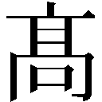

| 天下界の無信仰者（イレギュラー） 2巻 慈愛連立編 | |
| 奏せいや | |
| (2017) | |

プロローグ
宙に、一歩を踏み出した。青空と地面の狭間で足が空を踏む。見えない地面を歩いていくように、神愛は空を歩き出す。一歩を踏み出すごとに足裏から黄金の波紋が広がった。それは空間を揺らし街と建物をも揺らしていった。
憑依合体モード。黄金の聖霊、ミルフィアを背後に控え神愛は白の外套を身に纏っている。巨大な都市を悠々と見渡せる高みに立ち、ビル群の屋上すら見下ろす空を闊歩する。全身からは金粉でも散らすように金色の粒子を振りまきながら、神愛は神のように進んでいった。
その足が止まる。そして神愛は見上げたのだ。空に浮かんでいてもなお、その巨大さを確かめるように。
全長百メートルの神託物、メタトロン。石の彫刻のような白の巨人。その大きさと神々しいほどの迫力はまるで神話そのものだ。神愛はメタトロンの胸元辺りに立ち彼を見上げていた。メタトロンの、敵として。
悠然と立つメタトロンが拳を構える。これだけ巨大なものが動くだけで遠近感が錯覚を起こす。距離感がうまくつかめない。だがメタトロンの拳がそれだけで神愛の身長を超えるほど大きいことに変わりはない。
神愛は右手を握り込み、そこに黄金のオーラを集中させた。極限の神化を拳に宿し神愛も構える。
メタトロンの拳がとんできた。まるで壁が迫ってくるかのような迫力に、神愛も負けじと拳を叩き付ける。
両者の激突に衝撃が空を走る。爆風はあらゆる建物のガラス窓をぶち破り、世界に轟音を響かせた。
神対神。
これより始まるは神域の闘い。無信仰者神愛と慈愛連立最大の神託物メタトロンの激闘が行われる。
世界が、変わろうとしていた。
------たとえなにがあろうと、俺たちはずっと友達だ
天下界の無信仰者 慈愛連立編
第一章 動き出す陰謀
神愛とメタトロンが戦う三日前------
洗練さと豪華さが見事に融和していた。白を基調としたガラス張りの部屋には縦長のテーブルが置かれ白のテーブルクロスが敷かれている。天井には煌びやかなシャンデリアが吊るされ豪華さを演出し、部屋の隅に置かれた芸術品たちはこの部屋全体に存在感を持たせている。どこにいてなにを見ても、この部屋はいる者に退屈は与えない。
ここは静かだが、いるだけで気が引き締まるそんな威容に満ちていた。
サン・ジアイ大聖堂。慈愛連立を国教とするゴルゴダ共和国の建物だ。政府の主要施設の一つであり、ガラスの向こう側には青空の下ゴルゴダ共和国の美しい街並みが広がっている。まるで建物一つ一つがパーツのように街という一つの芸術品を作り上げていた。近々開催される教皇誕生祭の準備も完成を見せ始め、いつにも増して華々しさを増している。
そんな街並みを俯瞰しながら、一人の男がガラスの前に立っていた。
四十代ほどの堅物を思わせる男性だった。背は高く髪は黒い。サン・ジアイ大聖堂の職員である白の制服を着ている。それも職位の高い者が着るものだ。男は手に持っていた聖書を開き、そこに目を下ろすと朗読し始めた。
「とあるところに、百の羊と五十の牛、三百の鶏を飼う地主がいた。その者は土地を貸した者たちからことある毎に収穫の品を奪い、己の欲のみを満たしていた」
落ち着いた声が部屋の空気に馴染む。
「その町をイヤスが訪れると、その者はこう言った。ここを通りたくば一頭の牝牛か三頭の牡牛、もしくはここに居を構え五年の作物を収めよと」
彼の話すもの。それはかつて実在したという一人の男の物語だった。
「その時イヤスはおっしゃった。求める者よ、では、私の持てるものすべてを与えよう。私の服も、私の靴も、明日の食事のために残しておいたひと欠片のパンも。欲する者よ、見るがいい。私はすべてを失った。私が欲するものすべてを持つ者よ、なにゆえそなたはまだ欲するのか。私にはないものをそれだけ持っていて、なにゆえ欲するのかと」
男はパタンと聖書を閉じた。そして、聖書を見つめていた目を持ち上げる。
「来たか」
直後背後にある扉が開いた。足音から誰か一人が入室してきたのが分かる。男は正面にあるガラスを鋭く見つめながら背後から近づいてくる者に言う。
「そうまでして過去の使命を果たすのか？」
足音が近づいてくる。自分に向かって近づいているのが分かる。
「時代は変わった。争う必要などどこにある。二千年前とは違う。今や三つの信仰は共存している。ましてや」
男は一拍の間を置き、強く、悲しそうに告げた。
「同じ信仰で、同じ仲間で。これが我らのやることか？」
「ああ、その通りさ」
応える声は二十代ほどの男のものだった。この部屋には似合わない粗暴さを感じさせる口調だ。
「時代は変わらねえ。そして、俺たちもな」
男はそう言うと拳銃を取り出し、彼の頭へと突きつけた。
「じゃあな」
カチリと、撃鉄が持ち上がる音がする。
聖書を持った男は振り返ることなく静かに瞼を閉じた。これから先に想いを馳せるように顔を天井へと向ける。彼がこの時なにを想ったのか、それを知る術はない。ただ、今から己の命が絶たれることを悟った者の心境が穏やかでないことは確かだろう。
けれど、彼は違った。
「ああ......。さらばだ、友よ」
声は穏やかで、自分を殺そうとする男を友と呼び、死を受け入れた。
そして、死の瞬間がやってくる。
銃声が鳴り響く。男は頭を撃ち抜かれ、割れたガラスと共に外へと落ちていった。
空から、羽を持つ者が落ちていくように。
ガラスの欠片は光を反射して、きらきらと落ちていく。男と共に、落ちていく。
失意に沈んでいくように。
落ちていく。
人を愛した羽を持つ者のように。
男は地面に倒れた。住民から上がる悲鳴がここまで聞こえてくる。
けれど彼を殺めた男に反省の素振りはない。眼下から聞こえる騒動を他人事のように聞きながら、血の付いた聖書を拾い上げる。
男は不気味な笑みを浮かべていた。
「なにゆえ欲するのかだと？ ハァン？」
小馬鹿にしたように、かつて仲間だった男に言うのだ。
「欲しいからに決まってんだろ」
そして去っていく。拳銃をしまい、聖書を週刊雑誌の気軽さで持ち運び、男は扉へと向かって踵を返す。
これが始まり。
人と神と羽を持つ者が織り成す物語。
偽りの平和は仮面を外し、慈愛という名のメッキは崩れ去る。
喝采せよ、その時だ。
二千年前、果たされなかった使命と名誉の。
六十年前、守れなかった約束を。
男が部屋を去る時、その顔は笑っていた。
「さあ、いよいよだ。待ってろよウリエル」
その表情は、開戦の喜びに満ちていた。
＊
一学期も半ば、六月となれば通学の風景も見慣れたもので、道の両側に生えている桜の木もすっかり見た目が変わっていた。
「ふぁ〜あ」
俺は校門から校舎へと続く道を歩きながら盛大にあくびをする。未だに残る眠気が辛い。そこで思うんだが、眠いというのも体調不良の一種でいいんじゃいか？ だって危険だろ？ こうして歩くだけで転びそうだし車を運転してたら事故を起こしかねん。そう、泥酔と同じなんだ。だから俺は学校を休んで......いいわけないよな、分かってる、思ってみただけだ。
「ふぁ〜あ」
あくびまでため息が出る。
まあ俺がどんなことを思おうがやっぱりこの道を歩いていかなければならないわけで。素直に言えば億劫だ。けれど、それも最初の時に比べればだいぶマシになった。というのも。
天下界の無信仰者、宮司神愛といえば悪名で有名だ。
三柱の神が住んでいる天上界。そして俺たちが住んでいる天下界。天下界の住人はみないずれかの信仰を持っている。
三柱の神の一人、イヤスの神理、慈愛連立。
リュクルゴスの神理、琢磨追求。
シッガールタの神理、無我無心。
全員がこの三つのどれかを信仰しているんだ。
そんな中で無信仰者なんて異端もいいとこ。普通の生活なんて無理。俺だってそう思ってた。
でも。
この神律学園で俺には三人の友達ができた。それぞれクセのあるやつだけど、俺は彼女たちとの生活に満足していた。友達がいる。一人じゃない。それだけで学園に通う気持ちがこうも変わるんだもんな。
「なんだかんだで、一番助けられてるのは俺なんだろうな〜」
天気のいい青空を見上げながら俺は呟いた。
「助けられてるってなんのことですか？」
「うお！」
ビックリした、上を向いてたから全然気づかなかった。
視線を元に戻す。隣から話しかけてきた人物に振り向いた。
「なんだよ恵瑠、いるなら声かけろよな」
「いたから声かけたんですよ！」
隣にいた女の子が俺の意見にぴょんぴょん跳ねながら反論している。
栗見恵瑠。三人の友人の一人で、白い髪をツインテールにした小柄な女の子。慈愛連立の信仰者で根から優しい明るい女の子だ。ただ、頭がちょっと弱いところがあって、それがいいところでもあるんだが見ていて時折こっちの方が頭が痛くなる。
初めて会った時は無信仰者の俺にビビりまくっていたが、今ではこうして普通に話すことが出来ている。なんていうのかな、こいつの能天気さはなんだか見てて癒される、そんなやつだった。
「いたもなにも見えねえんだよ。もっと牛乳飲んでデカくなれ」
「でも神愛君、ほんとに牛乳飲んで背が伸びるんですか？」
「伸びる伸びる、見てみろあれ」
そう言って俺は神律学園の校舎を指さした。
「あの校舎だって牛乳飲んであんなにデカくなったんだぞ？」
「えええええええええええ！？」
恵瑠が驚いている。
「牛乳で！？ あんなに！？ そして飲んだの！？ どうやって！？」
やっぱりアホだこいつ。
「よーし！ ボクも牛乳飲んで大きくなるぞ！」
「おーがんばれがんばれ」
「そして神愛君を見下ろして鼻で笑ってやるんだ！」
「んだとゴルァ！」
「きゃーきゃー！」
俺は逃げる恵瑠を捕まえ頭を両手でぐりぐりしてやる。
「痛いです〜！」
「偉そうなこと言った罰だ罰」
「そんな〜！」
俺はあばれる恵瑠を押さえつけグリグリの刑をするのであった。
それで解放してやると恵瑠は頭を擦りつつ口先を尖らせている。
「むぅ〜、だっていつも神愛君見下ろしてるじゃないですか〜。ボクだって一度くらい見ろしたいもん」
「そんなこと言っても無駄だもん」
「もーう！」
恵瑠が近づいてくる。そして俺の腹をポカポカ両手で殴りつけてきた。
「こいつめ！ こいつめ！」
「んだよいってえな！」
俺は恵瑠を引き離す。いや、言うほど痛くはないんだが。まるで猫に殴られてるくらいの感じしかしない。だが殴り過ぎだろお前！ てかいつからボクシングポーズになった！？ そしてデンプシーだと！？
そんなこんなでこいつを鎮め、俺は恵瑠と並んで歩いていた。
もうお馴染みの光景だった。こうして誰かと一緒に登校することは。数か月前までならあり得なかったのに。
今の俺は、こうして幸せな毎日を過ごしていた。
「そういえばミルフィアさんは一緒じゃないんですか？」
「ああ、あいつは日直だからな。先に行ってるとよ」
「そうなんですね！」
俺の答えに恵瑠が大声で納得している。
ミルフィア。昔からの知り合いで自称奴隷の少女。俺はそんな生き方を止めさせようといろいろ頑張ったが未だ実らず、あいつは俺の奴隷として今日も精を出しているわけだ。
でも進展はあった。今のあいつはここの生徒で同じ教室に通っている。恵瑠や他の二人とも親しくやっていて友達としてうまくやっているんだ。
俺は隣を歩く恵瑠に言ってみた。
「今だから言うけどさ、ありがとな。ミルフィアと一緒につるんでくれてさ」
「なに言ってるんですか、ミルフィアさんとはお友達ですよ！」
「はは、そうだな」
そうやって明るく言ってくれる恵瑠が素直に嬉しい。見れば拳を握り締め俺を力強く見つめている。
その後力を抜くと、俺に向かってニッコリと笑った。
「それに、神愛君とも友達ですよ？」
「え？」
普通本人に向かってそれ言うか？ なんて一瞬頭を過ったけれど、それはいわゆる照れ隠しみたいなやつで。
「はは、ったく」
素直に嬉しかったんだ。
「ああ。お前は俺の友達だよ」
「はい！」
俺の言葉に、恵瑠は笑顔で頷いてくれた。
無信仰者の俺を怖がるやつは未だに多い。
それでも。
こうして傍にいてくれる人がいる。
それだけで。
人生はこうも違うものに見えるんだな。
「それはそれでいいんですけど〜」
「ん？ なんだよ」
しかし恵瑠としてはなにかしら思うところがあるようで、言うか言うまいか悩んだ素振りを見せた後、俺を覗くように見つめてきた。
「今の神愛君はもう王金調律という立派な信仰があるじゃないですか。もっと友達を増やそうって思わないんですか？」
「あー......」
そんなことか、と俺は内心呟くが言われてみればその通りなんだよな。
ふと左腕の腕章に目をやる。そこには黄色のダイヤが描かれていた。
王金調律。天下界に現れた第四の神理。これを信仰しているのは俺とミルフィアの二人だけだ。もとは黄金律という思想で、それのおかげで俺には友達ができたしミルフィアとも前より仲良くなれた。今でもこの教えについては感謝してる。
でもなー。
「別にいい。王金調律とかかったりぃし、俺は無信仰のままでいいよ」
「えええええええええええ！？」
恵瑠がめちゃくちゃ驚いている！
「でもでも！ 神愛君腕章ちゃんとあるじゃないですか？ 王金調律信仰してるじゃないんですか！？」
「こんなん飾りだよ。それに自分がされて嬉しいことは人にもして、自分がされて嫌なことは人にもしないだっけ？ そりゃそうだけどさ、そんなこといちいち気にして生きるなんて堅苦しいの嫌だしなー。お前らいるからそれでいいよ」
そ。もともと俺が欲しかったのは友達だ。それが叶った今これに縋る意味もないし。それに他人の顔色伺いながら生きるのは俺のキャラじゃない。
けれど恵瑠としてはやはり意外なのかしつこく聞いてくる。
「でもでも！ せっかく発現した神理じゃないですか！？ もったいないですよ！？」
「でもだりいよな〜」
「王金調律信仰しないんですか！？」
「俺は俺らしく生きたいんだよ」
「腕章付けてるじゃないですか！？」
「だからこんなん飾りだって」
「頑張ればもっと友達増えて、クラスのみんなとも仲良くなれますよ！？」
「べつに全員に好かれなくてもいいし」
「さすが神愛君だよ......」
ようやく納得したようだ。
恵瑠は俯きながらトボトボと歩いていく。
けれど、そんな時だった。
「でも、ボクはやっぱり」
「ん？」
隣を見てみればなにやら真剣な顔だ。それから顔を上げて青空に目をやると、パッと晴れやかな表情になっていた。
「ボクは、みんなが仲良しの友達の方がいいです。好き嫌いはそれはあるでしょうけど、でも！ それでも相手を思いやって、助け合う世界。そんな風になれたらいいなって、ボク思います！」
彼女の青い瞳は輝いていた。それこそ空に広がる青のように澄んでいて、想いを語る心は純真なんだって見てて伝わる。
「............」
人と人が助け合い、互いに笑顔でいられる世界。
そんな世界にしたいと本気で思っているんだ。
それが、栗見恵瑠。彼女という女の子だった。
「まったく。お前らしいよ」
「えへへ〜」
そう言うと屈託のない笑顔で恵瑠は微笑んだ。
そんなこいつが、俺は大好きだった。
ずっと続くと思ってた。
こんな何気ないやり取りを繰り返し、
宿題とかテストに頭を悩ませて、
放課後にはみんなで集まって、
くだらないことを真剣にしゃべって、
そして、
みんなで笑ってる。
その輪の中で、
恵瑠。
お前は誰よりも笑ってる。無邪気な笑顔で。
『人と人が助け合い、互いに笑顔でいられる世界』
そんな世界になれたらいいと、そう言うお前の笑顔がある限り。
ずっと、続くと思っていたんだ。
だけど。
その時がやってきたんだ。
二千年前の使命と名誉の。
六十年前に守れなかった約束が。
俺たちの生活を劇的に変えるのに、そう時間はかからなかった。
学校の放課後、何事もなく一日を終え俺は昇降口で靴に履き替えていた。外はまだ明るいがすぐに夕日に変わるだろう。俺の隣には二人の女子がいて恵瑠ともう一人は、
「ねえ神愛」
「ん？ なんだよ」
先に靴に履き替え俺に声をかけてきたのは加豪切柄。赤い髪を背中まで伸ばした女の子で信仰は琢磨追求だ。己を強くすることを目指す神理そのままのやつで、気は強いが義理堅いいいやつだ。なんていうか真っ直ぐなんだよな、性格が。
「ミルフィア日直でまだやることあるんでしょ？ 手伝わなくてよかったわけ？」
「いいんだよやらせとけば。それよりも帰ってゴロゴロしたい」
「さすがあんたね......」
呆れたように俺を見てくる。うるせえ、そんな目で俺を見るな。俺はロッカーを閉じて言ってやった。
「それに、俺が手伝うとか言い出したらあいつがどう出るかなんて分かり切ってるだろ」
「それもそうね」
加豪は納得したようにふっと笑みを浮かべていた。すると隣では恵瑠がじーと加豪を見上げている。
「？ どうしたの恵瑠、私の顔になにか付いてる？」
「じー」
いったいなんだろうか。こいつの考えは俺にも分からん。
それで恵瑠が加豪を見ながら口を動かした。
「加豪さんって背いですよね。やっぱり牛乳ですか？」
背を見てたのか。たしかに加豪は背が高い。俺と同じくらいだろうか。
「うーん、それもあるかもしれないけど。でも成長期で背を伸ばすならバランスのいい食事と適度な運動よ」
「運動！？ じゃあこの校舎も運動したんですか！？」
「は？」
「げ」
嫌な予感がする。俺は二人に気付かれないように出口に向かった。
「えっと、恵瑠なに言ってるの？」
「知らないんですか加豪さん！？ この校舎はですね、牛乳を飲んでこんなに大きくなったんですよ！」
「............」
今度は加豪が恵瑠をじーと見下ろす番だった。それから加豪は額に手を当てると顔を軽く振った。
「それ、言ったの神愛ね」
「はい！」
「神愛、待ちなさい」
「ゲ」
バレた。俺は立ち止まると振り返る。加豪が鋭い視線で俺を見てきた。
「神愛、あんたテキトウなこと言わないでよね。恵瑠はなんでも信じちゃうんだから」
「んだよ俺のせいかよ？」
「あんたのせいでしょうが」
「だとしても半分の責任はこいつの頭だろ？」
「言い訳しない」
加豪は「もう」と呟いてから恵瑠に視線を変えた。
「神愛は恵瑠をからかわない。それと恵瑠もすぐに信じちゃダメよ。こいつ平気で嘘つくタイプなんだから」
「ええええええええ！？」
加豪から言われはじめて嘘だと分かったようだ。てか最初から気づけよ。
「神愛君あれ嘘だったんですか！？」
「あん？ んなもん当然だろ」
「開き直ってるぅううう！」
「あんたたち息ぴったりね......」
そんなこんなで昇降口を出てた。正門までの道の両側に植えられている桜は花弁を散らし季節の移ろいを感じる。
すると思いついたように加豪が言い出した。
「そういえばミルフィアは日直だとして天和はどうしたの？ 私知らないけど」
天和というのは三人目の友達のことだ。
薬師天和。信仰は無我無心。肩まで伸ばしたセミロングの緑の髪に赤い瞳が印象的な女の子だ。感情が薄いというか落ち着いているのだが、うさぎに対しては異常な執着を見せる不思議なやつだ。
「どうせいつもみたいに飼育小屋だろ、あいつ飼育委員だし。たしかジャックとジェニファーだっけ？ うさぎの名前」
「あれ、一号二号でしょ？」
俺が聞くと加豪が違う名前を言い出してきた。あれ？ 俺が聞いた時と違うぞ。
「ボクが聞いた時は漆黒を纏う者と暁に愛されし者でしたよ？」
「どーなってんだあいつのネーミングセンス！」
バラバラ過ぎるだろ。てかなに、何度も変えてるの！？
「なんで名前がぜんぜん違うんだよ！」
「そんなの私が知るわけないでしょ。私だって今知ったんだし」
「けっきょくうさぎさんの名前ってなんなんでしょうかね？ てか今はなんて呼ばれてるんでしょう？」
「うーん。直接本人に聞いてみるか？ 呼べば来るだろ」
「呼ぶってどうやってよ？」
「そうですよ神愛君」
加豪と恵瑠が怪訝そうに聞いてくる。
「うーん......」
それで俺は思い付いたのを言ってみた。
「あ、こんなところにうさぎがいる。めちゃくちゃ可愛いなー、ステキだなー（棒）」
「............」
「............」
「んだよその目は！？」
二人がジト目で見てくる。そんな目で俺を見るな！
「今分かった、あんたバカね」
「神愛君、かわいそうな人だったんですね」
「んだとぉおお！？ じゃあどうすれば良かったんだよ！？」
「普通あるわけないでしょう」
「ああ！？ じゃああいつの普通ってなんなんだよ！？」
パリィイイイン！
「なんだ！？」
その時だった。突如頭上からガラスの割れる音が響いたのだ。見上げると三階の窓ガラスを破って人影が飛び出していた。
人影はドン、という重い音を立てて俺たちの正面に着地した。緑の髪がさらりと流れ、振り返ると赤い瞳が俺たちを見てくる。
「うさぎさんはどこ？」
天和だった。
「............」
「............」
「............」
マジかよ。てかなに言ってんだこいつ。てか飛び降りた！？
天和は俺に近づいてくるともう一度聞いてきた。
「うさぎさんはどこ？」
ごめんなさい、嘘です。嘘に決まってるだろなんで来るんだよ。誰か助けてくれ！ オーディエンスだ！
俺は加豪と恵瑠を見てみる。しかし二人はブンブンと顔を横に振っていた。くそ！
俺は表情を固くして天和に振り返る。
「あー、残念だったな天和。ちょうどさっき逃げちまってさ」
「ほんと？」
「お、おう」
「そう」
よかった、通じたようだ。
「おかしいわね、うさぎさんが百メートル以内にいれば気づくんだけど」
どうなってんだこいつ！？
新たな発見に驚く。嘘かほんとか分からないが知りたくもないので話題を変えてみた。
「そういえば天和、飼育小屋のうさぎは元気なのか？ 二匹いただろ、なんて名前だっけ？」
「岡田浩之と鈴木信一のこと？」
ぜんぜんちげえじゃねえか！
「お前、それでうさぎは自分のことだと分かるのか？」
「ううん、名前を呼んでも来ないの。もう二か月も世話してるのに」
「毎日ころころ名前変えられたら俺だって分からねえよ」
天和は寂しそうに言うがそりゃそうだろ。こいつの不思議っぷりは飛び抜けてるな。
それからはせっかく四人揃ったことなので一緒に帰ることになり、俺たちは正門へと歩き出した。ガラスは知らん。今必死に忘れようとしているところだ。
それで今一度俺は三人を見つめてみた。
能天気だけど元気な恵瑠。
厳しいけれど真っ直ぐな加豪。
おとなしいが不思議な天和。
そして俺。
性格も信仰もバラバラな俺たちだけど、こうして集まって楽しく話ができる。
以前の俺から比べれば信じられない状況だ。いつもいじめられてばかりで、一人きりだったのに。
それなのに、友達がいる。
口にしたことはないけれど、俺はみんなが好きだ。大切な友達で、どんなことがあってもこの時間を守りたいって、本当、心の底からそう思えるんだ。
そんなこんなで正門に向かっている俺たちだが、そこでふと気づいた。
他の下校している生徒たちがなんだが楽しそうというか浮き足だっているというか、ウキウキしているように見えるのだ。そういえば教室の連中の一部はそんな仕草をしていた気がする。
「なんかあるのかな......？」
よく見てみれば楽しそうにしているのは全員白の腕章をつけている。慈愛連立の信仰者ばかりだ。
「なあ恵瑠」
それで俺は恵瑠を呼んでみた。すぐ隣を歩いていて恵瑠は「ん？」と俺を見上げてくる。
「なんですか神愛君？ おこづかいですか？」
「殴るぞお前」
なんで俺がお前に金をやらないとならないんだよ。
「そうじゃなくてさ、慈愛連立ってなにかあるのか？ なんとなく楽しそうっていうかさ」
「楽しそう？ ああ！ そんなの当然ですよ！」
すると恵瑠は勢いよく答えてきた。彼女も期待しているのか熱い眼差しを向けてくる。
「なんだってもうすぐ『教皇誕生祭』があるんですよ！」
「教皇誕生祭？」
「知らないんですか神愛君？」
知らん。というか無信仰者の俺にはそういうもの全般ザ・他人事だがらな。
「え、神愛知らないの？」
「私も知ってるわよ」
「え、お前ら知ってるの？」
他の信仰者のこいつらも知っているということはかなり大きな行事なんだろうか。
俺は疑問の表情を浮かべるがすぐに恵瑠が答えてくれた。
「教皇誕生祭というのは名前の通り、慈愛連立を主教としているゴルゴダ共和国の教皇様の誕生日なんですよ」
「へえ、誕生日ねえ」
それでこの賑わいというわけか。
「教皇誕生祭の日は祝日で国を挙げてのお祭りなんです。盛大なパレードを開いてみんなで踊っておいしいものを食べるんですよ」
「おいおい、たかが一人に国を挙げてか？」
「たかがじゃないですよ、慈愛連立でもっとも権威のある教皇の誕生日ですよ！」
恵瑠はえっへんと平らな胸を張ってくる。とはいえなにがすごいのか俺にはイマイチ分からん。
「お前は参加するのか？」
「うーん、どうだろう。参加してみたい気もするけど......えへへ〜」
「なんだ、参加できないのか？」
恵瑠は誤魔化すように笑っている。
「出来ないっていうわけでもないんですけど、教皇誕生祭は祝日ですし、その日を迎えただけでもお祭り気分を味わえるっていうか、それだけでいいかな〜って。誕生祭の様子もテレビで流れますし」
「ま、そんなもんか」
ちなみに教皇誕生祭の日は学校もお休みだった。慈愛連立の生徒を抱えた学園側の配慮だろう。
加えて俺たちが暮らしている全寮制の神律学園は商業地区と呼ばれる三つの信仰がごちゃまぜになっている街にある。だからこの学園にもいろいろな信仰者がいるんだな。
「教皇、ね〜。いったいどんな奴なんだろうな」
「慈愛連立は人助けをする信仰だし、そのトップならやっぱり優しい人なんじゃない？」
加豪が言う。うん、俺もそう思う。
「慈愛連立は愛という感情に重きを置いている信仰だから、きっとすべての線引きも超えて愛する人かもよ」
「天和、いいこと言ったつもりかもしれないが止めておいたほうがいい。お前が言うとややこしくなるんだよ」
「どういうことよ」
天和はむくれているようだが日頃の行いというやつだ。
「恵瑠、お前は知らないのか？」
「うーん、教皇様ですか〜」
考え事かなにかを思い出しているのか、恵瑠はしばらく上を向いていたが、すぐに視線を俺へと向けた。
「ボク、前に教皇様とは会ったことあるんですよね」
「「ええええええええええ！？」」
驚いた。俺と加豪から大きな声が上がる。
「恵瑠、あなた会ったことあるの？」
「おいおい、嘘だとしたら盛り過ぎだぞお前」
「ほんとですよ！」
恵瑠はほんとだと言うがにわかに信じられん。
「教皇って慈愛連立の一番偉い人なんだろ？ なんでお前が会ってるんだよ。あ、パレードで見かけたとかいうのはなしだぞ！？」
「そういうのじゃないんですけど〜」
「じゃあどういうのだよ」
「うーん......えへへ〜」
「笑って誤魔化すな！」
恵瑠は頭を掻いていた。
「なんだ、話せないのか？」
「うーん、ごめんなさいです」
「まあ無理にとは言わねえけど」
気になるし分からないのは残念だがきっと事情があるんだろう。なら仕方がない。てか、言えないなら何故言ったし。
それで正門が近づいてきた時だった。
正門前にいくつもの車が停まっていたのだ。それもすべてが黒塗りのいかにも高級そうな車だ。
「なんだ？」
周りの生徒もこのことにざわついている。
車からは黒のスーツにサングラスをかけた男たちが続々と下りていく。そして周囲を警戒するように立った後、真ん中の車から一人が下りた。
それは、あらゆる汚れを漂白されたような白だった。
水色のセミロングの髪、純白のスーツを着ている。肌も雪のように白い。男装なので分かりづらいが胸のふくらみから女性だと分かる。青い瞳はするどい眼光を宿し見る者を圧倒してくる。その立ち姿に纏うオーラ、ただ者じゃないと一目で分かる。
彼女の後を追うように黒の男たちが歩いてくる。その物々しい集団に生徒たちから道を譲った。
そんな彼女たちが、俺たちに向かって近づいてくるのだ。
おいおいなんだ？
緊張と警戒が同時に高鳴る。感じるのは敵意ではないが威圧感がはっきり分かる。
俺は近づいてくる一団を睨むが、隣で恵瑠がつぶやいた。
「ガブリエル......」
ガブリエル？
見れば恵瑠は震えていた。驚いたように。怯えるように。まるで虐待をしてくる父親と出会ったようなそんな感じ。
恵瑠は、明らかに怯えていた。
「久しいな」
集団の先頭を歩く女性が俺たちの前で止まる。
「............」
彼女の挨拶に恵瑠は応えない。表情を固くして見上げるだけだ。
彼女も彼女でするどい姿勢を崩さない。百八十センチはあるだろう高身長から恵瑠を見下ろし、無言の圧力は傍から見ている俺でも圧されそうになる。体の小さい、ましてや直に見つめられている恵瑠はそれ以上だろう。
それが分かっているはずなのに、ガブリエルと呼ばれた女性は威圧を止めず、言い切った。
「ついて来い、話は車中でする」
決定事項のように、それが当たり前のように言ってガブリエルは振り返ろうとした。
「いや、だよ」
しかし、恵瑠は断った。表情には怯えを残して、けれど強い意思を感じる瞳で告げる。
「ボクはもう戻らない。そう決めたんだ！」
小さいながらも勇気を感じる声だった。それだけに恵瑠は真剣で、思い切って言ったんだと伝わってくる。
それでも、目の前の女性は変わらなかった。
「ついて来い」
たった一言、恵瑠の思いを無視して言ってくる。恵瑠が悔しそうな顔をする。
それが、無性に我慢できなかった。
いつも笑顔でアホなことして、いちいち驚いて。でも、そんなこいつが俺は好きだった。底抜けに明るくて、たまにイラッとくるこいつのアホさが、俺は好きだったから！
もう、見ていられなかった。
「止めろ、嫌がってんだろ！」
「神愛君」
俺は恵瑠の前に立つと女性と対峙した。彼女の青い瞳が俺を見る。どこか恵瑠と似た澄んだ青い瞳だった。
「だれだ、貴様」
すさまじい圧迫感だ。それでも俺は退かない。
「てめえこそ誰だよ。断られたんだ、しつこいと嫌われるぜ？」
「神愛ッ！」
そこで加豪が耳打ちしてきた。
「この人、ゴルゴダ共和国の国務長官よ！」
「国務長官？ すごいのか？」
「主に外交を務める、実質的なゴルゴダ共和国の最高責任者よッ」
珍しく加豪が焦った様子で俺を見てきた。それだけすごいやつなんだろう、雰囲気だけじゃないってことか。
「レベルが違い過ぎる。どんなことか知らないけど、あんたが首を突っ込むことじゃないわ」
後ろから肩を掴んでくる。掴む手の力強さから加豪の必死さが伝わってきた。
だけど。
「いいや、退かねえ」
「神愛！」
俺は加豪の手を振り解いた。振り返り加豪を見つめる。
「じゃあ、お前は恵瑠が心配じゃねのかよ！？」
恵瑠は今でも怯えたような表情をしている。それなのに見て見ぬフリをするのかよ？
「そうじゃない。そりゃ私も恵瑠のことは心配よ。でも！ あんたの心配もしてるのよ！」
その時、はじめて加豪の気持ちが分かってハッとした。
「神愛は慈愛連立の人間じゃないでしょう？ なのに、あんたまでなにかあったらどうするの？ そんなの、心配するに決まってるでしょう！」
加豪は俺の心配をしてくれていたんだ。顔も見れば真剣で、俺のことをまっすぐに見つめてくれている。
「その通りだ」
そこでガブリエルが口を挟んできた。
「部外者は外れてもらおう。これは、私と彼女の話だ」
俺が入り込むような話じゃない。立場的にも、状況的にも。俺は無関係で、仮にそうだとしても次元が違う。学生一人がどうにか出来ることじゃない。
加豪の心配とガブリエルの断言が俺にそう言ってくる。そりゃそうだ、普通に考えれば出来るわけがない。誰だってそう思う。
「加豪、ありがとうな」
「え？」
「でもわりぃ」
二人が俺に止めるように言ってくる。俺では無理だと。
だけど、俺は絶対に諦めない。
「俺は慈愛連立の信仰者じゃない。でもな、俺は俺なんだよ。信仰なんて関係ねえ。俺のやりたいようにやらせてもらうぜ」
友人が苦しんでるのを、放ってなんておけるか。
「俺は、無信仰者だからな！」
俺は叫んだ。それこそが俺の信仰だと言わんばかりに。
そんな俺を、恵瑠が驚いたような、喜んでいるような顔で見上げていた。
「ほう。そうか、お前が無信仰者。宮司神愛か」
ガブリエルがどこか納得したような表情で俺を見つめてくる。
「そういえばその腕章、そういうことか」
「知ってるようでなによりだ。それであんたはええっと、なんかすごい役職の人間なんだろ？」
「ゴルゴダ共和国、国務長官ガブリエルだ」
「それがこんなアホになんの用だよ」
「神愛君ひどいですよ！？」
感動したような恵瑠だったが一気にぷんぷんになっていた。
「ふっ、阿呆か......」
「？」
俺と恵瑠の間で猫パンチの応酬が始まるが、それを見てなにを思ったのか。ガブリエルが少しだけ笑みをこぼすと恵瑠を見下ろした。
「どうやら、よき友を得たようだな」
恵瑠は俺を殴るのを止めるとガブリエルに向き直り、「うん」と小さく頷いた。
それを受けてガブリエルは表情を引き締めた。その顔は冷たく、まるで恵瑠を責めるようだ。
「それで。お前はそれでいいのか？ それで満足か？」
「それは......」
その言葉に恵瑠の表情が暗くなる。
「お前はそれで、『自分を許せるのか？』」
「ボクは......！」
次に俯き、なぜか悔しそうに体を震わせている。
「恵瑠？」
様子がおかしい。恵瑠とガブリエルがどんな関係になるのか知らないが、今の恵瑠はいつもと違う。いつもはもっとお気楽に笑っているやつなのに。
するとガブリエルが側近の男に言った。
「観衆を退けろ」
「大丈夫です、すでに」
周囲はすでに男たちが囲っており近くには誰もいない。
ガブリエルは男からの返事を聞くと一歩俺たちに近づいた。
「お前たちをこいつの友人と認め、特別に伝えてやる。口外はするな」
険しさが増していく。そしてガブリエルは重苦しい雰囲気のままに口を開いた。
「監視委員会委員長、ラグエルが何者かに殺された」
「ラグエルが！？」
ラグエル？ 俺は当然のこと知らない名前だ。けれど恵瑠には重要な人の名前だったのか、ガブリエルの言葉に慌てている。
「そんな......ラグエルが？ どうして！？」
「事態を把握したなら来い。貴様の遊戯もここまでだ」
それで今度こそガブリエルは踵を返した。純白のスーツに包まれた細身を反転させ、まっすぐな背筋のまま車へと歩いていく。
恵瑠は俯いていた。無言のまま立ち尽くし考え込んでいる。
そして、恵瑠は俯いたまま歩き出した。
「おい、恵瑠！？」
ガブリエルの後を追う恵瑠を呼び止める。それで恵瑠は立ち止まり振り返ってくれたが、その顔は寂しそうだった。
「ごめんなさい、神愛君。ボク、行かないと」
「なんでだよ！？」
恵瑠はどう見ても嫌そうだ。さっきだって断ってた、なのにどうして？
「お前は、ほんとうにそれでいいのか？ 無理やり行かされているとかじゃないのかよ？」
「うん」
俺の心配に、恵瑠は小さく頷いた。
「これは、ボクが自分で選んだことだから」
その後恵瑠は小さく微笑んだ。けれどそれは普段の明るい笑みではなく弱々しい笑みだった。
無理やり連れていかれるっていうなら手を引いてでも阻止してた。でも、恵瑠が自分で行くというなら止められない。
だけど、胸の中ではもやもやしていた。あいつのあんな顔、見たくなかった。それをそのままにしておくのも我慢できなかったから。
これで本当にいいのか？ ここで止めなくていいのか？
胸の内で心が天秤のように揺れている。そう、悩んでいる時だった。
正門前に停まっていた車が爆発したのだ。
「何事だ！？」
ガブリエルが叫ぶ。すごい爆風だった。俺も慌てて見るが、そこには黒い煙を上げて炎上している車があった。
「きゃあああ！」
突然の出来事に生徒たちが悲鳴を上げる。
さらに別の車も爆発した。影が車に走り直撃した瞬間、爆音と爆風がここまで届き熱風を感じる。
「砲撃だと、どこからだ！？」
「おいおい、どうなってんだよ！？」
五台はあった黒塗りの車は次々と爆破され使い物にならない。生徒たちは悲鳴を上げながら一目散に逃げ出していく。
「ひゃおう！」
その中には恵瑠の悲鳴もあって、俺は慌てて駆け付けた。
「変な悲鳴あげてんじゃねえぞ」
「だって神愛君！？」
「うるせえ！ まずは逃げるぞ、ここは危険だ」
俺は恵瑠の手を取った。小柄な見た目通り手は小さく、その細い指を力強く握ってやる。
「他の車は」
「裏口に用意してあります」
「急ぐぞ」
ガブリエルは護衛の男たちを傍に置き恵瑠を見てきた。
「お前もすぐに来い！ ぐずぐずするな、狙われるぞ！」
「狙われる？」
まさか恵瑠のことか？ なんで恵瑠が狙われなくちゃならない？ まさか、さきほどの殺人事件と関わりがあるのか？
状況がまるで分からん。何故ガブリエルが恵瑠の前に現れたのかも、何故命を狙われなくちゃならないのかも。
「神愛、あんたどうするつもり！？」
「私はどっちでもいいけど」
加豪と天和が俺を見てくる。
「こうなりゃ仕方がねえ。恵瑠を守りながら裏口に急ぐぞ！」
俺と加豪、天和は同時に頷いた。
「そんな！？ みんなはいいですよ！ これはボクのことですから神愛君たちはここにいてください。巻き込まれることないですよ！？」
「アホかぁ！」
「え？」
すると俺たちを心配してか恵瑠が大声で言ってきた。しかし俺はさらに叫んで黙らせる。こんな状況でなにバカなこと言ってやがる。
「こんな状況で友人を放って置くバカいるか！ 出来るかんなこと！」
「神愛君......」
「お前がなんで狙われるかなんて知らねえよ！ でもな、どう見ても危険だろうが。なら守ってやるよ。ほらいくぞ！」
恵瑠の手を引いた。強く、強く、力強く。
「......うん」
その手を、恵瑠も握り返してくれた。
俺たち四人は裏口に向かって走り出す。ガブリエルたちも走り出していた。
すると正門から武装した男たちが現れた。グレーの迷彩色を着ており黒のサブマシンガンを肩から下げている。全員がヘルメットで顔を隠し俺たちを追ってきた。
「おいおいおい！」
どこから出てきた？ てかなんだそれ！？ どこで買ったんだよ！？
ここは平穏な学園から突如戦場に変わっていた。襲撃者たちが発砲し、ガブリエルの護衛も拳銃で応酬するが先手を取られ倒れてしまう。
そして盾となる護衛がなくなったガブリエルに銃弾が向けられる。
だが、
「くだらん」
殺到する弾丸は、彼女の前で弾かれた。
ガブリエルの前方に展開されたのは青白い魔法陣だった。それが彼女を銃弾から守っている。それから残った護衛の男たちが敵を打倒していく。
「神愛君！？」
恵瑠が叫んだ。俺たちの後ろにも敵が現れたのだ。雰囲気からして素人じゃない。訓練されたプロだ。それが数人、一斉に銃口を向けてくる。
まずい！
そこへ、俺の横を通り抜ける赤い髪があった。
「戦うっていうなら手加減なしよ」
加豪が俺たちの前に立つ。気丈にも立つ姿は凛としていた。
「加豪！？」
加豪が敵を睨む。しかし相手が武装しているのに対し加豪は丸腰だ。このままだと良い的でしかない！
「加豪、逃げろ！」
加豪に向けて銃弾が放たれる。俺はやばいと過るが、しかし、それは起こった。
加豪に当たる銃弾。それが、彼女を傷つけることなく弾かれたのだ。
「マジか！？」
いくつもの銃弾を受けながら、なお加豪は無傷で立っている。それを見て思い出す。
神化。
この世界には神化と呼ばれる現象がある。神理を目指す者は神に近づく。そのため信仰心の強い者はそれだけ強くなる。信仰心の強い者なら片手で岩だって持ち上げられるだろう。だが、銃弾を受けてもビクともしないなんて。
「銃弾が利かない？ まさかこいつ」
これには相手も驚いている。
どよめく敵を前に、加豪はするどい目つきで睨みつける。そして右手を虚空へと翳した。
「まさか？」
その動作を知っている。くる。直感がそう告げる。
「我が神リュクルゴスよ、我はあなたに従いあなたの道を示す者。ゆえに我に力を！」
その言葉を知っている。間違いない！
「神託物招来！ 雷切心典光！」
加豪切柄の神託物。雷切心典光だ。
いくつもの雷鳴を轟かし、現れたのは刀だ。刀身をいくつもの電流が纏い不規則に動くそれが地面を破壊する。圧倒的な熱量が幾条となってっていた。
神からの贈り物。高い信仰心を持つ者にだけ与えられる恩恵を手に、加豪は敵と対峙していた。
「神託物！？ こいつ、高位者クラスか！」
神託物を出せる信仰者は予想外だったようだ。敵が狼狽えている。
そこへ加豪を見ていたガブリエルが呟いた。
「ほう。高位者クラスの神化となればさらなる物理無効も備わる。神託物か、同じ高位者クラス以上の者でなければ傷つけられんだろうな」
敵が戸惑う中、そんなのをお構いなしに加豪は前言通り手加減なしで攻撃していく。
「この子は私の大事な友達なの。退いてもらうわよ！」
加豪が振るう雷切心典光。その一閃と共に電流が放たれ周囲の敵を同時に倒した。
「があああ！」
電撃をもろにくらい敵は倒れていった。
しかし今度は正門からワゴン車が突っ込みそこから敵がぞろぞろと出てくる。めちゃくちゃだろ、ここ学校だぞ！？
「敵が多いッ。神愛、あんたはさきに恵瑠と一緒に行って。ここの敵と天和は私がやるわ」
俺に背を見せる加豪がちらりと振り返り俺を見る。加豪の言う通り敵は多い、それを加豪だけに任せることに気が退ける。
「大丈夫かよ？」
けれど、加豪は言ってくれた。
「まかせなさい」
自信に満ちた表情で。それで俺も頷いた。
「......無理すんなよ」
「ええ」
俺は恵瑠を連れて走り出した。追おうとしてくる敵は加豪が引き付けてくれている。背後には神託物を構える加豪と棒立ちしている天和が俺たちを見送っていた。
「じゃ、あとはよろしく」
「ねえ天和、少しは隠れてくれない？」
隠れるどころか逃げる素振りもない天和に加豪は呆れたように呟いていた。
俺と恵瑠、そしてガブリエルたちは学校の裏門を目指して走っている。加豪たちが頑張ってくれてはいるが数人の追手は今も俺たちを追いかけていた。
「おい、あいつらなんなんだ！？ どうして狙ってる！？」
俺と一緒に逃げているガブリエルは眉ひとつ動かずするどい表情のままだ。焦るどころか冷静そのものだ。
「おそらく教皇派の人間だな」
「教皇派？ ちょっと待て、同じ慈愛連立の人間ってことか！？」
「話はあとだ、そんな状況でもあるまい」
そりゃそうだ。疑問はあるがまずは逃げるのが先、俺は握っている手の存在を改めて思う。
俺たちは中庭にたどり着いた。ここまで来れば裏門はすぐそこだ。校舎の間に挟まれた中庭には中央に花壇がありそれを囲うようにベンチが設置されている。
「恵瑠頑張れ、もう少しだぞ！」
「うん！」
恵瑠も懸命に走ってくれている。
だが敵部隊が追いついて来た。すぐに肩にかけた銃器で狙ってくる。
「恵瑠、伏せろ！」
俺は恵瑠にかぶさるようにして抱きつくとすぐに花壇の影へと飛び込んだ。
直後、銃弾が俺たちの場所を通過していった。花壇のレンガ造りの壁が紙細工のように乱れ飛び激しい音がする。俺と恵瑠は花壇で凌ぎガブリエルは立ったまま。魔法陣が阻止していた。銃弾が魔法陣に着弾するたび火花を散らして弾かれていく。そんな中護衛の男たちが物陰に隠れ負けじと反撃していた。
「くそ！」
俺と恵瑠は地面にうつ伏せになりながら敵の攻撃を耐える。激しい銃撃の音と辺りが壊れていく音が耳を叩き付けるようだ。辺りには花壇の破片やら土やらが散らばっていった。ガブリエルたちの方もなんとか耐えてるが自分たちで精いっぱいという感じ。
このままではジリ貧だ、自分でなんとかするしかない。
「いいか恵瑠、俺が合図したら一緒に逃げるぞ」
「え、合図ってどういう合図ですか！？」
「え？ どういう？」
俺たちから近い場所に銃弾が当たった。やばい！
「山！ 川！ みたいな？」
「それ合図じゃなくて暗号だろ！ そうじゃなくて今だ！ とか行くぞ！ とか言うからついて来いよ？」
「分かった！」
「本当だな！？」
「山ぁあああ！」
「もういい、今だ！」
「川ぁあああ！」
しめた。俺は護衛が攻撃して敵が隠れた隙をつき走り出した。このまま中庭を通れば裏門まですぐだ。
だが、俺たちが飛び出したちょうどその時、頭上で激しい音が鳴り響いた。
「なんだいったい！？」
頭上から聞こえる轟音は強風まで連れてきた。それで視線の先にいたのは、
「なんだよそれ！？」
頭上にいたのは機銃を搭載した武装ヘリだった。それが旋回するとちょうど目の前で止まり正面を向けてくる。
「うそだろ」
意味が分からない。ヘリコプター？ なんだこの規模、どうなってやがるんだ！？
あまりのことに咄嗟に次の考えが出てこない。花壇をとび出したことで隠れる場所もない。
「神愛君！？」
恵瑠が叫ぶ。
瞬間、武装ヘリについたミサイルが発射された。二つの弾頭が俺たちに向かって走ってくる。
「くっ！」
やばいと思うのに、なにも出来ない。
出来なかった。
隠れることも逃げることも。
ここで終わるのか？
そう思った、瞬間だった。
「そこまでです」
迫り来るミサイルが俺たちに当たる前に爆発したのだ。
「主に害なす者ならば、私が相手になりましょう」
直後、この場に少女の声が響き渡った。
その声を知っていた。それが誰だか知っていた。
黒煙が晴れていく。そこから見えるのは金髪の少女。
俺のピンチにいつも駆け付ける、その少女の名前は------
「ミルフィアァア！」
彼女は、二つのミサイルを撃墜し登場していた。
ミルフィア。金髪のショートカットに俺と同じ黄色のダイヤの腕章をつけた自称奴隷の少女が、俺たちの目の前に立っていた。
爆風に髪を煽られながら、ミルフィアは静かに振り向いた。
「主、ご無事ですか？」
澄んだ声だった。さきほどまでの厳格な口調とは違う。親しみを感じる柔らかい話し方。
だが、俺はすぐに叫んだ。
「ご無事ですかって、お前の方こそ大丈夫なのかよ！？」
二つのミサイルはミルフィアが迎撃したのだ。その身一つで。二つのミサイルをモロにくらって、しかしミルフィアはピンピンしている。
ミルフィアはニコっと笑うと、表情を引き締めてヘリを見上げた。
「主は下がっていてください、私がやります」
ミルフィアは見上げる。鋭い眼差しの先には黒色をした武装ヘリ。両翼には機銃とミサイルの弾頭が彼女を狙っている。
けれど彼女は怯えない、ひるまない。気丈な出で立ちで敵と対峙する。
敵の機銃が動き出した。銃身が回り出すと激しい音とともに銃弾を撃ちまくる。そのあまりの威力に地面はえぐられ破片が水しぶきのように飛び散っていく。
しかし、彼女は無傷だった。
ミルフィアは跳んだ。左腕を盾にして武装ヘリまで跳躍すると正面ガラスに着地し、回るプロペラになんと右腕を突っ込んだのだ。
千切れる。普通なら。彼女の右腕はあっけなく吹き飛ぶはずだ。
しかしミルフィアの神化はそれを許さない。プロペラはミルフィアの右腕に衝突すると次々とひしゃげていった。ヘリは完全にコントロールを失いミルフィアは飛び降りた。地面にスタッと着地するとヘリは回りながら校庭に墜落していく。直後爆風が届きミルフィアの髪とスカートを激しく揺らしていった。
中庭に立つのはミルフィアだ。破壊され花弁が散乱するその場所に、けれど凛として立つ彼女の姿は美しかった。
「ミルフィア............」
その姿に俺は見入っていた。すごい。素直にそう思う。それしか感想が出てこない。
彼女は誰よりも強く、そして美しかった。
ミルフィアの行動に敵も撤退していく。勝ち目がないと分かったのだろう。
それを見てミルフィアが近づいてきた。
「遅くなって申し訳ありません主。私がそばにいなかったばかりにこんな」
「なに言ってんだ、お前のおかげで助かったんだ。ありがとな、ナイスタイミングだったぜ」
「はい......！ ありがとうございます！」
彼女の見上げる瞳に俺は頷いた。ミルフィアも嬉しそうだった。
「ミルフィアさんありがとうございました！ 助かりましたよ〜」
「いえ、恵瑠も無事でなによりです」
恵瑠は胸を撫で下ろし、そんな恵瑠を見てミルフィアは微笑んでいた。
だが、すぐに表情を引き締め俺を見てくる。
「それで主、これはいったいどういうことですか？」
当然の疑問だろう。いきなり学園に武装した兵隊が突撃してきたんだ。それも武装の質や規模から相当巨大な組織だと思う。ていうか、こんなことができる非正規な部隊が存在するのか？
まるで国家レベルだぞ？
「俺だってよく知らねえよ。だが、どういうわけかこいつが関係ありそうでな」
「恵瑠が？」
なにが起こっているかなんて俺だって知らねえよ。けれど俺とミルフィアはこの事件の重要人物である恵瑠を見下ろした。それで恵瑠は「ん？」と小首を傾げるが、すぐに「あ！」と手を叩いた。
「ボク、明日日直だった！」
「............」
「............」
ミルフィアが俺を見てきた。
「本当ですか？」
「自信はない」
「神愛ー！ 恵瑠ー！」
すると加豪と天和が走ってきた。どうやら二人も無事だったようでなによりだ。
「よう、お前らも元気そうで良かったよ」
「ようじゃないわよ！ あんたたちは大丈夫だったの？ こっちにヘリが向かってるのを見たからめちゃくちゃ心配したのよ？」
加豪はまるで怒ってるように言ってくるがそれだけ俺たちのことを心配してくれていたんだと伝わってくる。なんというかけっこう優しいやつだよな。
「それはミルフィアがなんとかしてくれたさ」
「なるほど、さすがね」
加豪がミルフィアを見る。無傷どこか衣服の乱れすらないが、正真正銘ミルフィア一人であの武装ヘリを落としたんだ。
「いえ。それよりも主を守っていただきありがとうございます加豪。本来は私の役目でしたのに」
「なに言ってんのよ、お互い無事でなにより。それでいいでしょう？」
「はい」
ミルフィアと加豪が自然な笑みを浮かべる。傍から見ても二人が分かり合っているのが分かる。
ミルフィアと加豪が初めて会った時は戦いだった。なのにこうして仲良く話し合っている。
俺だけじゃない。ミルフィアにも友達ができている。笑顔が増えていく。それだけで。
俺はなんだか嬉しい気持ちになっていた。
「天和も無事なようですね」
「当然」
「ちょっと、なんで天和が自慢ぽく言うのよ！？ 私が守ってあげたんでしょう」
「ボクだって無事ですよ！」
「恵瑠、無事を競ってるんじゃないの」
「え？」
「ふふふ」
恵瑠と加豪と天和。その輪の中にまじってミルフィアも楽しそうに笑ってる。こんな時になにを呑気なと思うけど、俺が夢見た時間がこうして実現しているんだ。そんな光景になんだかいいなって、そう思ってしまうんだよな。
「楽しそうだな」
そこへ声をかけてきたのはガブリエルだった。
白の皮靴が荒れた地面を優雅に歩く。目つきは依然と威厳を保ち俺たちに近づいてきた。
「ッ！？」
それを見てミルフィアがいち早く反応した。
「下がってください主！」
「え？」
鬼気迫る迫力でミルフィアが俺の前に出る。片手を上げ俺を庇っているようだった。視線はガブリエルに固定されている。その表情は明らかに警戒しており、同時に威嚇していた。
「どうしたんだよミルフィア、突然」
「それは......」
その急変に俺は聞くが、しかし答えづらいのかミルフィアから答えは返ってこない。
「ほう」
俺は呆気に取られミルフィアを見つめていたが、ガブリエルはするどい目を初めて細めミルフィアを見下ろした。
「ミルフィア、か。なるほど」
同時に歩みを再開する。
ミルフィアの目の前で立ち止まった。ガブリエルの表情は威厳に満ちている。反対にミルフィアは険しくガブリエルを睨み上げていた。
しばらくの間、二人は無言のまま見つめ合う。
「なんだよミルフィア、知ってるのか？」
「............」
ミルフィアは答えてくれない。ガブリエルを睨みつけるだけだ。
二人の間で緊迫した空気が流れる。沈黙が数秒続くが、それでミルフィアは腕を下ろし姿勢を正した。
「......いえ」
「？」
よく分からないが解決したようだ。緊張した空気はそのままにミルフィアは俺の横へと移動する。
どうも気まずい雰囲気だが、しかしいつまでもこうしてはいられない。俺は前に出た。
「どういうことか聞かせてもらうぜ、ガブリエル」
俺たちはすでにこの事件の関係者だ。おまけにミルフィアは敵のヘリまで撃墜しちまった。これでは敵だって俺たちを放ってはおかないだろう。
「仕方があるまい」
ガブリエルは一度目を伏せるとやれやれと顔を振った。
「ついてこい。行先は、首都ヴァルカン、サン・ジアイ大聖堂だ。そこで彼がお前を待っている」
「彼ですか？」
「ああ」
ガブリエルの言葉に恵瑠が応える。ガブリエルの目が開かれ、彼女は恵瑠に告げた。
「神官長、ミカエルだ」
「ミカエル......」
その言葉を聞いた時、恵瑠の表情は険しくなっていた。
初めて見た、そんな恵瑠の表情は。
そして思ったんだ。
暗い顔もこんな表情も、こいつには似合わないって。
だからさっさとこんな問題解決して、すぐにいつもみたいになればいいって。
俺はそう思った。
険しそうな表情に、小さい体でなにか大きなものを背負っているこいつに、早く笑顔が戻って欲しいと思ったんだ。
第二章 対立
それは救済だった。人類に対する救済だ。そこに差別などありはしない。
男も女も。子供も老人も。富める者も貧しい者も。
すべて、そう、すべて。
炎に抱かれて死んでいく。
地上を覆う炎の中で、多くの悲鳴と多くの魂が消えていく。
ある者は言う。それは救済だと。
ある者はいう。それは惨劇だと。
二千年前のその日、人類史に刻まれた運命の日。
神の愛と神の意思を人に示すため。
救済という名の殺戮を行なった者たち。
その中で、最も苛烈に、最も激しく、誰よりも人を裁いた者がいた。
多くの同胞に尊敬されて、多くの人に恐れられた者。
その者は裁き続けた、それが使命と名誉。神の愛だと信じて。
地上は炎に包まれる。
救いはない。
救いはない。
なぜならば。
それこそが、救済なのだから。
＊
学園の襲撃を受けた俺たちはそれから裏門に止められていた車に乗り込んだ。黒塗りのセダンには運転手と助手席にミルフィア、そして後部座席には俺と恵瑠が座っている。
初めて乗る高級車というものに妙に緊張してしまうが、しかしそれどころではなかった。
というのも、
「ぜったいにいやだー！」
「うるせえなぁ......」
恵瑠が、これでもかというくらい暴れていたからだ！
「いやだ！ いやだ！ いやだ！ いやだ！ いやだ！ ぜったいにいやだぁああ！」
「暴れんな！」
車はすでに走り出しているというのに、恵瑠は扉を開けようとしたり窓から体を出そうとするなどめちゃくちゃだ。
それをなんとかして座らせシートベルトで固定してやった。
まさに尋常じゃない嫌がりっぷりだ。
「なにがそんなに嫌なんだよ」
恵瑠は体ごと俺に振り向いてくる。
「神愛君はミカエルを知らないからそんなことが言えるんですよ！ ぜったいにいやだぁ〜！ 降ろして〜！」
恵瑠がシートベルトの中で暴れてる。
「あのなー、だからと言ってもそいつから話を聞かないとそれこそ話が進まないんだろ？ 仕方がねえじゃねえか」
そうは言うのだが恵瑠は納得出来ないようで抵抗を続けている。というか、誰とも仲良くなりたいと言っている恵瑠がここまで嫌がるとかどんな人物なんだろうな。
「そうだ！ ボクお腹痛い！ ここで降ろしてください！」
「無理だ」
「いやだぁああああああああ！」
恵瑠の叫びも虚しく俺たちは走り続けた。車に乗って数時間後、商業地区から移動し、すでに夜中となった頃俺たちは目的地へと到着した。
ゴルゴダ共和国。神律学園のある商業地区にはいろんな信仰者がごちゃまぜで生活しているが、ここは慈愛連立を主教としている国だ。住んでいる人もほとんどが慈愛連立を信仰している。
「へえ」
それで窓から見上げる建物に声が漏れた。
サン・ジアイ大聖堂。白い建物で、夜なので周りは暗いがこれはライトアップされている。全体的に白色をした四角い建物で上はドーム状になっている。多くの窓に洗練された装飾は芸術的だ。実際観光場所ともなっているようで目の前の広場には時間も遅いのにまだ人が残っている。
俺たちの車は広場の中、大聖堂へと続く広い階段の前で停車した。車から降りて見てみるとその美しさに圧倒される。見ればたミルフィアも大聖堂を見上げていた。
「すげえな」
「はい」
素直に思ったことが言葉になる。これを目の前にして躊躇しようなんて思わない。巨大な建造物であり同時に芸術であり、そしてこれは歴史なんだ。そうした美しさと重みを感じる。見ただけで存在感っていうのかな、そういうのが伝わってくるんだ。
「さて」
俺は一通り景観を堪能した後車に目を戻した。見れば助手席に恵瑠が残っている。
「ほら降りろ、いつまでぐずぐずしてるんだ」
「ボク降りたくない」
「さっきまで降りたいて叫んでただろうが」
「それさっき！ 今ちがう！」
「うるせえ、どうでもいいんだよ」
「うわあああああああ！」
俺は恵瑠を掴み強引に外に出してやった。なんとか恵瑠を車から引っ張り出して、さきに到着していた加豪と天和と合流した。
「ちょっと神愛、恵瑠めちゃくちゃ嫌がってんじゃない、あんたなにしたのよ？」
「なにもしてねえよ！」
なんだその偏見、ぜんぶ俺が悪いみたいな感じか！？
「なにをしている、ついてこい」
そんな俺たちの横を通り過ぎながらガブリエルが階段を上がっていく。なんというか眼中にないという感じですたすたと歩いていった。
「ちっ。ほら、俺たちも行こうぜ。恵瑠も、ここまで来たんだから騒ぐなよ？」
「う〜」
恵瑠は頬を膨らませていた。
「そろそろ腹くくれよ情けない」
「う〜！」
「まったく、う〜しか言えないのかよ」
「むぅぅぅ〜！」
悔しそうに顔で抗議してくるが無視してさきを急ぐ。
俺たちは階段を昇り切り大聖堂の中へと入った。
「へぇ〜」
中に入った瞬間幻想的な空間に声が漏れた。大理石の柱を追いかければ高い天井、さらにそこには直接絵が描かれていた。天窓はいい天気なら光が差し込みこの空間を照らし出すんだろう。
この一階部分は誰でも出入り自由なようで俺たち意外にも見物客がいた。こういうのに別段興味があるわけじゃないが俺だってすごいって思う、他のお客さんやミルフィア、加豪も声を漏らしていた。
「こっちだ」
ガブリエルは淡々と素通りしてエレベーターへと乗り込んでいく。俺たちもエレベーターに乗り動き出した。
エレベーターは三階で止まった。ここからは関係者以外立ち入り禁止なのか一般客は一人もいない。廊下も凝った作りをしており俺たちはガブリエルの背中を追いかけ歩き出した。
「ここだ」
そしてたどり着いたのは巨大な扉の前だった。両開きの木製の扉。ガブリエルは装飾の施された取っ手を掴み押し開けた。
俺たちも中に入る。
「ほお」
中は豪華な部屋だった。縦長に広い部屋には白のテーブルクロスが敷かれた五メートルはあろうかというテーブルが置かれ、天井にはシャンデリアが輝いている。絵画や置かれてある芸術品が雰囲気を作っている。
その中で、テーブルの真ん中辺りで紅茶を飲んでいる女性がいた。
「あら、おかえりなさいガブリエル」
黒い長髪を背中に下ろしている女性はカチャンとカップを皿に置く。白の服に同じく白のタイトスカートを履いていた。ガブリエルと同じくらいの年に見えるが、ガブリエルと違い彼女は穏やかそうだ。
受け皿をテーブルに置き女性はこちらを向く。美人だ。大きな瞳に髪はさらさらとしており、思った通り優しそうな目をしている。
「あなたが直接迎えに行くなんて驚いたけど、むしろ正解だったようね。大変だった？」
「私がそんな顔をしているか？」
「ふふ、全然」
彼女からの心配を気にすることなくガブリエルは歩いていく。手ごろなイスを引くとそこに上着をかけ窓際で立ち止まり、外の光景を見下ろしていた。
「相変わらずね。それにしても」
彼女の視線がガブリエルから俺たちに向けられる。その視線にどきりとするが、正確には見てるのは俺じゃない。俺の隣にいる恵瑠だった。
「久しぶりね、恵瑠」
彼女は恵瑠を見て微笑んだ。
「ラファエルー！」
その笑みにあれほど嫌がっていた恵瑠が元気に駆け出した。彼女に近づくと両手を前に出した。
「いぇーい！」
「いぇい」
そしてお互いに笑顔でタッチする。まるで姉と妹のやり取りだ。
そんな仲睦まじい二人の様子に加豪がつぶやく。
「すごい、ラファエルって」
「なんだ、知ってるのか？」
俺は聞いてみるが加豪は呆れたと言わんばかりに顔を振ってくる。
「あんた、ほんとなにも知らないのね」
「ほっとけ」
悪かったな知らなくて。
「ラファエルっていうあの女性、行政庁の長官よ」
「すごいのか？」
「あんたねぇ〜」
加豪が盛大にため息を吐いてくる。くそ、こいつ俺が傷つかないと思ってるな。俺だってちょっとは傷つくんだぞ！？
するとミルフィアが答えてくれた。
「主、この国を取り締まっている人です」
「え！？」
ミルフィアの答えに意識が持っていかれる。
「おいおい、それって本当にすごい人じゃねえか」
「国務長官だって同じくらいすごい人よ」
すげえ。俺の知識じゃパッとしなかったがそんな偉い人たちが目の前にいるんだな、しかも二人も。
俺は動揺してしまうが、しかし天和は冷静だった。
「栗見さん、どういう関係なんだろうね。国務長官と行政庁長官とも知り合いなんて」
「確かに」
恵瑠を見てみるとラファエルと両手を繋いで小ジャンプを繰り返している。ぴょんぴょんと跳ねる恵瑠に合わせてラファエルは座ったまま両手を上下に動かしていた。
「元気そうね」
「うん。ラファエルは？」
「私はいつも通りかな。仕事は大変だけどやりがいは感じているわ」
二人は手を放す。ラファエルは微笑んだまま恵瑠を見つめ続ける。
「本当に久しぶりね。それに、今日はお友達も一緒なのかしら？」
その後いたずらっぽく笑った。
「うん、まあね」
恵瑠が照れたように笑っている。
ラファエルは恵瑠から目を逸らし俺たちへと向けてきた。
「ようこそ、サン・ジアイ大聖堂へ。適当に座ってちょうだい。私はラファエル。ごめんなさいね、巻き込んでしまって。危険な目に遭ったのでしょう？」
優しい声で俺たちの心配をしてくれる。
俺たちは入口近くの席へ言われるまま座った。
「別にいいさ。それにそいつには関係があるんだろ？ こいつが狙われてるのに無関係ってことはないさ」
「へえ」
俺は答えるがラファエルは感心したようだった。
「そう。いいお友達ができたのね」
「うん。みんないいお友達だよ」
恵瑠は照れているがそれでも嬉しそうなのが伝わってくる。そんな恵瑠にラファエルも喜んでいるようだった。
「それで、これからミカエルと会うのは知ってるの？」
「......うん」
「正直......逃げたいでしょう？」
「もちろんだよ！」
「ふふ、やっぱり」
ラファエルは上品に口元に手を添えながら笑っている。
「でも駄目よ、ちゃんとお話しないと」
「う〜」
「わがまま言ってもダメ。私だって我慢してここにいるんだから」
「私もな」
お前もか。
今まで会話に参加していなかったガブリエルまで言うとか。どんだけミカエルってやつは嫌われてんだよ......。
その時、俺はふと気がついた。
恵瑠とラファエルの二人の会話、ガブリエルも入れれば三人だけど、聞いていてどこか違和感があった。それで気づいたんだ。
恵瑠は基本相手には敬語なんだけど。
「ねえ、どうしてもボクここにいなきゃ駄目なの？」
「だーめ」
「う〜ガブリエル〜」
「私にすがるな」
「ガブリエルのいじわる！」
「いじめてなどいない」
こいつ、ラファエルやガブリエルとはタメ口なんだな。
意外というかちょっとした驚きだ。俺はよく知らないけど、国務長官や行政で一番偉い人に向かって学生が同じように話しているなんて。
それに恵瑠は教皇とも会ったことがあるって言ってたよな。理由は言いたくないようだったけど、気になる。本当にどういう関係なんだ？
「それでは話を始めようか」
ガブリエルはそう言うとラファエルと対面になる位置に座った。
「話を始めるって、そのミカエルっていうのから話を聞くんじゃなかったのか？」
俺は疑問に思って聞いてみるがガブリエルは即答した。
「やつは遅れているらしい。ならばすぐに始めて終わらせる。ここにいないやつが悪い」
「ええ、そうしましょう」
「賛成！」
一致団結した！？
ガブリエルは嫌そうに眉間にしわを寄せていた顔から険しい表情へと変えた。
それで、この場の雰囲気が変わった。
「ここに集まってもらったのは他でもない。監視委員会委員長、ラグエル暗殺の件だ」
ガブリエルのするどい視線が全員に向けられる。真剣な空気に体が痺れるほどだ。
「ねえガブリエル、どうしてラグエルが......？」
そこで恵瑠が聞いていた。その顔は悲しそうで、今にも泣きそうだった。
「おかしいよ、ラグエルが誰かに殺されるなんてッ。誰がそんな酷いことをしたの？」
「犯人は現在調査中だが我々を襲撃してきた者たちであることは間違いないだろう」
「さっきの連中か......」
俺は呟いた。学校からここに来るまで派手な襲撃を行なった集団。やつらはいったい何者なんだ？
「今更な警告だが、恵瑠。お前はラグエルと親交があった身だ。犯人がなにを目的に行動しているかは不明だが、再びお前が標的にされる可能性がある。十分に警戒しろ」
「そもそもだ、やつらはなんなんだ？ 銃をぶっ放したり武装したヘリまで使ってきたんだぞ。そんなの誰でも出来ることじゃねえ」
「その通りだ」
俺の言い分にガブリエルが頷いた。
「目的は依然不明だが、犯人の目星はついている」
「なに？」
その言葉に食いついた。
「だれだ？ いったいどこの馬鹿がこのアホを狙ったんだ！？」
「神愛君ひどい！」
俺の隣に座っている恵瑠から声が上がるが無視する。
恵瑠を襲い、慈愛連立の高官たちを狙う犯人。それをガブリエルは重苦しい空気で口にした。
「教皇、エノクの一派だ」
「教皇、エノク？」
その言葉に俺は顔が少し前に出てしまった。ガブリエルは今なんて言った？ ちょっと待って！
「ちょっと待てくれ、教皇って、あの教皇！？」
「そうだ」
俺は戸惑うが反対にガブリエルはどこまでも平静だった。
「どうして教皇がお前らを狙うんだ？ 同じ慈愛連立なんだろ？ それに教皇ってここのトップじゃねえのかよ」
「立場が違う」
「立場？」
「神愛君、実は慈愛連立には二つのグループのようなものがあるんですよ......」
「二つのグループ？」
俺は隣に振り向いてみると恵瑠は悲しそうな顔をしている。二つのグループというのになにか問題があるらしい。
ガブリエルが続きを話した。
「派閥と言っていい。それが我々神官長派と教皇派だ」
「なんだよそれ、なにが違うんだよ」
「簡単に言えば、我々神官長派はこのゴルゴダ共和国の政治に携わっている。そして教皇派は総教会庁の連中であり教会の運営をしている」
「なんだ、教皇っていうのがぜんぶ指揮してるんじゃないのか？ 一番偉いんだろ？」
俺には国や政治の仕組みなんてちんぷんかんぷんだ。それで恵瑠とは反対側の横に座っているミルフィアが教えてくれた。
「主。教皇というのはあくまで慈愛連立のシンボルなんです。そのため信仰者からの人気を一番受ける人物ですが、一人の人間に権力が集中するのは問題があるとして教皇の仕事は教会の運営のみとなっています」
「そうだったのか」
初めて知った。でも確かに一人の人間がなんでも出来るようになってしまうと、その人物が暴走した時止めることが出来なくなるからな。
「その教皇がお前らを襲撃したって？」
「あれほどの装備と規模、お前の言う通り誰もが真似できることではない。教会庁の私設兵のものだろう。教皇庁にはそうした戦力がある。なにを血迷ったかは知らんが我々が邪魔になったらしい」
「それって」
ガブリエルの話を聞きながら俺は怒りが湧いてくるのを感じていた。
俺は知らないが、そのラグエルって人を殺したのも、学校に襲撃を仕掛けたのも、なにより、恵瑠を襲ったその理由が------
「もしかして、お前ら神官長派を消して自分が一番偉くなりたいってことか？」
「可能性の話だ」
「ふざけんな！」
俺は勢いよく立ち上がった。
「そんな身勝手な話があるか！ それでこいつを襲っただと？」
どんな理由でも許す気などなかったが、そんなわがままでそいつは恵瑠を殺そうとしたことに怒りが爆発する。
「神愛君落ち着いてください、まだそうと決まったわけではないですから！」
「でもだぜ恵瑠」
恵瑠が俺を見上げ宥めてくる。それでもすぐには受け入れられない話だ。
「いいんです。それに、ボクには思えないんです」
「思えない？」
恵瑠の言っていることが分からず聞き返す。恵瑠は表情を暗くして視線を下げた。
「教皇が、そんなことをするなんて」
神官長派と教皇派。立場は違えと同じ信仰、同じ仲間だ。なのに争うわけがない。しかし状況はそうだと言っている。それが恵瑠も分かっているのか悲しそうだ。
けれど、恵瑠は元気よく顔をあげた。その目は輝き表情は明るい。
恵瑠は諦めていない。まだ信じている。この場で誰よりも。
仲間を。
人を。
慈愛連立という信仰を。
「ボクたちは同じ慈愛連立です！ みんなで助け合って笑顔になる。それがボクたちの信仰じゃないですか！ なら、教皇派の人たちとだって仲良くなれますよ。みんなで笑顔になるんです！」
「お前......」
まっすぐとそう言う恵瑠はまぶしいほどだった。さきほどあんな目に遭ったのに、それでもこんなことが言える人が何人いるだろう。それだけ恵瑠は前向きで、本当に誰とも仲良くなれると信じているんだ。
「まったく」
そう呟いて俺は座った。
そんなことを大声で言うこいつに呆れるが、同時に嬉しかった。
うん、これがこいつだ。栗見恵瑠という女の子だ。
恵瑠の宣誓のような言葉にガブリエルが応える。
「お前の意向は分かった。しかし襲撃があった事実は変わらない。恵瑠、お前には護衛をつける」
「そんな、大げさだよガブリエル」
「いや、それには俺も賛成だ」
「神愛君まで〜」
ガブリエルの提案は俺もいいと思う。恵瑠は抗議の目で見上げてくるがこれは譲れない。
「あのな恵瑠、お前は甘く考えてるかもしえないがまた襲われた時のことを考えてみろ」
「でも」
「でもじゃねえ。それで傷つくのはお前なんだぞ？」
こいつの思いは素晴らしいと思う。でも、どれだけみんなと仲良くなりたいと思っていてもそうはならないのが世の中だ。言うのは辛いが、いざ襲われた時優しさなんてあてにならない。
「そうかもしれないですけど、やっぱりボクに護衛なんて、いいですよ」
しかし恵瑠は頑なに断る。いきなり護衛と言われても戸惑いの方が大きいんだろう。それは分かるがこの状況だぞ。
はあ、どうするかな。俺は考える。
その後俺はやれやれと思ったが、顔を引き締めてガブリエルに聞いてみた。
「ガブリエル、俺から一つ頼みがある」
「なんだ」
俺の真剣な声にガブリエルも真剣な眼差しで応えてくれる。
「その護衛、俺がやるわけにはいかないか？」
「神愛君？」
「本気か？」
恵瑠とガブリエルが聞いてくる。それに一切動揺することなく俺はまっすぐに見つめていた。
そんな俺にミルフィアまでも心配そうに聞いてきた。
「主、それは本気で言っているのですか？ それでは主も危険な目に遭ってしまいます」
恵瑠の護衛につくこと。そうすれば当然俺だって命を狙われるかもしれない。
「分かってる。でもだ、こいつだって知らない誰かより知ってる誰かの方が緊張しなくていいだろ。第一、恵瑠が危険な目に遭ってるのに俺だけ安全な場所でなにしてろって言うんだ。こいつが無事でいられますようにって祈れってか？ するわけねえだろ。祈るくらいなら俺は行動する」
ミルフィアの心配する気持ちは分かるが俺に退く気はなかった。
「誰かがじゃねえ、俺がこいつを守ってやる」
決意があった。あんな襲撃見せられて、実際に襲われて。それで恵瑠を一人になんて出来ない！
「友達だからな」
「神愛君！」
俺は恵瑠を見ながらそう言った。それで恵瑠は嬉しそうに俺の名前を呼んでくれた。
「はい、主がそう言うのでしたら」
俺の覚悟が伝わったのかミルフィアは目を瞑りながら小さく頷いた。その表情はどこか嬉しそうだ。きっと俺ならこう言うだろうとミルフィアも分かっていたんだろうな。
「祈るくらいなら行動する、か。さすがは無信仰者だな」
そこでガブリエルが呟いた。天下界の無信仰者。神理が広がり信仰するのが当たり前となった天下界でこんな言葉を口にするのは俺くらいのものだろう。
「無信仰者？」
ガブリエルの言葉にラファエルが驚きながら俺を見てきた。俺が誰だか今知ったようだ。
「じゃあ、あなたが宮司神愛君？」
「ああそうだよ、問題か？」
「あ。いえ、ごめんなさい。ただ驚いてしまって」
「いいさ、いつものことだ」
無信仰者で驚かれるのは慣れっこだ。それに悪気はなかったようでラファエルは素直に謝っている。それなら気にする方が小っちゃいってもんだ。
「............」
その間ガブリエルは無言で俺を見つめていた。しかしその目が少しズレミルフィアを見つめた。
「............」
「............」
「......？」
ガブリエルとミルフィアが見つめ合っている。いや、睨み合っているのか？ 二人は出会った時からなにかあるみたいだったが、もしかして二人も顔見知りなのだろうか。
「分かった、護衛の件はお前に任せる」
おお！
「まかせろ、あんなやつらに指一本触れさせねえよ。恵瑠、お前も襲撃してきたらちゃんと逃げるんだぞ」
「それはそうなんですけど......」
「まったく、お前ってやつは」
甘いというかなんというか。とりあえずそんなこんなでこいつの護衛は俺がすることになった。
「ま、そういうことなら私もやるわ。あんただけだと心配だしね」
「私も」
「お前ら」
すると加豪と天和もそう言ってくれた。
そして、
「私も。全力で主と恵瑠をお守りします」
ミルフィアも力強い眼差しでそう言ってくれた。
「いいのか？」
護衛というのはミルフィア自身が言ったように危険が伴う。最悪命だって落としかねない。それに言い出したのは俺の我がままなのに。
だけど加豪と天和は頷いて、ミルフィアは笑顔で言ってくれた。
「当然です。主を守るのは本来の務めですし、それに恵瑠は『友達』ですから」
その一言に、驚きに似た喜びが広がる。
「......ああ、そうだな」
ミルフィアの言葉に俺は力強く頷いた。彼女が言ってくれた言葉に胸が熱くなる。
友達、か。
ミルフィアが学校の生徒になってから、少しずつ彼女も変わってきている。こうして友達だと言ってくれる。
それが、俺には嬉しかった。
「ありがとな、ミルフィア」
「いえ」
そんな風に思いながらミルフィアを見ている時だった。
入口の扉が開けられたのだ。
「やあ、全員集まっているのかな？」
明るく、しかしどこか嫌味な口調が部屋に広がった。
瞬間、
「げ」
恵瑠は落ち込み、
ラファエルは額に手を当て、
ガブリエルは目を閉じた。
いったいなんだ？
俺は振り返り入ってきた人物を見る。
入ってきたのは金髪の二十代半ば頃の男だった。それに美形だ。一目見ただけでそう思わせる。黄金の髪は輝き背は高い。白のロングコートが様になっている。モデルでも違和感がないほどだ。
男は愉快そうな表情で、笑顔のままテーブルの奥へと歩いていく。
「今日は記念すべき日だ。私たちがこうして一堂に会すなどそうそうあるものじゃない。だろう？ まあ、残念なことに私は会いたいと思ったことは一度もないがね」
ん？ なんか今へんなこと言わなかったか？
なんだか見た目に反して引っ掛かる物言いだ。最後の一言いるか？
男はテーブルの一番奥の席に座った。足を組み人を馬鹿にしたような笑みを浮かべていた。
「お久しぶり諸君、忙しい中わざわざ来るほどには暇な君たちと再会できて、嬉しいよ？」
なんだこいつぅうう！
見た目はきれいだが中身最悪じゃねえか！
俺はこの男が誰だか分かった。恵瑠たちの反応を見て分かる。
この男が神官長ミカエルだ。間違いない。こんなん一発で嫌われるわ！
「なあ恵瑠、まさかと思うが」
「はい」
隣の恵瑠に念のため聞いてみるが、見るからに嫌そうな顔をしていた。
「彼が神官長ミカエル。全省庁のトップ、ここにいる誰よりも偉い人です」
やっぱりか。てかマジか！？
まだ会って十秒も経っていないのに恵瑠はげっそりだ、三日も下痢みたいな顔してる。
「まったく、相変わらずねあなたは」
再会早々嫌味を言ってくるミカエルにラファエルは顔をしかめながら反撃する。
「いや〜、君は相変わらずきれいだねぇラファエル。その黒い髪と腹を見ると君だとすぐに分かるよ」
「ふっふっふ、言ってくれるわね......！」
ラファエルは悔しそうに眉を曲げている。
「止めろミカエル、いたずらに場を乱すな」
「これは申し訳ないガブリエル。私は正直だからさ、真実に傷ついてしまったのなら謝るよ、残念だったねえ？」
「くだらん」
ガブリエルは席をミカエルに背を向ける形で整えた。
「止めてくださいよミカエル、二人とも嫌がっているじゃないですか！」
「ああ、君か」
すると恵瑠が注意したことによりミカエルが恵瑠を見てきた。その目が冷たく見下ろしている。
「残念だけど今は神官長ミカエルなんだよ。ただの学生でしかない君とは地位が違うんだ、馴れ馴れしいぞ。それかそんなことすら君には分からないのかな。まったく残念残念」
「フンだ！ そんなのボクには関係ないもんね！ どうだ、まいったか！」
「ああ、降参降参。君の残念具合にはお手上げだよ、ハッハッハッハッ！」
うぜえ。見てるだけでうざいぞこいつ！
「君は相変わらず残念だねえ。それに部外者も一緒とは。これは残念な君の残念な判断かい？」
するとミカエルが俺たちに視線を向けてきた。その目に身構えてしまう。
「ボクの友達です。助けてくれたんです」
「ほお」
恵瑠がはっきりと、俺たちを庇うようにそう言ってくれた。それでミカエルも声を漏らす。
「なるほど、残念なことに巻き込まれたと。しかし本人も残念だろうが私だって残念だ。なにが悲しくてどこの馬の骨とも知れない者たちと同じ場所にいなければならないんだ」
こ、い、つ！
「おい、さっきから黙って聞いてればなに言いたい放題言ってんだお前」
「主、落ち着いてくださいッ」
「神愛駄目よ」
「うるせえ、なんで初対面でこんなこと言われなきゃならないんだ！」
俺を宥めてくるミルフィアと加豪を無視してミカエルに叫ぶ。そりゃこいつは慈愛連立の神官長という立場だろうさ。だからってなんでもかんでも許されるってわけじゃねえぞ！
「おやおや仲間割れかい？ 残念残念」
「誰のせいだ！」
お前のせいだろうが！ 偉い役職だからっていい加減にしろよ！
「お前が神官長だろうが恵瑠が学生だろうが同じ人間だろうが。てか、お前慈愛連立なのになんだその言い方は！？ お前ほんとに神官長！？」
「おいおい、なんだ今の一言？ お前ほんとに神官長、だって？ さっきからそう言っているのに理解できないとか、残念残念」
「理解できるわ！ その上で言ったんだよ！」
「理解できてるのに質問してくるとか残念な頭だねえ」
「んだとゴラァアアアア！」
「落ち着いてください主！」
「駄目よ神愛抑えて！ 殴ったら国際問題よ！」
「知るか、放せ！ こいつを殴らせろぉおおお！」
殴りに行こうとする俺をミルフィアと加豪が後ろから抱きつき止めてきた。
「まったく、理解できているならまずは尊敬してもらおうか。でも残念な君には無理だったかな？」
「くそおおおおおお！」
だが冷静になれ俺。ここで怒っていてはこいつの思うつぼだ。そうはさせるか！
「ああ、そうかい。なら俺がどれだけお前のことを理解してるか説明してやるよ。お前は？ 神官長という座にあぐらをかいてる間抜けのせいで皆から嫌われ、一人ぼっちで、かわいそうなやつってわけだ。これで満足か？」
どうだ、いい気味だぜ！ はっはっはっはっは！
「神愛君、なんかすごく悪そうです......」
「あんた顔が邪悪よ？」
「さすが宮司君ね」
「んだとお前ら！」
すると三人からまさかのフレンドリーファイア！ 俺に攻撃すんじゃねえよ！
「まああれだ、どれだけ偉そうなフリしても？ お前がみなから嫌われてる事実は変わらないんだし？ お前はかわいそうな奴だよ。神官長というせめてもの宝物にしがみついてればいいさ。はっはっはっはっはっは！」
「と必死に言い訳してるだけで、本当は羨ましいのに嫉妬することしか出来ない憐れで残念な言い分でした。どれだけ言っても君が嫉妬してるだけのクズだってことは分かるんだよ。残念だねぇ〜？」
「んだとゴラァアアアアアア！」
「落ち着いてください主ぃ！ ここで殴っては問題がッ」
「止めなさいよ神愛！ 気持ちは分かるけどさきに怒った方が負けよ！」
「殴らせろぉお！ こいつを殴らせろぉおおおおお！」
「ハッハッハッハッハ！ まったくもって残念残念」
俺はジタバタ暴れるのを必死にミルフィアと加豪が止めてくれた。そんな俺を見ながらミカエルが高笑いしている。
「もういいですよ神愛君」
すると恵瑠が俺に近寄ってきた。
「こんなの相手することないですよ。もう行きましょう」
「ちっ」
悔しい思いはあるがこのままでは仕方がない。俺はなんとか放してもらい部屋を出て行くことにした。
「んだよあいつは！？」
扉を出るなり俺は怒鳴っていた。あんなやつ今まで見たことがねえぞ。
「神愛君もこれで分かったでしょう、あれがミカエルなんですよ」
「なんであんなやつが神官長なんてやってんだ」
今なら恵瑠があれほど嫌がっていた理由が分かる。恵瑠だけじゃない、ガブリエルやラファエルもだ。むしろ好きなやつがいるのかよ。
「まったくもってその通りなんだけどね」
すると一緒に退室していたのかラファエルがおり、ため息混じりにそう言った。
「巻き込まれた上に嫌な思いしたでしょう、今はゆっくり休んでちょうだい。この廊下の突き当たり、右に曲がったとこの部屋を使ってくれればいいわ」
「あんたもあんなんが上司とか大変だな」
そう言うとラファエルは視線を斜め下に向けると露骨に嫌な顔をした。
「ええ............」
本当に大変そうだな。
「まあなんだ、頑張ってくれよ。あいつは嫌いだがあんたはいい人みたいだしさ」
「ありがと。君も友達を守るって言った時はかっこよかったわよ。もしかして、恵瑠とはそういう関係？」
「は！？」
「へ！？」
ラファエルは清楚な顔をすこしだけ悪戯っぽくしてそんなことを言ってきた。突然の質問に俺と恵瑠も驚く。
そういう関係って、まさか俺と恵瑠が付き合ってるとかそういうことか？ いや、こいつとは友達だけどそういう関係じゃねえよ。
それで俺は答えようとするが、代わりにミルフィアが険しい表情で言ってきた。
「違います」
なぜお前が答える。
「あら、そうだったの。ごめんなさい」
「ラファエル、ボクと神愛君はそういうのじゃないですよ〜」
「はいはい、仲のいいお友達ね」
恥ずかしそうに抗議する恵瑠にラファエルは微笑みながら応えている。
「それじゃ私は戻らないと。引き留めてしまってごめんなさい。ゆっくりしていってね」
そう言ってラファエルは小さく手を振っている。なんというか、この人けっこうミーハーだな。
「おう、それじゃ休ませてもらうわ。なんかすっげー疲れた」
俺たちは廊下を歩いていく。学校で襲撃を受けそれであのミカエルだろ？ 気疲れがヤバいわ。
それで歩いていくのだが背後から声が掛けられた。
「ねえ、神愛君」
「ん？」
俺は足を止め振り向いた。みんなは先を歩いているのでラファエルと俺の二人だけの会話になる。
「恵瑠のこと、よろしくね」
「あのなー、だから俺とあいつは------」
「そうじゃない」
さきほどの茶化す話かと思ったが、ラファエルは真剣な表情だった。
目はまっすぐとしており、俺を見る目は深刻なものだった。
「お願い、守ってあげて。そばにいるだけでいい。それであの子は幸せだから」
真剣な声だ。俺に恵瑠を守って欲しいと、ラファエルは本気で頼んでいる。
恵瑠とラファエルの仲がいいのは見ていて分かる。それだけに彼女も恵瑠のことを心配しているんだ。ラファエルの真剣さからどれだけ恵瑠のことを大切に思っているかが伝わってくる。
それが嬉しかったから、彼女の真剣な眼差しに対して、俺は笑ったんだ。
「当然だろ？」
俺の言葉にラファエルは少しだけ驚いたような顔をしたが、すぐに安心したような表情になった。
そして俺は先頭を歩くみんなを小走りで追いかけていった。
そこにはミルフィアと加豪、天和、そして恵瑠がいる。
ラグエルだけじゃなく、慈愛連立の高官たちと面識がある恵瑠。どうして知り合いなのか俺は知らないが、親しい関係ということで恵瑠は狙われている。
おそらく、教皇派の連中に。
襲撃犯が誰であろうが、絶対恵瑠は渡さない。
俺は決意を胸に秘めつつみんなと合流した。
＊
神愛たちが廊下を歩いていくのをラファエルは見送っていた。彼らの姿が廊下に消えていくのを確認してから部屋へと戻る。
見た目は若く見目も麗しい彼女だが、正真正銘ラファエルこそがゴルゴダ共和国行政庁の長官だ。黒くさらさらとした長髪を優雅に揺らし踵を返す。
扉を開ければそこには国務庁長官のガブリエルがいる。彼女も美人ではあるがラファエルとは違いその麗貌は男性的だ。水色の髪に切れ長の瞳は常に厳めしい。
そして。
彼女たちの上に立つ男、金髪の青年、神官長ミカエルが奥の席に座っていた。
ラファエルは元いた席へと着く。
「行ったわ。今は奥の部屋で休んでる」
「そうか」
ミカエルは陽気な声でそう言った。これだけの面々が集まる場では気を引き締めて当然のはずなのに、この男にはそうした気は一切ないらしい。飄然としていてマイペースだ。
「では話を進めよう。だがその前に、もう出てきていいんじゃないか、サリエル？」
ミカエルは前方左に視線を向けると声をかけた。しかしそこにはなにもない。人が隠れる場所もないというのに。
けれど、そこから声は響いた。
「ハッ、気づいていたか」
男の声だった。どこか粗暴な印象を与える声だった。
声が響いた後空間から男が現れた。空間自体がドアのように、男は突然現れたのだ。
司法庁長官サリエル。
サリエルと呼ばれた男の年齢はミカエルと同じくらい。ここにいるのは全員が青年と呼ばれるくらいの年齢だ。その誰も彼もが美形揃いの例に漏れず、サリエルの髪はバラのように赤く、薄いレンズのサングラスをかけ、二重の瞳はすっきりしている。しかしその目つきと表情は軽薄な笑みを浮かべ、全身からはいかにも喧嘩が好きそうなオーラを発していた。
サリエルは空間から現れると適当に席へと歩いていく。
「さすがってとこだな、ミカエル」
「残念だけど世辞はいらん。というより、今のお前を見抜けんようでは話にならないんでね」
「んだよ、他の連中も気付いてたってか？」
サリエルの問いにガブリエルは相変わらずミカエルに背を向けたまま答えた。
「無論だ」
ラファエルは嘆息気味に答える。
「あなたがいたのは途中からでしょ。まったく、それだけ殺気出してれば空間越しでも分かるわよ。よく耐えてたわね。私はてっきり襲いかかるもんだと思ってたけど」
「ラファエルてめえ、俺が狂犬かなにかだと思ってんだろ」
「あらごめんなさい、そこまでは思ってなかったけど」
「ったく、愉快な同僚に囲まれて幸せだね」
サリエルは椅子を乱暴に引くと座り込んだ。背もたれに左腕を乗せ足を組む。
ここにはミカエル、ガブリエル、ラファエル、そして今現れたサリエルが座っている。
もしここに他の者がいれば緊張に目眩すら起こしていただろう。それは慈愛連立の高官が集まっているというだけでなく、ここにいる四人ともが絶大なまでのオーラを発していたからだ。
ここにいるメンバーは間違いなく慈愛連立を代表する信仰者ばかり。それは信仰心が強大ということであり、その神化も格が違うということ。
神理を信仰すれば神に近づく。
ここにいるのは神一歩手前の猛者ばかりだ。
そして、その長たるミカエルが愉悦を感じさせる笑みを浮かべ話し出した。
「それでは役者が揃ったところで話をしよう。教皇派が動き出した、『計画通りだ』」
その言葉に躊躇いはない。こうなることは初めから分かっていたとミカエルは言ったのだ。
そして、それに驚く者は一人もいない。
ミカエルの発言にサリエルが質問した。
「だが、いくらなんでも動きが早いんじゃねえのか？」
「おそらくラグエルだな」
「なるほど」
ガブリエルの推測にサリエルはつまらなそうな顔をして納得した。
「残念なことに誤差があったことは認めるがそれも軽微に過ぎない。現状において計画に変更はない」
「ちょっと待てよ」
ミカエルの言葉にサリエルは口を挟むと、視線をミカエルから対面にいるガブリエルに向けた。
「おいガブリエル。お前、あいつに変な護衛付けただろ、何故だ？」
サリエルの言うあいつ。それは学生の身分で自分たちと親しい関係にある人物のことだ。
栗見恵瑠。
恵瑠はサリエルとも面識があった。実際に会って話をしたこともある。
普通はあり得ない。いったいどういう経緯があればこれほどの重役と顔見知り以上の間柄になれるのか。
彼らをしても話題に上がる恵瑠という人物。それだけに恵瑠の立場は重要なものだった。
「俺たちの計画に部外者を混ぜるのか？ それも無信仰者だと？ おいおい、縁起を気にする性質じゃねえがよ、イレギュラーはねえだろ」
サリエルの言うことは尤もだ。計画を万全にするなら想定外はなるべく取り払うべき。特に異分子などあってはならない。
「ふん。いやなに」
鋭いサリエルからの質問に、しかしガブリエルは小さく笑う。
恵瑠に護衛をつける話はあったがそれが部外者というのは計画とは違う。堅実に進めていくならガブリエルの判断は計画へ支障をきたしかねない。
だが、ガブリエルにミスをしたという思いはなかった。
「あの小僧、なんでもあいつの友人らしくてな」
「ほほう、アイツのお友達？」
サリエルの目が一際鋭くなる。すると盛大に笑い出した。
「くっ！ はっはっはっはっは！ こいつは傑作だ、よりによってアイツに？ 友人だと？ お前らよく我慢できるな、はっはっはっはっは！」
サリエルは笑っている。恵瑠に友達がいることを。
恵瑠は誰とも仲良くなりたいとそう思っている女の子だ。友人がいても不思議ではないというのに。けれどサリエルはおかしいと声を上げて笑っていた。
「それで護衛を承諾した件だが」
「ああ、いい。俺もそこまで間抜けじゃねえ。意図は読めた」
サリエルはなんとか笑いを落ち着けガブリエルの説明を省いた。
「それじゃいいかな？ 計画は第二段階だ、我々は先に進む」
ミカエルが話し出す。
「今後教皇派がどう動くかその見極めが重要だ。もしラグエルが我々の目的を教皇に伝えていたのだとすれば本気で動くだろう。学園への直接的な部隊突入などなりふり構っていられないようだが。ラファエル」
「分かってるわよ、学園とは今水面下で交渉してる。報道関係にはすでに話を通してあるわ。あんなことがあって、真相を隠そうなんて図々しいけどね」
そう言うラファエルは視線を下げ表情を暗くしていた。神官長派と教皇派の争い、それが本格化すればそれはもはや戦争だ。そうでなくともこの段階からすでに被害は出ている。
「どうしたんだいラファエル、顔色が悪いようだが？」
「別に。なんでもないわよ」
ラファエルはなんでもないと言うが声に元気はない。彼女は暗い表情のまま立ち上がった。
「それじゃ退席させてもらうわ。あとはいなくても大丈夫なんでしょう？ なら行くわ、さようなら」
「私も席を外させてもらおうか。忙しいんでね。ただしミカエル」
ラファエルに続いてガブリエルも席を立つ。だが、背を向けたまま鋭い声をとばした。
「今回のお前の独断独行、本来なら目に余る」
ガブリエルからの警告、それをミカエルは余裕の笑みで受け止めている。
「ほほう、ならばなぜ止めない？ 君にはそれくらいには力があると、私は思っているんだが？」
「............」
ミカエルからの切り返しにガブリエルは動かない。席を立ったまま黙っている。
そんな彼女を見つめつつ、この時になってミカエルは初めて真剣な口調となった。
「戯れはここまでだ、ガブリエル」
今までのふざけた態度とは一変し、ミカエルは神官長としての威厳を放っている。
「我々の存在意義はなんだ？ なぜ我々はここにいる？」
沈黙を続けるガブリエルへとミカエルは問う。
自分たちの存在意義を。
目的を。
理由を。
なぜ、我らは天下界にいるのか。
「慈愛連立の意志、人類の救済だろう？」
重く呟かれた言葉は部屋に広がった。
ミカエルは語る。今自分たちがしていることの重大さを。
その意味を。
決意を。
過去から止まったままの決着を付けるために。
「かつての使命と名誉、果たす時だ」
ミカエルは言うのだ。
だが、そこでガブリエルが口を開いた。
「『お前の』、使命と名誉だろ？」
ガブリエルの反論にミカエルの眉が曲がる。この計画は当然ミカエル一人の問題ではない。ここにいる全員が共有している至上の目的だ。にも関わらずはぐらかすことにミカエルは辛辣に詰め寄った。
「腑抜けたか？ ガブリエル」
「いいや、お前の詭弁にはつくづく冷笑させられると思ってね」
それでもガブリエルは余裕の態度だ。焦る素振りも動揺もない。口許はフッと笑っている。
しかし、ここにきてガブリエルも表情を引き締めた。
「だが、事実だ」
自分たちの存在意義。
その目的。
その理由。
それはここにいる全員が共有する最大の課題だ。
それをガブリエルも知っている。
故に言うのだ、天井を見上げて。
その先にある、宇宙すら超えた世界。遥か無限よりも先の次元を目指して。
「お前の言う慈愛連立の意志、それは我らが天主------イヤス様のご意志だ」
第一の神理、慈愛連立。一人は皆のために。皆は一人のために。互いに助け合い苦痛を無くす思想。人の身でありながら己の思想を極め世界すら超越した神の中の神、三柱の一柱。
天主イヤス。慈愛連立の信仰者すべてが崇める者。
ガブリエルは視線を正面へと戻した。
ガブリエルも慈愛連立の信仰者なれば、神の意志、それは否定できない。
『神の愛』。それを、誰よりも知っている者たちだから。
「その実現、大義としては見事だ。否定は出来んしおまけに位はお前の方が上ときている。付き合ってやるさ」
そう言ってガブリエルは止まっていた足を動かした。扉へと歩いていく。
そして扉を開き出て行く間際、ガブリエルは振り向くことなく言った。
「貴様の皮肉には反吐が出るが、存外、私はお前のことが嫌いではないんでね」
ガブリエルは最後までミカエルを見ることなくラファエルと共に部屋を出て行った。
その後ろ姿を二人は見送る。
「ハッ、聞いたかよ。嫌いじゃないとさ。さすがはガブリエル、寛容だねぇ」
サリエルはニヤついた笑みをするが反対にミカエルは呆れたような表情だ。
「ふん。我らが目的の成就のためだ、受け入れてもらわないと困る。それに、今までが手ぬるすぎたのさ」
普段の調子に戻しミカエルは片手を上げる。
「この時のために、我々は存在しているというのに」
しかし、一旦目を瞑り開かれた時、その瞳には確固たる決意が宿っていた。
「今度こそ」
それは約束の時。
かつての栄光と雪辱を晴らすため。
やり直すのだ。
ここから、再び、神の愛を地上に教えるために。
「二千年前の、使命と名誉を」
ミカエルは、小さく呟いた。
第三章 神理の歴史
俺はラファエルに案内された部屋で四人と一緒にいた。さすがは大聖堂を名乗るだけあってこの一室もかなり凝っている。全体的に白の内装にお洒落な家具が並んでいる。俺は中央にある大きなテーブル、そこにある椅子にに腰かけていた。時計を見れば夜の十時だ。
「しっかしまあ、忙しい一日だったなぁ」
俺は背もたれにぐったり背中を反らした。学校から帰る途中襲われ、その次には慈愛連立のお偉いさんと話をし、恵瑠の護衛が決まったわけだ。
それもこれも発端は------
「うわぁ〜」
壁に飾ってある大きな絵をアホつら全開で見上げているこのアホのせいだ。
「なあミルフィア」
「はい主」
俺は恵瑠を見ながら隣に座るミルフィアに聞いてみる。
「お前にはあいつがどう見える」
「どう、とは」
「だってあれだろ、普通はどう考えてもあんな連中と知り合いなんておかしいだろう。あいつの親繋がりか？」
「いえ、実はここに来るまでにそれを聞いてみたのですが違うそうです。面識のある理由は最後まで話してくれませんでしたね」
見てみるとミルフィアは少しだけ残念そうな顔をしていた。
「実際恵瑠は慈愛連立の信者として素晴らしいと思います。誰にも明るく気さくに接することが出来ています。彼女の素質です」
「能天気なだけだろ」
「ふふ、かもしれませんね」
ミルフィアは口元に手を当て小さく笑う。
「それでも恵瑠のことは好きですよ。彼女を見ていると不思議と心が和むんです」
ミルフィアは視線を俺から恵瑠へと動かした。そこには椅子に腰かけた女性の自画像を見上げている恵瑠と天和でなにやら話をしていた。
「天和さん、この絵はなんですか？」
「うさぎね」
「服着てますよ？」
「服を着たうさぎね」
「女性の顔してますよ？」
「変装したうさぎね」
「人の形してますよ？」
「肩車して人の真似をしているうさぎね」
「すげえええ！」
ツッコミがいないって怖いな。
それでミルフィアに視線を戻してみると、そんな二人を見て表情は嬉しそうだった。なんだか、楽しそうですらあったのだ。
「ミルフィア、少し変わったよな」
「え？」
「前より明るくなったっていうかさ、柔らかくなった気がするよ」
前までのミルフィアはいつも俺のことばかりで周りの人のことを話すなんてことはなかった。それも当然でミルフィアには友達はいなかった。
だけど今はいる。恵瑠に加豪、天和という友達ができて、ミルフィアには前よりも笑顔が増えた。
そんなこいつを見て俺も嬉しく思う。
「すみません、その」
「なんでそこで謝るんだよ。お前はそれでいい。前よりもよくなってるよ」
ミルフィアが慌てて頭を下げようとする。それを止めさせるがミルフィアはなんだか申し訳なさそうだった。
「本当にいいのでしょうか」
「なにがだよ？」
「私が笑っていて」
ミルフィアの視線が若干下がっている。奴隷の自分が幸せになることに負い目を感じるのは相変わらずか。
「なんでお前がそこまで奴隷にこだわるのか知らねえけどさ、お前はもっと笑っていい。ミルフィア、俺はお前に感謝してる。だからお前には幸せになって欲しいんだ。少なくとも俺はそう願ってるよ」
そう言うとミルフィアは顔を起こした。その目が躊躇いがちに俺を見てくる。俺は「ん？」と言うと、ミルフィアの陰が入っていた表情が小さく笑った。
「はい。ありがとうございます」
「うん」
ミルフィアの返事に俺も頷いた。
こうしてミルフィアは変わってくれた。笑顔が増えてくれた。それを嬉しく思う。
これもミルフィアに友達ができたおかげだ。
加豪や天和、恵瑠にも感謝だな。
そこへ今しがた部屋から帰ってきた加豪が近寄ってきた。
「神愛、今係りの人が来て伝えてくれたんだけど、もう遅いからよければここに泊まっていってもいいってさ。あんたはどうする？」
「なに！？」
お泊りだと？ マジか！？ おいおいちょっと待て。
それはミルフィアだけでなく恵瑠や加豪、天和と一つ同じ屋根のした一夜を共にするということか？ そんなことになればお前......、
たまたま着替えを見ちゃったり？ あんなことやこんなことがあったり？ 不可抗力という名のもとに奇跡が起こっちゃうんじゃないのではないでしょうか！？
と俺がいろいろ妄想していると、そこで意外な人物からホイッスルが鳴った。
「それはなりませんッ」
「どうしたミルフィア」
「あ、いえ、その」
ミルフィアは慌てて姿勢を整えると目を瞑りツンとしていた。頬が少しだけ赤くなっている。
「あ、主は男性です。そういうのはやはりしっかりしておかないと」
「でもお前とは寮の部屋同じじゃねえか」
「私はいいんです！」
なんでだよ。
ムキになってミルフィアが俺を見上げてくる。
「あ、部屋は当然別々よ？」
「え？」
そうなの？ くそ、夢破れたり〜。
「ならいいですけど」
「ちっ」
「ん？」
するとミルフィアが俺を責めるような目で見つめてきた。
「主いま、舌打ちしましたか？」
「いや、してねえよ」
「じー」
「んだよ、してねえって言ってるだろうが！」
「そうならいいのですが」
そうは言いつつもミルフィアは横目で俺のことを怪しそうに見つめていた。んだよ、俺は信用されてるのかされてないのかどっちなんだよ。
「とりあえず、今日はみんなここで泊まるってことでいいのか？」
「そうですね。ではお言葉に甘えて泊まらせていただきましょうか」
「やったー！ みんなでお泊りだー。お泊りお泊り〜」
「私はどっちでもいいけど」
「分かった。なら全員止まるって伝えてくるわよ」
それで今日はここで泊まることになった。窓の外を見れば真っ暗だ。
係りの人には加豪から泊まる旨を伝えてもらい、部屋の用意が出来るまではここにいて欲しいということだった。それからしばらくするとさきに食事を持ってきてくれた。テーブルに料理が並べられていく。
「おお！」
すげえ、つい口に出てしまう。
人数分の白い皿に乗せられた豪華な料理。スープにサラダの前菜、メインディッシュにローストビーフ。テーブル中央に置かれたバスケットには焼き立てか、まだ温かいパンがいくつも入っていた。
「すげえ、さすがだな」
「すごいですね」
並ぶ料理に俺とミルフィアは並んで感嘆する。俺の人生で一番豪勢な食事じゃないか？ この料理の数々に加豪も「へえ〜」と声を漏らしていた。
俺たちは全員テーブルに座った。
「それじゃさっそくいただこうか」
「待って下さい！」
俺は目の前の料理を食べようとするのだが、そこで恵瑠に止められてしまった。
「なんだ恵瑠、まだお前の分食ってないだろうが」
「まだって神愛、あんたするつもりだったの？」
「神愛君ひどいです」
加豪が憮然とした顔で俺を見つめてくる。恵瑠もしょんぼりした顔で言ってくるが、本当に言いたいことは別のようだ。
「って、そうじゃなくて。いいですか神愛君？ 慈愛連立には食事の前にお祈りをするという習慣があるんですよ。古い習慣ですけど」
「お祈り？」
「はい！ 食事をするというのは他の命をいただくということです。そのことに感謝するんですよ」
見ると恵瑠はえっへんと何故か偉そうに腕を組んでいた。
「そういえば、私の方にはそういうのないけれど、たしか無我無心にも似たようなのあるんじゃなかった？」
「ええ。祈りってほどではないけど、食べる前にいただきますと言ってから食べるわね。食べ終わった後にはごちそうさまでしたと言って終えるわ」
「めんどくせー、いいから食おうぜ。そんなことしてたらカビが生えるぜ」
「まあ主、そう言わずしてみてはどうですか？ サン・ジアイ大聖堂での食事なんて慈愛連立の信仰者から見れば夢のようなことでしょう。ここは慈愛連立のしきたりに従ってみれば」
「ま、たまにはいいか」
ミルフィアにそう言われては仕方がない。ここは全員慈愛連立の習慣に則りお祈りをすることにしてみた。
みんな両手を合わせて握るとそこへ額を当てる。そして目を瞑り料理の食材となったすべての命に感謝をほにゃららら。
「はい、それでは食べましょう！」
恵瑠から声をかけられお祈りタイム終了。ようやくか。
俺はナイフとフォークを取りさっそく料理を口へと運んでいく。うん、美味い！
「主、おいしいですか？」
「おう！ 焦らされたからか知らんがめちゃくちゃ美味い」
「ふふ。そうですね」
「ミルフィアはうまいか？」
「はい。おいしいです」
ミルフィアも笑顔で料理を食べていた。他にも加豪は珍しい慈愛連立の食事に感心しながら食べており、天和は無我無心だからか感想を言うこともなく黙々と食べている。その中で恵瑠が一番はしゃぎながら食べていた。
「お前は慈愛連立だろうが、なんでそんなハイテンションなんだよ」
「なに言ってるんですか神愛君！ 慈愛連立だからって毎日こんな豪華な食事してると思ったら大間違いですよ！？」
それもそうか。
それで食事は終わり食器も職員の人が片付けてくれた。至れり尽くせりだ、苦しゅうない。
俺は部屋に置いてあった一人用のソファに腰掛ける。全身が沈んでいくような柔らかさに表情が緩んでしまう。
「宮司君気持ちよさそうね」
すると天和が近づいてきた。こいつは音もなく現れるな。
「お〜、満腹感にこの心地、最高だぜ〜」
「でも勘違いしないことね」
「え？」
「うさぎさんの抱き心地の方が、もっと気持ちがいいということを」
「え............？」
そう言い残し、天和は俺から去って行った。
「なんだあいつ」
あいつの不思議ぷりは今だに把握できん。
そこで扉が閉まる音がした。見ればミルフィアだった。トイレにでも行っていたのだろうか。それにしては長かったような気がするが。
「ミルフィアどこ行っていたんだ？」
「ここの電話を借りていました」
「電話？」
「はい。神律学園のことですが、当分は休校だそうです」
「あー。でもそりゃそうだよな」
忘れていたが俺たちは学生で明日だって平日だ、普通は学校に行かなくちゃならない。しかしあんな事件があってはいつも通りというわけにはいかないよな。
「そういえばあれから学校はどうなってんだ？」
「待って下さい、今テレビを点けます」
ミルフィアがリモコンでテレビを点ける。ニュース番組では何者かによる神律学園襲撃事件のニュースが流れていた。
「なんか、こういうニュースで流れる事件っていつも他人事として聞いてたけど、まさか自分が当事者になるとはな」
ニュースは明日の天気予報に移っていった。一緒に見ていた加豪が口を開ける。
「神律学園強盗事件。狙いは学校の備品で襲撃犯は複数、身元は不明。おもちゃの銃で威嚇する愉快犯。教皇派の名前すら挙がってなかったわね」
驚くことにニュースではそう流れていた。映像もあったが爆破の現場やヘリの墜落は映っていなかった。
「ミルフィア、リモコン貸してくれるか」
俺はリモコンを受け取ると他のニュース番組に変えてみた。しかしどこも同じ。
「どうなってんだ？」
そう思っているとミルフィアが話してくれた。
「おそらく情報統制をしているのでしょう。ゴルゴダ共和国は教皇誕生祭で一番盛り上がっている時期です。そんな最中に教皇派と神官長派での争いなど噂でも流したくないでしょう。行政庁長官、あのラファエルという女性が裏で奔走しているのでしょうね」
「なるほど」
「ラファエル頑張れ！ ボク応援するよ！」
「ここで言ってどうするんだよ」
コンコン。
俺たちがテレビを見ているとノックの音が聞こえてきた。職員の人だろうか？
ミルフィアが扉を開けるとそこにいたのはやはりここの職員だった。なにかを伝えにきたようだ。俺もソファに座りながら顔だけを入口に向ける。
そして。
待ちに待った念願の時が、ついにきた！
「お待たせしました、大浴場の準備ができましたのでお入りください」
きたぜぇえええええええ！
「ふーん、風呂の準備ができたのか。まあ、別に俺は待ってないけど」
この時を待っていた！
「でもせっかく用意してくれたなら入ろうかな。いや、ぜんぜん待ってないけど」
ついに叶えてみせるぜ男のロマン！ 部屋が別？ 関係ねえええ！ 部屋が別でも俺にはこれがある。
この機会こそが最初にて最後の希望。
これだけでかい場所なんだ、浴場は混浴に違いない。よく分かんないけど混浴に違いない。いや、混浴だ。混浴なんだ。そうに決まってる！ ぐへへへ。
「神愛、あんたなに考えるかバレバレよ」
「え？」
すると加豪がゴミを見るような目で俺を見ていた。しかも他の三人ともが俺を見ている。
「主、口元がいやらしく持ち上がっていましたよ」
「さすが宮司君ね。一人きりの大浴場を利用し猫の写真集を片手に解放感のまま行為に及ぼうとするなんて」
「え？ 神愛君そんなこと考える人だったんですか！？」
「ちげええええ！」
俺は大声を天井に向けて響かせた後天和を睨みつけた。
「猫の写真集片手に行為に及ぼうとするってどういうことだよ！？ いいか、俺はただ混浴で女たちのタオルがはだけて裸が見えちゃったりすればいいなぁと思ってただけだよ！」
「「「「え？」」」」
すると、四人が一斉に俺を見てきた。
「............ええ〜」
あれ、なにこの感じ。みんなが冷たい目で見てくるんですけど。
「主、あまりそういうのは口に出さないほうが......」
「分かってたけどサイテー。やっぱりあんたってサイテーね」
「神愛君そういうこと考える人だったんですね」
「宮司君、見損なったわ。そんなカモフラしないで本音を言えばいいのに」
「ちげええええ！ 違う、誤解だ。今のはそういう意味じゃなくて。てか天和！ お前のせいだぞ！」
「いや神愛。あんたのせいでしょ」
加豪にばっちり正論を言われた。
「ちなみに浴場は男女別らしいからね」
「くそおおおおお！」
＊
それから。
「はあ〜、マジかよ」
俺は大浴場にある脱衣所で服を着替えていた。当然というかもちろん男湯のだ。服を脱ぎ腰にタオルを巻き付ける。
「せっかく楽しみにしていたラッキースケベチャンスゾーンがまさか俺を苦しめにくるとはな。どうなってんだクソ、青春の一つを無駄にしたぞ」
俺は憂鬱な気持ちのまま浴場の扉を開ける。
「おお」
でかい。
色は全体的に白く、装飾が施された浴場には巨大な浴槽があった。二十人くらいは入れるんじゃないか？ そばには女性の像なんかあったり、持ち上げている壺からお湯が流れていた。しかも今は俺しかいない。
「これだけでかい風呂を一人占めって、これはこれで贅沢って感じだよな」
とりあえず体をかんたんに洗ってから風呂に入る。いい温度だ、肩まで浸かると全身から疲れが抜けていくように気持ちがいい。
「はあ〜......いい〜......」
なんかホッとする。嫌なことも忘れそうだ。
と、俺がお湯に浸かっている時だった。
壁の向こう側からぼんやりと声が聞こえてきたのだ。
「へえ、大きいじゃない」
「そうですね、立派な浴場だと思います」
「やったー、お風呂お風呂〜」
「私たち以外は誰もいないのね」
この声はミルフィアたちか？ しかし壁越しだからかうまく聞き取れん。
俺はすぐさま壁に近づき耳を当てた。
おいおいおい、これはチャンス到来なんじゃねえのか？ エロい話しろエロい話！ 俺は念じるようにして壁に耳を押し付けていた。
＊
一方そのころ。
ミルフィア加豪、恵瑠と天和は隣のお風呂に入っていた。
女湯には彼女たち以外だれもいない。まさに貸切状態だ。
「いえーい！」
大きなお風呂に興奮マックスの恵瑠が走って行く。幼児体型ということもあり傍から見れば小学生だ。タオルで巻かれた体も平面的で起伏はない。
断じて！
「恵瑠、走っては危険です。はしゃぎ過ぎですよ」
「楽しそうね」
そんな恵瑠をミルフィアが注意し天和が呟いていた。二人はスレンダーな体で控え目な胸のふくらみがタオルを押し上げている。カップは二人ともＢくらいか。年相応の女の子らしい体だ。
そんな三人と比べ、もっとも発育がいいのが、
「ま、サン・ジアイ大聖堂でお風呂なんて慈愛連立の信者なら興奮するんじゃない？ 少しは大目に見てあげたらどう、ミルフィア」
加豪だった。
高身長の体はそれだけでモデル体型だ。加えて胸まで大きい。制服の上からでも見て取れた胸のふくらみがタオル一枚となっていることでよけいに大きく見える。
「まあ、それはそうなのですが......」
「真面目なのがミルフィアのいいところだと思うけどさ、こんな大きなお風呂に入るんだから少しは気をほぐしなさいよ。さ、早く入りましょう」
「ええ」
「一番乗りだー」
体を洗ってから恵瑠がタオルを脱ぎ捨てお風呂に入る。続いて三人もタオルを脱いでから入った。
「それにしても大きなお風呂よね、まるでプールみたい」
「そうですね。それに内装も芸術的で癒されます」
「ボク泳いじゃうぞ〜」
「恵瑠、行儀が悪いですよ」
「恵瑠ー、あんまりミルフィアを怒らせちゃダメよ」
「はーい」
「......私はどっちでもいいけど」
四人ともそれぞれお風呂でリフレッシュ。はめを外しすぎた時もあったがみな楽しんでいた。
右から恵瑠、ミルフィア、加豪、天和と並んで静かにお風呂に浸かる。そこで恵瑠が気づいたかのように加豪に近づいてきた。
「へえ〜」
「ちょ、なによ恵瑠。あんまりジロジロ見ないでよ」
恵瑠は加豪の隣に座るとまじまじと加豪の胸を見ていた。それで加豪も両腕で自分の胸を隠す。
「加豪さんって胸大きいですよね、牛乳ですか？」
「またそれ？」
恵瑠の中では大きくなるイコール牛乳で固定されたらしい。
「自然とこうなっただけよ。特になにもしてないわ」
「へえ〜」
まるで羨むように見てくる恵瑠に加豪はあっけらかんに言う。
二人がそんなやり取りをしていると、離れた場所にいるミルフィアが無言で二人を見つめていた。そして視線を加豪から自分の胸へと向けてみる。触ってみる。
「くっ」
ミルフィアは拳を作っていた。
「それに胸が大きいと動きづらくて嫌なのよね〜」
加豪は腕を回し肩が凝るジェスチャーをする。
「............」
ミルフィアは加豪をじーと見つめていた。
「へえ〜、自然とそうなるんですか」
恵瑠は加豪の言うことを聞くと今度はミルフィアのところに近づいてきた。
「ねえねえミルフィアさん、やっぱり女の子は胸が大きい方がいいんですかね？」
恵瑠がミルフィアを見上げてくる。それでミルフィアは答えるが、なぜか姿勢を正しまるで教師のようにまっすぐ座っていた。
「恵瑠、そんなことはありません。女性の魅力は胸ではなく中身、優しさですッ」
なんか語り始めた。
「いいですか、そもそも胸の大きさとは個性であり、大きいことが絶対的な価値基準ではないのです。断じて！ 個性に良し悪しはありません。それを大きいというだけで賛美するのは間違いです。断じて！ 大きい人もいれば小さい人もいる。それでいいのです。それがいいのです。分かりますね、恵瑠？」
やたらしたり顔で話してくるミルフィア。
「でもミルフィアさんは普通か小さいですよね？」
「............」
恵瑠が見上げてくる。
ミルフィアは数秒固まっていたが、「んん」と咳払いをすると再び姿勢を正した。
「いいですか、胸の大きさは関係ないんです。分かりますね？」
「でも小さいですよね？」
「分かりますね？」
「小さいですよね？」
「分かりますね？」
「小さいですよね？」
「もういいです......」
ミルフィアは俯いた。鬱向いた。
「ええ、そうです。私の胸は『今は』『まだ』ちいさいです。ですがきっと、主はこの控え目な胸を好いてくれるはずです。私はそれでいいのです」
「でも神愛君が巨乳好きだったらどうするんです？」
「そんなことはありません。そんなことはないはずです、きっと、たぶん......」
ミルフィアは弱気な声で自分を励ましていた。
「ねえねえミルフィアさん」
「恵瑠、お願いですから今はそっとしておいてください」
ミルフィアはどんよりした気分だ。恵瑠はそっとしておくことにして天和に近づいていく。
それで天和にも同じことを聞いてみた。
「天和さん天和さん、天和さんは胸が大きい方がいいと思いますか？」
「どうでもいい」
天和はお湯に浸かりながら目を瞑っている。
「え、そうなんですか？」
てっきり大きい方がいいと思っていた恵瑠が意外そうに驚いている。
「胸が大きいからって得られるものなんてなにもないし。もしあってもそれは大切なものじゃない、他の胸にすぐ消えていくわ」
天和は抑揚のない声でそう言った。
その時である。
俯いていたミルフィアが顔を上げると、立ち上がり近寄ってきた。そして天和の隣にスッと座る。
「胸の大きさなんてどうでもいいことだわ」
「そうです（便乗）！」
ガラガラ。
扉が開く音が大きな浴室に響く。誰か入って来たようだ。見ればそこにいたのは、
「あら、どうやら先客のようね」
「ふん。お前たちか」
長い髪を巻き上げたラファエルとガブリエルだった。
「なっ」
その登場にミルフィアから声が漏れる。それは二人と顔を合わせたというよりも、
デカい。
特にラファエルがデカい。
白のバスタオル一枚を体に巻いているだけなのに二人がそれをするとまるで丈の短いドレス姿だ。それだけ二人の体型が芸術的なレベルで完成されている。
黒髪が清楚な印象を与えるラファエルは、タオルから覗くふとももは細いがほどよく肉付きがあり腰はくびれ胸は歩く度揺れている。おそらくＦはある。笑顔が似合う彼女はグラビアモデルでもすれば爆発的な人気を得るだろう。
反対にガブリエルはクールな表情からモデル向きだ。ラファエルよりもスレンダーなシルエットになにより凛としたその姿勢、写真にすればさぞ映えるに違いない。
まさに神の傑作と自信作といわんばかりの二人が登場していた。
「あ、ラファエルとガブリエルもお風呂？」
「まあね」
「見れば分かるだろう」
ラファエルたちが恵瑠に近づいてくる。恵瑠はお風呂から見上げる。
そこへ加豪が声をかけた。
「お邪魔してます」
「そんな。いいのよこれくらい。食事はおいしかった？」
「はい、おいしかったです。ゴルゴダの料理堪能させていただきました」
「それはよかった。加豪さんは琢磨追求よね？ いつかまたスパルタの料理を食べてみたいわ」
「もしこっちに来ることがあればおいしいお店紹介しますよ」
「ほんとに？ ふふ、ありがとね」
ラファエルと加豪がやり取りする。
その後二人は少し離れた場所でお湯に浸かった。
「はー......、ここはいつ入っても気持ちいわね」
「そうだな」
ラファエルはうーんと両手を上げる。ガブリエルは両腕両足を組んで目を瞑っていた。彼女は気を緩めることをしないらしい。
そんな二人に恵瑠は近づいていった。テレビを見ていた時のことを思い出し元気に声をかける。
「ラファエルお仕事お疲れ様！」
「うん、ありがと」
「私もしてるぞ」
「ガブリエルもお疲れ様！」
「ふん、当然だな」
恵瑠から労いの言葉を貰いつつ三人は横に並ぶ。左から恵瑠、ラファエル、ガブリエルと仲良く座ってお風呂に入る。
それでしばらくは静かに浸かっていたのだが、なにを思ったのかラファエルが小さく笑った。
「ふふ」
「ラファエルどうしたの？」
「ううん。ただ」
ラファエルは笑っている。普段から優しい雰囲気のする彼女が楽しそうに微笑んでいた。
「あなたとガブリエル。二人と顔を合わせると昔を思い出すわ。遠い昔のことをね」
そう言うとラファエルは天井を見つめた。その後を追いかけ恵瑠も天井を見上げ、ラファエルの言葉にガブリエルは目をそっと開いた。
「あの時と比べて今はだいぶ変わったわ。世界はがらりと姿を変えて、私たちも変わった。信じられないくらい」
「当然といえば当然か」
「ふふ、そうね。ただ、それを気に入らないと思っている人もいると思う」
「うん......」
ラファエルの言葉に恵瑠は小さく頷いた。彼女の言葉に思うところでもあるのか、恵瑠の顔はどこか陰が差し寂しそうだった。
「でもね」
しかし、そんな恵瑠に言うようにラファエルは明るい言葉で話した。
「こうしてあなたとお風呂に入れるんだもの。今の状況もいいのかなって、そう思っちゃった」
天井を見上げていたラファエルが恵瑠を見つめる。その表情は幸せそうに笑っていた。見る者の心を癒すような。
「......うん！」
その明るく優しい笑みに恵瑠も笑顔で頷いた。
「ガブリエル、あなたはどう？」
「そうだな」
ラファエルからの質問にガブリエルは考える素振りを見せてから落ち着いた様子で話し出した。
「現状をよしとするのは甘えでしかないだろう」
その言葉は重苦しくはなかったが、けれど厳しい言葉だった。
「だが、お前たちの気持ち、分からんでもない」
しかし、冷たいというわけでもない。ガブリエルは厳格だが仲間を想いやることも出来る、これでも優しい女性なのだ。
「今は休息を楽しめ。どの道、長くは続かんのだからな」
そう言ってガブリエルは瞳を閉じる。両腕は組んだまま。おごそかな態度で座り込む。
そんな彼女が最後に一言だけ告げた。
「覚悟はしておけ」
それは助言、これから先に待ち受ける苦難への。
ガブリエルからの言葉を二人は黙って聞いていた。それだけにガブリエルの言葉は重い。軽々と頷けるものではなかった。
だけど。
「ボクはね」
喋ったのは、恵瑠だった。いつも陽気ではしゃいでいて、雰囲気を明るくしてくれるムードメーカー。そんな恵瑠が、いつもと違って少しだけ真剣な声で、喋ったのだ。
「たとえ時が流れ、時代が変わろうと。人の考えが変わっても」
澄んだ声が浴室に広がり消えていく。
「誰かを思い、助け、誰もが笑顔でいられること。この考えだけは変えたくない。たとえ相手が誰であろうとも、みなが笑顔でいられる世界になれたらいいなって」
恵瑠の声は静かで、そしてどこか決意を感じさせるものだった。
「ボクは、そう思うんだ。それこそが慈愛連立だって信じてる」
恵瑠の言葉を聞いてどう思ったか。ガブリエルは再び目を開くと恵瑠を見てきた。そこに映る恵瑠の姿は静かな決意に満ちている。
「そうか」
それでよしとしたのか。ガブリエルは目を瞑った。
「お前がそう言うなら、それでいい」
三人仲良く横に並ぶ。お風呂に浸かっているからか、穏やかで静かな時間が過ぎていく。
しかしそれも長くは続かない。いつかこの時間は思い出となって、激しい戦いの時がやってくる。それを知っているかのように、三人は儚い静けさの中で安らいでいるようだった。
＊
一方その頃の神愛は、
「くそ、ぜんぜん聞こえん！ まるで聞こえんぞ！」
耳を押しつけながら壁をドンドンしていた。
＊
俺は風呂から帰るなり愚痴をこぼしていた。
「はあ〜、んだよクソー」
割り振られた自分の部屋へと入る。ベッドやら机が置かれた一人用の部屋でまるでホテルのようだ。こうした部屋がたくさんあるのか一人一室用意されている。俺は風呂で温まった体をベッドに倒し仰向けになった。
「俺は間違いなく青春を無駄にしている。大人になってから女の裸見ても仕方がないんだよ。思春期に見るからこそ意味があるんじゃねえのかよ」
せめて声くらい聞かせてくれよ。ワクワクがモンモンとしてる。なんかモンモンとしてるぅう！
「はあ......、寝よう。ふて寝だふて寝、このまま起きていてもいいことないんだし。夢見ないかな〜、現実では叶わなかった夢見ないかな〜」
俺は電気を消して横になる。
すると扉をノックする音が響いた。ん？ 誰だろうか。起き上がり扉を開けてやる。
と、そこにいたのはミルフィアだった。支給品の寝間着姿をしている。
「ミルフィア？」
「すみません、すでにおやすみでしたか？」
「いいや、気にすんな。入れよ、今電気付けるからさ」
「いいえ、このままで。今日は月の光がきれいです」
そう言いながらミルフィアは窓際に寄っていくとカーテンを開いた。ミルフィアの言う通り今日は月がきれいだ。満月の光が部屋に差し込む。月光はベッドにまで届き、そこに座る俺とミルフィアを照らした。
「どうしたんだよ急に」
「いえ、その」
ベッドの縁に座り隣を見ればミルフィアが「失礼します」と言って座っている。暗がりの部屋に差し込む月の光が彼女を淡く照らしていた。
ミルフィアはきれいだ。それが今では幻想的に見える。
ただ、ミルフィアの表情は心配そうだった。
「主、恵瑠の護衛の件なのですが」
「それか」
ミルフィアの言い出したことにそういうことかと納得した。こいつが心配する気持ちは分かる。
「このこと自体に私も反対するつもりはありません。ただ、敵はいつ、どこから攻めてくるか分かりません。また敵が教皇の正規軍であるならとても危険です」
「大丈夫だって。またヘリが飛んできてもミルフィアなら落とせるんだろ？」
なら敵なしだ。ミルフィアなら戦車だって素手で壊せるんじゃないか？
俺は楽観するが、それでもミルフィアの表情は優れなかった。
「あれはまだ人の手で作られたものですからいいのですが、教皇軍には聖騎士と呼ばれる強力な信仰者がいます。もし彼らまで動けばただは済みません」
「聖騎士っていうのはそんなに強いのか？」
ミルフィアより強い信仰者ってなかなか想像出来ないけどな。
「教皇に次ぐ実力者と言っていいでしょう。私でも勝てるかどうか」
「うーん」
ミルフィアがそこまでいうなら相当強いんだろう。そもそも三大勢力の一つ慈愛連立の実力者っていうだけで強いに決まってる。
そんな相手と戦うかもしれないんだ。怪我じゃ済まないかもしれない。
「でも、やらなくちゃならない」
危険は承知だ、それでも俺は言い切った。
「相手が誰かとか、強い弱いなんて関係ない。恵瑠は俺を友達だと言ってくれた、無信仰者の俺を受け入れてくれた。救ってくれたんだ」
前までは無信仰というだけで誰からも嫌われていた俺を。一人っきりのあの場所から恵瑠は救ってくれたんだ。
「なら、俺は諦めない。絶対にあいつを助けてやる」
俺は力強くそう言った。
「そもそもだ、その教皇っていうのはどんなやつなんだ？ 派閥だかなんだか知らねえけどさ、それで無関係な恵瑠を襲うとか許さねえぞ」
「はい。まだ確定したわけではないみたいですが、しかし、おそらくそうでしょう。ただ、仮にそうだとしてもどうして教皇が恵瑠を狙うのか、それが分かりません」
ミルフィアは表情を暗くした。まるで思い詰めているかのようなその顔は他人事には思えなかった。
「ミルフィアは知ってるのか、教皇のこと」
もしかしたらミルフィアも知っているのかと思い、俺は聞いてみた。
「エノク」
「エノク？」
ミルフィアは視線を下げたまま重苦しくそう言った。
「はい。教皇エノク。それが慈愛連立の信仰者、その頂点に立つ人物です。ゴルゴダ共和国で誰よりも信心深く、優しく、尊敬されている人です」
ミルフィアの声は小さく表情は寂しそうだ。なぜそんな顔をするのか俺には分からない。
「だけど、そいつが恵瑠を狙ってるんだろ？ なら悪者じゃねえか」
「はい、そうなのですが............」
俺の言葉にもミルフィアは浮かない顔をしている。
「恵瑠も言っていましたが」
その時、ミルフィアの目がさらに下がった。まるで昔を振り返っているように、意識がこことは別の場所にいった気がする。
それでミルフィアは呟いたんだ。
「なぜ、エノク。どうしてあなたが......」
あなた？
「ミルフィア、今......」
「え？」
ミルフィアが急いで振り返る。俺は詳しく聞こうかと思ったが、止めておいた。なんか根掘り葉掘り聞くのが申し訳なくて。ミルフィアにもいろいろあるだろうし、話さないことを無理に聞こうとは思わなかった。
「どうして教皇が恵瑠を狙うのか、悩んでるみたいだな」
話を変えてみる。
「はい......」
俺の質問に短く答える。その表情はやっぱり寂しそうで、俺はどうすればいいのか考えてみた。
「なら直接聞いてみたらどうだ？」
「え？」
ミルフィアは驚いたように顔を上げ俺を見てきた。
「だろ？」
「それは、まあ、そうなのですが」
ミルフィアは戸惑っているが俺は頷いた。
「よし！ ならその教皇のいるとこに直接乗り込むか。ぶん殴って恵瑠を襲う理由吐かせりゃいいだろ」
「いけません主！ そもそもまだ教皇がしたという証拠はありませんし」
「まずは証拠か......」
うーん、俺は顎に手を当てて考えてみる。確かに教皇が犯人だと確定したわけではないし、いきなり殴り込むのは問題か。
「ならこうするか、それで教皇の尻尾を掴んでやるぜ！」
「と、言いますと？」
俺は立ち上がる。ミルフィアは座ったまま俺を見上げており、そんなミルフィアに俺は振り向いた。
「俺にいい作戦がある」
＊
翌日。
俺はヴァルカンの街を恵瑠と一緒に歩いていた。全体的に白い建物が並ぶ大通りで、建物もデザインが凝っている。通りには露店が並び昼前のこの時間は人々の活気で溢れていた。それこそちょっとしたお祭りみたいであちらこちらから声が飛び交っている。
「それにしてもすげえ熱気というか元気だよな、ここはいつもこうなのか？」
「教皇誕生祭が明日だからですよ。この時期になると多くの人が集まりますからね」
「ああ、それで建物に垂れ幕もあんのか」
建物の二階や三階には垂れ幕があり、両側の建物を繋いでいた。
「前にも思ったけどよ、知らないやつの誕生日を祝うかね普通。それも前日からこれって、絶対騒ぎたいだけだって」
「そんなことないですよ！ みんなお祝いの気持ちでやってるんですよ！」
すると露店の店員から声が聞こえてきた。
「安いよ安いよー、今なら期間限定の２０％オフ、買わなきゃ損だよー」
「............」
「............」
「お祝いの気持ちですよ！」
「教皇誕生祭記念缶バッチはどうですか〜。教皇誕生祭記念切手もありますよ〜」
「............」
「............」
「本当ですよ！」
「はいはい」
「本当なんですよぉおお！」
そんなこんなで俺は恵瑠と一緒にお祭り騒ぎの大通りを歩いていた。
なぜ俺たちがこんなことをしているかというとただ遊んでいるわけじゃない。これはちゃんとした作戦なのだ。
こうして人通りの多い場所を歩いていれば犯人は必ず恵瑠を見つける。そして機を見て襲ってくるだろう。その襲撃犯を後ろで見張っているミルフィアたちが捕まえるという作戦だ。いわば囮作戦。俺たちをエサにして敵を釣ろうということだ。恵瑠の傍に俺がいるのはさすがに一人きりじゃ危険だからな、せめて俺が付いているというわけだ。
そういうことで俺たちは二人で歩いている。そっと振り向いてみれば、そこには建物の角から俺たちを見ている三人の姿があった。
ただ、その、なんというかだな......。
約一人、必要以上にガン見してる奴がいるんだが。
三人が俺たちを見張ってくれているわけだが、その内の一人、ミルフィアに加豪がなにやら言っている。
「ねえミルフィア、見過ぎじゃない？」
「いえ、二人から一時も目を放さないようにするためですので」
「ミルフィアさん必死ね」
そう、ミルフィアが俺たちをめちゃ見てる。てか睨んでる！
「ねえミルフィア、あまり見過ぎても逆効果だと思うんだけど」
異様な雰囲気を放つミルフィアに加豪も呆れ気味だ。それで聞いてみるのだがミルフィアの意識はそれどころじゃないという感じ。
「それよりも主と恵瑠の距離が近いと思いませんか？ あそこまで接近する必要があるんですか？ いえ、私はべつに構わないのですが。ただ不自然じゃないですか？ 警護のためとはいえもう少し距離を空けるべきだと思うのですが。いえ、私は構わないのですが」
「ミルフィア、目が怖いわよ」
「ミルフィアさん必死ね」
ミルフィアが見てる。
めちゃ見てる。
あの獲物を狙うかのようなネコ科の目はなんなんだ。
「ねえ神愛君、ミルフィアさんがこっちを凝視してるんですけど。やりづらいんですけど」
「無視しろ無視。まったくあのドジっ子、あれじゃ意味ねえだろ」
尾行してるのバレバレじゃねえか。横切る一般人にすら気づかれてるぞあのドジっ子。通り過ぎる人がなにごとかと見てるじゃねえか！
俺は頭を掻きむしる。まったくもぉう。
「もっと普通にやれんのかあいつは」
「ミルフィアさん神愛君のこととなると見境ないですからね」
ミルフィアはいいやつなんだがそこが玉に瑕なんだよな〜。
俺は不満を持ちつつも歩いていく。それで改めてこの喧騒に目を向けてみた。
「だけどまあ、昨日は神官長派とか教皇派なんて話聞かされて意外にギスギスしてんのな、って思ったけど。こうして見てみる分にはそんなの全然ないよな」
教皇誕生祭ってイベントで神官長派の人は面白くないかもとか思ったけど。この賑わいからそうしたのは感じられない。
「はい。慈愛連立という同じ神理を信仰している人たちですから。基本的に仲はいいんですよ」
「基本的？」
恵瑠の言い方が気になり振り向いてみる。
「じゃあ仲が悪い時がもあるのか？」
「うーん、仲が悪いということはないんですが」
そう聞くと恵瑠は少しだけ残念そうな顔を浮かべていた。
「教皇派と神官長派では慈愛連立の教義に少し違いがあって、簡単に言うと教皇派は他信仰の人も救いましょう。そして神官長派の人は慈愛連立の人だけを助ければいいっていう考え方なんですよ」
「へえ〜」
「それでたびたび論争っていうか、どちらがいいかみたいな話し合いになるんですね」
「そんなこともあるのか」
知らなかった。慈愛連立は誰でも助けるものだと思っていたけど単純じゃないんだな。
「でも、さっきも言った通り基本的にはみんな仲良しですから」
「そうか」
恵瑠は笑ってそう言う。ならそれでいいだろう。俺としてはどうでもいい話だ。それよりもこいつが笑っているならそれでいい。
「にしてもあれだな、こうも人が多いんじゃ歩きづらくて仕方がないな」
イモ洗いっていうのか？ 両側に並んだ露店の間を大勢の人が歩いているものだから、気を付けていても肩が当たっちまう。
「じゃあ場所を変えますか？ ここの近くにちょうど静かな場所がありますよ！」
「おう、案内してくれ」
恵瑠が提案してくれたので俺たちは方向を変える。
それでしばらく歩いていくと、たどり着いたのは美術館だった。
それも巨大な美術館だ。ちょっとした大学くらいか？ 色はやや黄土色で横に長い建物だ。建物の中央の上部はドーム状になっている。中庭はきれいに整備され多くの観光客で賑わっていた。
「ここがサン・ジアイ大聖堂に次いで人気のゴルゴダ美術館ですよ」
その活気に負けないくらいに恵瑠は元気に紹介してくれた。
なんだが。
「美術館、ねえ〜......」
「なんですかその反応！？ もっと喜んでくださいよ！」
「喜んでくださいよって言われてもな〜」
俺は美術館を見上げる。たいそう立派なのは伝わってくるが、如何せん俺はそういうのに関心が低いというか。
「いいから行きましょうよ！ ね？」
そう言うと恵瑠は俺の手を握ってきた。そして笑顔で俺を引っ張って来る。
「ん？」
その時、なにやら物陰から声がした気がするがきっと気のせいだろう。
「分かったって、引っ張るなよ！」
俺は恵瑠に引っ張られながら美術館への階段を上がっていく。大きな入口を開いて中へと入った。
外から見た通り室内は広い。内装は白く床は赤茶色だ。美術館特有の静けさに包まれている。まずは通路が続き中央で十字の通路に分かれている。俺たちは歩いていくが、その中央に置いてある巨大な像に自然と引き寄せられていた。
俺たちだけでなく、ここにいるほとんどの人たちがこの像に集まり見上げている。
それは柱に磔にされている男の像だった。髪の長い青年だ。腰に布を巻いただけの青年は両手を後ろに縛られており両足なんか杭で打ち抜かれている。しかし痛がるどころか穏やかな顔をしていた。
「なんだこいつ」
「失礼ですよ神愛君、この人がイヤス様ですッ」
「こいつが？」
隣で恵瑠が教えてくれる。それで改めて見上げてみるがなんだかイマイチぴんとこない。
三柱の神、イヤス。神様っていうからもっとすごいのを想像していたが、こんなの威厳どころかボロボロじゃねえか。
「怪我してんじゃん、誰か下ろしてやれよ」
「そうじゃないんですよ」
「にしてもきっついプレイだなぁ」
「だから違うんです！」
二つ目は冗談だが恵瑠から怒られてしまった。
「いいですか、これは移民の罪を代わりにイヤス様が受けている有名な場面を作った像なんです。この像自体かなり有名なんですからね！」
「へえ〜」
俺にはよく分からないがそうとう重要なものらしい。
「このゴルゴダ美術館は見学コースがあって、慈愛連立の歴史を見れる仕組みになっているんですよ。その一番最初がこの像というわけです。ここから慈愛連立が始まったんです」
恵瑠はえっへんと平らな胸を突き出して腕を組んでいる。それから腕を解くと表情を戻した。
そして、この像を見上げると恵瑠は話し出したんだ。
「かつて、まだ神のいない時代。そこにイヤスという人がいました。彼は旅をしながら多くの人々を助けていたそうです。そんな時、乱暴な皇帝のいる国にいたイヤスは苦しんでいる移民の人たちをまとめあげ自立できるよう行動したそうです。しかしそれが皇帝に嫌われ全員国外追放にされたんです。ですが追い出されては生活ができないとしてイヤス様は交渉し、自ら死刑に臨んだそうです」
「それがこの像か」
「はい。そして刑が行なわれ移民は救われたんです」
「ふーん」
俺は慈愛連立の信仰者じゃないけど、この像が彼らにとってどれだけ神聖なものかは伝わってきた。
「自分の身を省みることなく、すべての人を救い、助ける。立派な人なんです」
恵瑠は像を見上げてそう言っていた。澄んだ表情から本当にイヤスのことを尊敬しているんだなと思う。
俺も像を見上げて言ってみた。
「イヤスが癒す」
「............」
「............」
「............」
「ごめん」
無視された。
「それじゃ神愛君、次いきましょうか」
歩き出す恵瑠の後に続く。
ここは十字の通路の中央でありけっこう広い。それで恵瑠は壁に寄っていた。そこにはいくつも絵画が並んでいる。
「さっき見学コースになっているって言いましたよね。ここから歩いて作品を見ていくと時代の流れが分かるんですよ」
「なるほど」
「イヤス様が亡くなってあとのことです。実はイヤス様が生きている、いや、神になっていたことが分かる出来事が起こるんです」
「なんだ、絵はがきでも送られてきたのか」
「違いますよ！」
恵瑠はプンっと怒ってから絵に目を向ける。その表情は真剣で、ただ、どこか寂しそうな雰囲気をしていた。
俺も絵に目を向けてみる。
油絵だった。そしてそこに描かれているもの。俺は初めて知る。
思えば、これが二千年前の使命と名誉。ここから、これから起こる戦いは決まっていたのかもしれない。
恵瑠が、思い詰めたような声で言う。
「天から降りてきた羽を持つ者、天羽が現れたんです」
俺たちが見る一枚の絵。そこには背中に白い翼を生やしたいくつもの人が、雲の割れ目から日差しと共に地上に降りてくる場面が描かれていた。
「ちょっと待て！ こんなのが降りてきたのか！？」
マジで？ だって背中に白い羽があるぞ！？ 人間じゃねえ！
「そうですよ神愛君、なに今更なこと言ってるんですか」
「へえ〜〜〜〜！」
知らんかった。ビックリしたわ。
でも、神様とか神理とかあるんだもんな。天羽と呼ばれる存在が実際に登場してもおかしくないか。
「でもよ恵瑠、天羽っていったいなんなんだ？」
「天羽とはイヤス様によって創られた御使いですよ。彼らがイヤス様の意思を地上に伝えにきたんです」
「な、なるほど」
俺の反応に「もう」と言ってから恵瑠は説明してくれた。
「まだ神理がない時代、天羽の降臨は初めての奇跡と言ってもいい出来事でした。天羽の登場こそが神理の前触れだったんですね」
恵瑠は説明してくれるが寂しそうな雰囲気はなく、すでに元の明るい様子に戻っている。
「さっきも言いましたけど天羽は天主イヤス様の意思を伝えるために地上に降り立ちました。そこでイヤス様が神になったことと、争いを止めることを人々に伝えたんです」
「そんなことがあったのか」
当時の人の衝撃はすさまじかっただろうな。なにせ見た目は同じ人間なのにその背には巨大な翼があるんだ。それに空を浮いている。明らかに自分たちとは違う、神聖な存在に思えただろう。
「天羽によるいわば布教は続きます。ただ、ここで予期せぬことが起こるんです」
「予期せぬこと？」
いったいなんだろうか。俺は振り返ると恵瑠は真剣な声で答えてくれた。
「天羽の反乱、天界紛争です」
俺たちは歩いていく。そこには二つの陣営に分かれた天羽が剣や弓で争っている姿が描かれていた。
「突然天羽の中から裏切り者が現れたんです。それがルシファー。かつての天羽長でした。ルシファーはイヤス様の意思に反旗を掲げ、天羽の三分の一を率いて戦いを挑みます。戦いは激しく長い間続きましたが、結果的にイヤス様が勝ち、ルシファーは破れました」
「どうしてこのルシファーってやつは裏切ったんだ？」
「............」
「恵瑠？」
どうしたんだ？
俺は絵から隣にいる恵瑠を見つめた。
恵瑠は、この絵をじっと見つめていた。
それで俺に気付いたようで、慌てて説明してくれた。
「それはえっと、有力な説では、彼は自分がイヤス様よりも優れていると思い込んだからだと言われていますね。彼は誰よりも美しい天羽だったけど、そのために驕ってしまったみたいです」
「ふーん」
そういうこともあるのか。天羽っていうのはよく知らないが、人間みたいな側面もあるのかもしれない。
次の絵に移る。そこには黒い髪をした天羽が金髪の天羽に破れている絵が描いてあった。
「天羽軍はルシファーに勝ちました。ただしそういうことがあったので天羽は地上から立ち去り、彼らによる布教はなくなったんです」
「なんだ、これで終わりか？」
「ううん。むしろここからです。ここからようやく登場するんですよ」
俺の質問にスキップでもしそうなほど興奮して恵瑠が答えてくれる。なんだかテンションの移り変わりが激しいようだが大丈夫か？
このフロアには壁際に沿うようにして螺旋階段があり、その入り口へと恵瑠が小走りで走っていく。「はやくはやく！」と手招きまでされてしまい俺も駆け寄った。
「おお〜」
そこで目に入った絵に声が漏れる。入口のちょうど直前、そこには壁一面を覆う巨大な絵が飾ってあった。
「天羽の撤退、布教の失敗は新たな時代を起こします」
恵瑠は輝かしいほどの笑顔で絵を見上げていた。
「それが、天下界初の神理、慈愛連立だったんです」
「すげえな......」
見上げる。そこには慈愛連立の台頭だろうか、みすぼらしい町民の中央に綺麗な白衣をした人が数人立っている。そんな人たちを周りの人々が驚きながら見つめていた。巨大な絵の迫力につい声が出てしまう。
「そうか。初めてできた神理って慈愛連立だったのか」
「そうなんですよ。さ、昇りましょう。まだまだ続いていきますよ」
「階段を昇るごとに作品の時代も進んでいくのか？」
「はい！」
俺たちは階段を昇る。その最中も恵瑠は説明してくれた。
「信仰すれば神に近づく。信仰するだけで強くなれるこの法則は瞬く間に人々を慈愛連立の信仰者へと変えました。なんだって信仰者になった時点で身体強化と物理耐性、異能耐性が付く奇跡の法則でしたからね。かつては天下界にも魔術師や異能者がいましたが、神理の登場によって激減し、魔術大戦を経て全滅しました」
「異能耐性ってことは魔術が利かないってわけか。無信仰者じゃ信仰者には手も足も出ない、ってわけだな」
「神愛君は知ってるって感じですね」
「当然だよ。どうりで喧嘩しても勝てないわけだ」
俺は恵瑠の説明を聞きながら昔を振り返っていた。
かつて俺をいじめてきた奴と殴り合いの喧嘩をしたことがあった。だが、不思議なことに俺がどれだけ殴っても相手に一切ダメージを与えることは出来なかった。それは相手が頑丈というのもあるのだろうが、神化の恩恵で物理耐性を得ていたからだ。
「ん？ でも学校を襲ってきたやつらは銃で武装してたよな？ 信仰者に物理耐性があるなら無駄なんじゃないか？」
「物理耐性を持っている信仰者を、信仰者は傷つけることが出来るんです。ようは物理耐性無効まで神化の恩恵で得られるんですね」
「めちゃくちゃだぜ」
だが納得だ。信仰者に勝てるのは同じ信仰者のみってことだな。
「それだけ強くなったんだし争いは減って平和になったんだろ？」
「いや、それがそうでもないんです」
「ん？」
恵瑠が立ち止まる。壁には絵が飾ってある。この螺旋階段の壁には絵が先まで並んでいた。
「たしかに良いことはたくさんありました。特に病気や怪我は格段に減りました。ただ、その強力な力のせいで独りよがりになってしまったんですね。神の力、神理を布教することが絶対の正義だと思い込んでしまったんです」
ここに飾ってある絵、そこには剣で武装した白衣の者たちが馬にまたがり、町から出て行く場面だった。
「結果、慈愛連立の信仰者による、侵攻が起きてしまったんです。慈愛連立を信仰しない者に、神化の素晴らしさを教えるためにと」
「おいおい、そんなのめちゃくちゃじゃねえか。人を救うのが慈愛連立の教えだろ？ それが襲ってどうするんだよ」
なんでこんなことになるんだ？ 信じてることとやってることが支離滅裂。なのにこれは過去に起こったことで、当時は正義だと信じられていたんだ。
「確かに彼らの行いは侵攻です。ですが結果的に信仰するようになればそれが彼らのためだと、当時はそう信じていたんです」
「勝手な理屈じゃねえか」
「はい、その通りです......」
恵瑠は俯いた。その表情は暗く、辛い思いをしているようだった。
「ああ、悪い。なんだか責めるような言い方になったな。恵瑠は悪くないのに。悪い」
「いえ。神愛君の言う通りですよ」
俺は謝り、それで恵瑠はニコっと笑ってくれた。
「信仰者は多くの国と村を襲いました。神化の力に相手は成す術もなく、慈愛連立に吸収されていきます」
恵瑠から語られる過去は衝撃だった。まさか慈愛連立にそんなことがあったなんて意外だ。
それは慈愛連立の闇と言える部分なんだろう。恵瑠の語る雰囲気からもそれは伝わってくる。
圧倒的な力とそれを束ねる信仰、慈愛連立は敵なしだ。
だけど、ここで流れが変わった。
時代が変わった瞬間だった。
「そこで立ち上がったのが、当時のスパルタの王、リュクルゴスだったんです」
リュクルゴス。聞いたことがあるぞ。それって、
「リュクルゴス。たしか、琢磨追求の神様だろ？」
そう、イヤスと同じく三柱の神に数えられる神。加豪が信仰している、琢磨追求の神理を創った人物だ。
「はい。彼こそが第二の神理、琢磨追求を生み出すことになる人です。彼は慈愛連立の侵攻に対抗するため国を強くすることを第一に行動した王でした。その方針は徹底していて厳しいものでした。領土を広げるために周辺諸国を襲ったりもしました」
「こいつもか」
「リュクルゴスは強くなるために非道な行いも多くしました。ですが、その意思はついに神域にまで達し、彼は琢磨追求という神理を広げたんです。そして、それが引き起こしたのは両者の全面対決」
恵瑠が階段を進んで行く。俺も後を追うが、そこで目に飛び込んできた絵に俺は驚いた。
「なんだよ、これ......」
その絵に衝撃を受ける。
恵瑠も、その絵を見るのが辛そうだった。
そこに描かれていたもの。それは、
「二柱戦争。世界規模で行われた初の信仰者同士の戦争です。今までの比ではないほどの激しい戦いがそこでは繰り広げられました」
町が、燃えている。
それだけじゃない。
多くの人が武器を持ち殺し合っている。もしくは敵兵だろうか、処刑している場面の絵もあった。
俺と恵瑠は絵を見ながらゆっくりと歩いていく。そこに描かれた悲惨な光景、凄絶な場面が続いていく。
「多くの人が亡くなり、多くの不幸が生まれました。歴史上最大の悲劇であることは間違いありません」
言葉が出ない。こんなことがあったなんて。その時がどれだけ辛く酷いものだったのか、絵を見ているだけで伝わってくる。恵瑠が歴史上最大の悲劇と言っていたが俺もそう思う。こんなこと、もう二度と起こしてはいけないものだ。
「でも、この戦争は終わったんだろ？ どうやって終戦したんだよ」
今を生きている俺たちは戦争なんてしていない。これだけ激しかった戦争も終わったんだ。だが、これだけの戦争がどうやって終わったんだろう。
「はい。この二柱戦争は過去最大の戦争でした。ですが、その悲劇はある女性を生み出したんです」
「ある女性？」
ようやくこの過酷な戦争が終わるからか、恵瑠の声は少しだけ明るそうだった。
「それがシッガールタという人です」
「聞いたことあるな。そうか、無我無心の神か」
「はい！」
俺の答えに恵瑠は元気に返事をしてくれた。
シッガールタ。それが最後の三柱の神。天和が信仰している無我無心の始祖だ。
「彼女は不幸しか生まない地上を達観し、悟りを開いたために第三の神となり無我無心を広めました。新たな神が生まれたことによりにらみ合いの状況となって二柱戦争は終結。戦争は終わりようやく平和な時代が訪れたんです」
「へえ」
俺たちは螺旋階段の最上部、ドームの天井にまで来ていた。そこには戦争が終わり平和な街並みを描かれた絵が飾ってあった。
「なるほどなぁ」
こうして歴史を振り返ってみるとなかなか面白いというか感慨深いものがあった。なんていうか、俺の知らないところでいろんなドラマがあったんだなと思う。
長い歴史を振り返っていたせいで階段もけっこうな高さになっている。地面に目を向けると人が小さい。三階か四階くらいの高さはあるんだろうか。俺たちは一階に降りることにした。それ専用の階段で一階に到着する。
「これらが、今からだいたい二千年前の話です。二柱戦争が終わったのが千五百年前くらいですね」
「二千年か〜」
一階から今度は天井を見上げる。いくつもの絵が物語として並べられた壁面と天井がそこにはある。二千年も経てばこれだけの高さがあるのも頷ける。
「はい。遠い遠い昔の話です。ただ、そうした経緯があるからか、慈愛連立と琢磨追求は仲が悪いところがあるんですよね。ここに来る前に教皇派と神官長派では教義に違いがあるって話しましたけど、それもこういうことがあるからなんだと思います。もちろん！ 仲がいい人もいますけど！」
「加豪やお前は仲良いもんな」
「はい！」
二柱戦争では互いに多くの犠牲を出した。憎しみだってあっただろう。でもそれは千五百年も前の話。今はそんな感じはまるでしない。
「でも、慈愛連立は人を助ける信仰なんだし、そういうことがあったらあったで素直に謝って仲直りすればいいのにな」
「そしたらスパルタの保守派がだったらああしろこうしろもっとしろと騒ぎ立てるんですよ。そしたらしたで神官長派がやはり他信仰を助けても図に乗るだけだと反発するんです」
「メンドくせーな」
もっとシンプルになれんのか。
俺はふと天井を見上げる。
「階段を上がっていくほど現代に近づいているってことは、ここだけ上の階があるのは増築したからか」
「はい。ゴルゴダ美術館が作られたのはものすごく昔のことですからね。今はここまでしかありませんけど、近代では魔術大戦や魔王戦争もありますし、また増築する予定なんですよ」
「どんだけ高くなるんだよ」
俺は天井から視線を戻した。
「なんていうか、ありがとうな恵瑠。最初はあんま興味なかったけど面白かったわ」
「ほんとですか！？」
「おう」
「よかった〜。えへへ」
ここに入るまでは乗り気ではなかったが知らない歴史を知れたのはなかなか面白かった。
うん、来て良かったと思うよ。
「まだ見ていきますか？」
「それもいいがミルフィアたちは？ あいつらちゃんと見張ってるんだろうな？」
俺はさり気なく周りを見渡してみるが姿が見えない。これがプロの尾行ならいいのだがあいつの場合不安になる。
「大丈夫か、あいつら？」
俺は心配に頭を掻くのだった。
＊
一方その頃。
ゴルゴダ美術館の中、ミルフィアたちは通路の隅から螺旋階段を昇る二人を見上げていた。
その中の一人、ミルフィアがなにやら真剣な表情をしている。
「んん......」
と思うと、視線を下げてため息を吐いた。
「はあ......」
が、なにを思ったのか首を横に振って見上げる。
「いやいや！」
が、すぐに俯きため息を吐く。
「はあ」
が、すぐに顔を横に振る。
「そうではなくて！」
が、すぐに俯きため息を吐く。
「はあ......」
「ねえミルフィア、無理してない？」
挙動不審なミルフィアに加豪が心配している。それでミルフィアは慌てて振り向いた。
「な、なんのことですか。私は主と恵瑠に危険がないか見張っているだけです」
「ミルフィアの方が心配なんだけど」
「ミルフィアさん深刻ね」
「そんなことはありません！」
ミルフィアはきっぱり言い切った。しかし思うところがあるのか、表情は少しだけ寂しそうになった。
「ただ、思えば私と主で遊んだことはないなと、見ていて思ったんです」
ミルフィアの視線が螺旋階段の二人へ向かう。それを見上げるミルフィアの目はどこか切なそうだ。
「私は主の奴隷です。そんな自由は許されないとそう自分を戒めていましたが、それが正しかったのか最近では悩むんです」
ミルフィアは変わった。この学園で三人の友人に囲まれ、同じ生徒として神愛のそばにいる。そうした時間の中でミルフィアの意識は少しずつだが形を変えていった。だが、その変化に彼女自身が躊躇い怯えている。
「ならさ、今からでも一緒に行っちゃいなよミルフィア。三人でも別にいいじゃない」
「え？」
と、そこへ言われた加豪の一言にミルフィアの表情がドキリとする。今からでも一緒に。甘美な期待が胸に沸く。が、ミルフィアは慌てて顔を横に振った。
「いえ！ 二人を見張るのは主から言われた任務です。しっかり果たさなければ。それに、やはり奴隷である私が遊び目的などいいはずがありません」
「まったく、相変わらずそこは頑固なのね」
本人が一緒にいたがっているのは丸分かりなのに、その当の本人がこれでは先が思いやられる。
ミルフィアは視線を下げた。まるで過去を振り返っているのか、思い詰めたような顔だった。
「そうです、私は別に......」
なぜ、ミルフィアは奴隷にこだわるのか、それは誰も知らない。けれど本人は思い苦しんでいた。
ミルフィアの胸中を巡る想い。
収束されるひとつの結論。
それがミルフィアを縛り付ける。
（私が、幸せになっていいはずがないのだから）
その思いから、ミルフィアの表情は暗かった。
「でも、それだと一生二人で遊ぶことはないわよね。これからずっと」
「............」
が、そんなミルフィアに天和がボソっとつぶやく。ミルフィアの顔がズンと固まる。
「これからずっと」
「............」
「ああして宮司君は誰かと楽しそうに遊んでいるのを木陰から覗いているだけね。これからずっと」
「............」
「............」
「............」
「これからずっと」
「............」
「............」
「............」
「ま、私はどっちでもいいけど」
「くっ！」
ドン！
天和の言葉に悔しさを耐えきれずミルフィアが壁を叩く！
と、その衝撃で一枚の絵が落ちてしまった。
「あ」
「あ」
「落ちたわね」
「ちょっとそこの君、なにしているんだね」
「え！？」
「え！？」
「気づかれたわね」
それに気づいた警備員が駆け寄ってきた！
「こんなことをしたら駄目じゃないか。ちょっと部屋まで来てくれるかな」
「ちょっと待ってください！ 私は今重要な------」
「そういうのも後で聞くから、まずは付いてきなさい」
「もう、ミルフィアなにしてるのよ！」
「ミルフィアさん残念だったわね」
「待って下さい！ 私は今大切なことを、ちょっと、主ぃいいいい！」
「静かにしないさい、ここ美術館だよ。三人はお友達？ 浮足立つのも分かるけどしていいことと悪いことくらい分かるよね」
「え、私もですか？」
「私はどっちでもいいけど」
「主ぃ（小声）！」
ミルフィアの叫び声も虚しく、三人は警備員さんに連れられて行くのだった。
＊
俺はミルフィアの姿を改めて探すが見当たらない。
「駄目だ、連絡を取る段取りも決めてなかったしな。とりあえず外に出よう。ていうか腹減ったわ」
「もう神愛君ったら」
けっきょく俺たちはゴルゴダ美術館を後にすることにした。出入り口へと向かおう。
が、そこで十字通路の一つ、その突き当たりにある絵に目が止まった。まだだいぶ離れている。なのに、その巨大さに目が止まったのだ。
「でけえなあれ」
壁一面に掲げられているその絵の大きさは天井まであるくらいだ。
「あれは、教皇様の絵ですね」
「教皇だって？」
その言葉に絵を見る目が変わる。なんだって今敵対してる奴の絵だ。
「恵瑠、ちょっとこれだけ見ていくぞ」
「神愛君待ってくださいよ〜」
恵瑠に構わず一人で絵に近づいていく。
間近で見るその絵はやはり大きかった。というか、大き過ぎてある程度離れていないと全体が見れない。俺の身長が一七〇とちょっとだから、五メートルくらい高いのか？
そこには一人の青年が描かれていた。白い髪に精悍な顔つき。彼は鎧に身を包み剣を持ち、その後ろには多くの兵が並んでいた。
「これは」
「聖エノクの行軍。教皇エノクの青年期を描いた絵です。近代に起こった魔王戦争へ慈愛連立の代表として赴いた場面です」
いつの間にか俺の隣には恵瑠がいた。なにやら真剣な表情で見上げている。
「魔王戦争は複雑な戦争でした。ただ言えることは、魔王軍によって琢磨追求が襲われている時、神官長派たちは静観していたのを、エノクは同志を集めて助けに行ったんです」
「それって......」
「彼は、他信仰であり仲のいいとは言えない琢磨追求すら、助けに行ったんです。慈愛連立の意思として」
慈愛連立は教皇派と神官長派で考え方に違いがあると言っていたが、そうか、教皇自身にそんな経緯があったのか。
「本当に、素晴らしい人です」
恵瑠の横顔を覗き見る。その顔は真剣で、切なそうですらあった。困っている人を助けましょうとする慈愛連立の教えをまさに体現した人物。羨ましいと思っているのだろうか、恵瑠の表情からはそんな印象を持った。
「でもなぁ、そう言われるとますます分からん。もしこいつがそんな立派なやつだとしたら、なぜお前たちを狙うんだ？ 最初は権力欲しさだとか思ってたがそんなことをするとは話を聞いてると思えん」
「ボクもです。教皇エノクがこんなことをするなんて信じられません。なにか事情があるか、もしくは本当はエノクじゃないとか......」
恵瑠は俯く。きっとこいつはエノクに対して尊敬というか、そうした気持ちを持っていると思う。そんな人物に狙われているというのがショックみたいだ。
「なあ恵瑠、この絵はなんなんだ？」
そんな恵瑠の気を紛らわせたくて隣の壁に掛けられた絵を指さしてみた。エノクの絵の大きさに比べればとても小さい。というか、普通の絵と比べてもじゃっかん小さな絵だった。
「これは......」
恵瑠が歩いて近づいていく。俺も後を追った。
それは二面性のある絵だった。中央に青年が立っているのだが、光が当たっている本人は大勢の人に好かれているが、彼の影は凶暴で剣を振り回している、そんな絵だった。
「裏切り者のエリヤ」
「エリヤ？ エノクじゃなくて？」
「エリヤは教皇エノクの義兄弟だった人なんです。エリヤもエノク同様素晴らしい聖騎士でした。彼はとても明るく、気さくで、誰からも好かれる太陽みたいな人だったと言われています。ですが、突如サン・ジアイ大聖堂を襲撃。返り討ちに遭い命を落としました」
「どうしてそんなこと」
「詳しいことは分かっていません。有力な説は、聖騎士として人気を集めた彼は神官長の座も欲しくなり強行したとか。もともと理知的な人ではなかったようなので」
本当のことは分からないけど、どうなんだろうか。明るく気さくだったから人気があった人がそんなことをするものなのか。まるで今の教皇と同じみたいだ。
「なんか、そんな話はどの時代にもあるんだな」
「そうですね」
恵瑠はまたもや俯いてしまう。しまったな、ミスったか。
俺は絵に向き直る。
「まあ、今は分からないことばかりだけどさ」
俺は努めて気にしないで言う。
「なら、はっきりさせるためにもまずは敵を捕まえないとな」
そう言いながら恵瑠を見つめていた。
「はい、そうですね」
恵瑠は俯いていたが俺が明るく言うと恵瑠も元気に顔を上げてくれた。俺も恵瑠に頷いた。そして今度こそゴルゴダ美術館をあとにした。
まだ天気はいい。美術館の入り口前は階段になっているのでここからは広場が見渡せる。昼の一時ごろの広場には観光客の姿がおおぜいいる。記念撮影をしたり絵を描いていたりと人それぞれだ。
「ん？」
だが、別のものを感じ取る。
この肌を刺すほどの視線と気配。
和気藹々とした場にふさわしくない殺気を感じた。
「どうやら、むこうはやる気満々みたいだな」
「え？」
恵瑠は気づいていないらしく俺を見上げてくる。
俺はすぐに周りに目を配るが敵どころかあいつらの姿も見えない。この雰囲気が分からない連中じゃないし、ていうことは......。
「クソ。ていうことはミルフィアたちはすでに捕まったな」
「え！ どういうことですか？」
恵瑠が聞いてくるが俺は答えず手を取った。そのまま強引に歩き出す。
「敵がきた。ミルフィアたちもいねえしここは逃げるぞ」
階段を下りる。美術館の敷地から街へと戻る。こうなった計画を変更しサン・ジアイ大聖堂へと戻るしかない。あそこは神官長派の本拠地だし手は出せないはずだ。
俺たちは大通りを早歩きで進む。人通りは依然多く、中央を走る車も多い。
すると、前から二人組の男たちが歩いてきた。鎧をまとい剣を腰に下げている。騎士？ まずい、俺たちに向かってる！
「こっちだ恵瑠！」
俺は恵瑠の手を引いて路地裏へと逃げ込んだ。
俺たちは走るが、殺気や気配がますます増している。俺たちが走る途中建物の屋上を飛び交う影もあった。
「他にもいるのか」
さらには俺たちを追いかける足音まで狭い通路に響いてくる。
俺はなるべき追っ手を払うように道を選び走っていく。建物に挟まれた細い通路を通り抜ける。
視界が開けた。どうやら大通りの反対側へと出たらしい。人気はないもののそれなりに広さのある通りだ。
いや、それにしても人がいなさすぎる。一人もいないというのはおかしい。
まさか、ここに逃げてきたのではなく、誘い込まれた？
「ここまでだ」
なに？
俺は急いで背後に振り向いた。
そこには白の鎧を着込んだ数人の騎士が立っていた。いつの間に。いや、そんなことよりも気を付けなければならないのはやつらの戦意だ。それも今声をかけてきた中央にいる男。
黒髪をした四十代半ばごろ騎士だった。背が高く鎧の上から赤のマントをつけている。鋭い眼光はそれだけでこの男が只者ではないと伝えている。その気配と威圧感だけで背後の連中とは格が違う。
「そんな」
その時、恵瑠が震えた声でつぶやいた。
「聖騎士第一位、聖ペトロ」
「聖騎士......」
なるほど、こいつが昨夜ミルフィアが言っていた教皇軍聖騎士隊。慈愛連立の中でも上位の信仰者か。どおりで雰囲気が半端ないわけだ。
「自己紹介は必要なさそうだな。では早速こちらの要求を伝える。その娘の身柄をこちらに渡してもらう。そうすれば少年、君に危害を加えることはない」
「こんな大勢連れておいて危害を加えるつもり、だ？」
「手段を選んでいられる場合ではないのだ。君たちがどういう考えを持って行動しているのか私は知らん。君たちこそなにが目的だ。最初は囮となって我々を誘っているようだったが、途中からは見張りを外したようだしな」
「は！？ ちょっと待て、お前たちがミルフィアをさらったんじゃないのか？」
「？ いや」
「嘘つくな、お前たちが攫ったんだろうが！」
「わたしたちはなにもしていない。信じようが信じなかろうが勝手にするがいい」
しかし、ペトロは違うと言い切った。なんとなくだが嘘を言っているようには聞こえない。
マジかよ。もしそうなら、
「どうなってんだ！ だったらなにしてんだあいつらは！？」
＊
一方その頃。ゴルゴダ美術館のとある一室。
「そっかー、お嬢さんもいろいろ大変なんだね」
「はい、そう言ってもらえると助かります」
「君がその人を大切にしている気持ちは伝わってくるよ。わたしも慈愛連立の信者だからさ。
実はね、わたしも愛する妻がいるんだが、どうも浮気をしているみたいで」
「それはひどい！」
「いったいなにがいけなかったのか......ッ」
「あなたの苦しみ、私にはよく分かります」
「うう、ありがとうッ」
ミルフィア、現在警備員の人生相談中。
＊
「くそ、どうなってんだ」
「助けはこない。素直にその娘を渡してもらおうか」
ペトロが一歩前に出る。まるで身を焼かれるような闘志だ、静かな佇まいだがその意思は戦意で昂っている。
下手すれば、一瞬で勝負がつきそうだ。
だが、俺だって負けられない。俺が弱気になったら、それが恵瑠にも伝わっちまう！
「てめえらはどうして恵瑠を狙う？ こいつはただの学生だぞ」
「なるほど、ただの学生か」
俺はペトロを睨みつける。そのまま鋭い口調で聞くがペトロは小さく笑った。
「お前は知らないだけまだ幸福だ」
「なに？」
しかしそれもすぐになくなる。ペトロは戦場に立つ騎士の顔立ちで俺たちを見つめてきた。
「いいか少年。そこにいるのはただの娘ではない。慈愛連立、いいや、人類すべての敵なのだ」
「なに？」
人類すべての敵？ なに言ってんだこいつ。
「かつて起きた、歴史という闇に葬られた最初の惨劇。それを繰り返さんためにも」
こいつはなにを言っている？ しかしペトロが冗談で言っているようには聞こえない。
「その娘は生かしておけん。世界のためだ」
そう言ってペトロは剣を引き抜いた。剣先を向けてくる。
「少年、その娘を渡せ」
「渡したらどうするつもりだ？ みんなでケーキバイキングでも行くのかよ」
「お前が知る必要はない」
「そうかい」
ペトロとにらみ合う。無言のまま数秒経つが、とてつもないプレッシャーだ。体が痺れてくる。
「これが最後の警告だ。渡さなければ、実力で排除する」
ペトロの目が俺を貫く。その眼光が本気だと告げている。
このままでは俺までタダでは済まない。怪我では済まない。
だけど。
「......黙れ」
俺は言った。
「てめえらが恵瑠を狙う理由は知らねよ。でもな、こいつは俺の友達だ。俺は友達を守る！」
ここで恵瑠を見捨てて渡せって？ ふざけんな。ここで渡すくらいなら初めから恵瑠の護衛なんか付くか。
「神愛君......」
俺の発言に恵瑠が見上げてくる。その顔は怯えていたが、それよりも俺の方が心配そうだった。
「でも、それじゃ神愛君まで！」
恵瑠が心配そうに声をかけてくる。けれど無視した。今は恵瑠の心配に構っている余裕はない。
「そのせいで世界が危機に晒されるんだぞ」
「知るか！ 俺は俺の守りたいものを守るんだよ！」
「そうか」
ペトロは短く呟くと剣を構えた。
くる！
その時、近くの建物が突然崩れ始めた！
「何事だ！？」
ペトロの動きが止まる。
建物は大きな音を立てながら崩れ、その影響で土煙が一気に舞い上がった。視界が悪く騎士たちもせき込んでいる。
「恵瑠、逃げるぞ！」
「え！？」
俺は恵瑠の手を握り反対側へと走り出した。
どういうわけか知らないがこれはチャンスだ、この隙に逃げ切るしかない。
「早く行くぞ！」
「でもどこに行けばいいのか」
「どこでもいいから行くんだよ！」
「でも」
「山ぁあああ！」
「川ぁあああ！」
それで俺たちはペトロたちの追手を振り切りなんとかこの場を切り抜けられた。
＊
神愛たちが逃げてから土煙は風に流され薄れていく。そこにいるペトロは悔しそうに鼻を鳴らした。
「隊長」
「ふん。邪魔が入ったか。周囲を捜索、まだ遠くへは行っていまい」
「ハッ」
隊長であるペトロからの指示に部下の騎士が返事をする。それから手分けして神愛と恵瑠の捜索に走り出した。
ペトロは現場を静かに見つめる。今までそこにいた対象を思い出しているのか二人の位置をじっと見つめていた。
そこで、不意にペトロの口元が持ち上がる。
まるで、どこか楽しそうに。
「ふん。俺の守りたいものを守る、か。まるで------」
ペトロは呟く。
しかし、最後の言葉は風に阻まれ、聞くことは誰にも出来なかった。
＊
その頃のゴルゴダ美術館内。
「あーもう、神愛たちとおもいっきりはぐれちゃったじゃない！」
「すみません加豪、私のせいです」
「そうね」
「天和、私は今傷ついています。手加減してください」
「そうね」
警備員の人生相談はようやく終了しミルフィアたちは解放されていた。部屋から出て美術館内を三人で歩く。加豪は焦ったように顔を忙しなく動かし、ミルフィアはショボンと俯いている。天和はいつも通りだ。
「つい彼に共感してしまい」
「たしかにかわいそうだけど......。でも私たちにもやることがあるんだから」
「はい、早く主たちを見つけなければ」
「でも、こうも広いんじゃね」
加豪はさきほどから歩く人たちの顔を見るが神愛たちは見つからない。それにゴルゴダ美術館の敷地は広大だ、人探しは難しい。
「たぶん宮司くんと栗見さんはここにはいないと思う。宮司君の性格からして。お腹減ったとか言いそう」
「主ならたしかに」
「それもそうね。なら一旦ここを出ましょうか。それで街の近くの飲食店を覗いてみましょう」
三人は外に出る。
恵瑠を狙う犯人も昨日の事件もまだ解決していない。早く神愛たちと合流しなければならない。
しかし、異変は美術館を出てすぐだった。
「これは」
その光景にミルフィアが声を出す。
「誰も、いない？」
そこには誰もいなかった。広場で賑わう観光客も絵を描く人も。たまたまだろうか。いいや、まだ昼すぎのこの時間、ゴルゴダ美術館の賑わいがなくなることはない。仮にどの時間であろうと閉館するまで一人もいないということはおかしい。
明らかな異常だ。
「まさか」
この事態に加豪が察したらしく顔をしかめる。その横に天和が並んだ。
「宮司君たちはすでに襲われていると考えてよさそうね」
「はやく主の元へ急がなければ！」
ミルフィアが慌てて階段を下りようとする。
しかし、そこへ掛けられる言葉があった。
「そうはさせん」
野太い男の声だった。
直後、ゴルゴダ美術館の広場に騎士たちが現れた。それも空間から続々と現れてくる。白い鎧を着込んだ騎士。それを率いるのは赤茶色の髪の男だった。年齢は四十代前半ほど。体型は一七０センチほどで腹が出ている。しかしその両腕は太く鍛え抜かれた体だと分かる。顎には首元まで伸びる髭を蓄え、鋭い目つきに貝殻を思わせる変わった盾を持つ騎士だった。
「あの二人の元へ行かせるわけにはいかん。それが我らの任務だからな」
「空間転移！？ まさか、超越者級の信仰者？ ということは」
しかし注目すべきはその登場だ。次元に干渉できるほどの神化。これほどの信仰心を持つものは多くない。
ミルフィアは確信した。
「聖騎士......！」
教皇が保有する最大戦力。慈愛連立の信仰者として最高の名誉を授けられた者たちだ。
目の前の男がその一人。
「教皇軍聖騎士第二位ヤコブ。教皇の命だ。お前たち全員ここに留まってもらおうか」
聖騎士ヤコブから言葉が飛ぶ。重圧感のある声は力強い。だがミルフィアは一切退く気はなかった。
「出来ぬ相談ですね。こうしている間も主と恵瑠が襲われているというのなら」
「そうか。では仕方があるまい」
ミルフィアの返答にヤコブが剣を抜く。刀身の厚い叩き切るのを主流とする片手剣。左腕に装着したホタテのような白い盾も構える。
そして、三人に向かって叫んだ。
「慈愛連立の意思の元、お前たちを拘束する！」
その言葉に背後の騎士たちも一斉に剣を抜いた。
ミルフィアも構える。話し合いで解決する線は超えた。相手に退く気はなく、ミルフィアも神愛が危険となればここでただ立っているだけなど許されない。
「ちっ、こうなったら仕方がないわね」
そこへ加豪も構えた。さらに行動は終わらない。
目の前にいるのは教皇の正規軍。聖騎士もいるとなれば最初から全力だ。
加豪は、手を前へと突き出した。
「神託物、招来！」
この戦いに勝つために。加豪も本気だった。
彼女の呼び声に応じて雷鳴が響き渡る。電流はうねり狂い、一点に集まり刀へと変身する。
「雷切心典光！」
加豪の神託物にて電流を纏う刀。加豪は手に取り構える。その刀身の威圧感はこの広場を圧倒していた。琢磨追求の神威の具現が慈愛連立で雄叫びを上げる。
「ほお、高位者か」
神託物は高位者以上の信仰者しか出せない。さらに高位者の物理耐性と異能耐性は高位者よりも下の攻撃を無効にする。ようは物理耐性×２と異能耐性×２だ。高位者は高位者以上でなければ倒せない。
神託物は加豪が高位者の証。これにより騎士たちに動揺が広がった。
だが、聖騎士たるヤコブだけは眉すら動かさなかった。
「そっちも事情があるんでしょうけどこっちも先を急いでるの。出来れば退いてもらえないかしら」
「応じると思うか」
「思わないわね」
加豪とヤコブで睨み合いが生まれる。両者一歩も引かず相手を凝視した。
「相手が高位者となれば俺がやるしかあるまい。しかし解せんな。戦うつもりならなぜ別れた。途中までは二人を泳がせ俺たちが現れたところをお前らが捉える作戦だったはず」
「そんな！？ 私たちの尾行がばれていたのですか！？」
「あー......ミルフィア、聞きづらいんだけどそれ本気で言ってる？」
さすがにあれでは素人でも気づく。
加豪は呆れながらミルフィアを見るが次に天和に声をかけた。
「天和は下がってて、今までとは違う。巻き込まれたらタダじゃ済まないわよ！」
「分かった。じゃあがんばって。わたし美術館で配られてたガイドブック読んでるから」
「なんで！？」
見れば本当に天和は小さな冊子を取り出していた。マイペース過ぎる。
「まったくもぉ、ミルフィアといい天和といい、頼りになるのは私だけかッ」
「加豪！ 私も力になれます！」
「お願いだから今日のミルフィアは黙ってて」
「え......」
せっかくやる気満々なところ申し訳ないがなにもして欲しくない。ミルフィアは加豪の言葉にショボンとしていた。
「琢磨追求か。お前はよその信仰者だろう、なぜ関わる」
「あんたが狙っている女の子が、私の友達だからよ」
「友達？」
そこへ声をかけてきたヤコブの問いに加豪は表情を切り替えて応えた。いつまでも気を抜いてはいられない。いつ攻められてもおかしくなく、相手は間違いなく強敵なのだから。
だが、気を乱されたのは加豪ではなく、ヤコブの方だった。
「奴の友達だと？」
表情に緩みは一切ない。しかし歴戦の戦士を思わせる顔には眉間に大きなシワを作っていた。
「ハッ！ なるほど、なにも知らん小娘たちということか」
「なんですって？」
ヤコブの言い草に今度は加豪が眉間を寄せる番だった。なにも知らないのは事実だがそう言われると腹が立つ。
「教えなさい、どうしてあなたたち教皇派は恵瑠を狙うの？ なんの意味があって？」
加豪は神託物を構える。刃先をヤコブに向け戦意を滲ませた眼で見つめる。
しかし、それで答えるほど甘いはずがない。相手はトップクラスの騎士だ。
「......いいだろう」
「なんですって？」
しかし、いや、だからこそ、返ってきた答えに加豪は驚いた。加豪だけじゃない。ミルフィアも驚いた。
ヤコブは剣を下ろす。戦う気はないと伝え加豪も刀を下げた。その後、ヤコブは真剣な表情で話す。
それは、この戦いにおける核心と、この世界に訪れようとしている最大の危機だった。
「ならば教えてやろう。栗見恵瑠、我々が彼女を狙う理由。そして、神官長派の目的をな」
「神官長派の目的ですって？」
ミルフィア、加豪、天和は聞かされる。
「このままでは慈愛連立は、いいや、すべての人類が滅ぶ」
それは約二千年前から続く、因縁の戦いだった。
第四章 告白
俺たちが聖騎士ペトロと名乗る騎士たちから逃げてだいぶ時間が経った。
俺は恵瑠と二人で町はずれの道を歩いている。建物に挟まれた道は陰になっており、空を見上げれば夕日によって茜色となっている。大通りからだいぶ離れているからかここらは静かだった。
「なんとか逃げ切れたようだな」
「そうですね。あぶなかったです」
あの時建物が崩れた隙に逃げれたからよかったものの、それがなければ今頃どうなっていたか。
「にしても問題はこれからどうするかだな。なんとかミルフィアたちと合流するか、もしくはサン・ジアイ大聖堂に戻りたいところだが」
「でも、ミルフィアさんたちの居場所は分からないですし、サン・ジアイ大聖堂への帰り道もきっと待ち伏せされてるでしょうし......」
「んだよ八方塞がりってか？」
お手上げだ。これでどうしろって言うんだ。
途方に暮れそうになる。マジでどうしたもんかな〜。
「ねえ、神愛君」
「ん？」
すると隣を歩く恵瑠が聞いてきた。
「まだ、続けるつもりですか？」
「は？ なにを？」
振り返る。すると恵瑠は立ち止まっていた。それで俺も歩くのを止めた。二人の距離が開ける。
恵瑠は地面を見つめていた。表情は沈んでおり俯いているためツインテールの髪がぶら下がっていた。
そして、元気のない声で聞いてきた。
「ボクの、護衛をすること」
「お前なあ」
それを聞いて俺は頭を掻いた。恵瑠の気持ちは分かる。でも俺は危険を覚悟して護衛を引き受けたんだ。決めた以上ここで止めようなんて思わない。
「言っただろう、俺は------」
「でも、あのままなら大変だった！」
「それは......」
恵瑠が怒鳴ってくる。その勢いに押され言葉が引っ込んだ。
恵瑠は顔を下に向けたまま。雰囲気は深刻そうで、真剣な声だった。
「神愛君は甘く考えてる。これは今まで神愛君が遭遇してきた問題とは規模が違う」
「聞いたよ」
「分かってないんだよ、神愛君は！」
「............」
俺は軽い調子で聞いていたが恵瑠は真剣だ。それで俺は頭を掻くのを止め手を下ろした。
「んだよ、どうした突然」
恵瑠がこんな風に言ってくるのは珍しいというか、初めてだった。いつも能天気なやつなのに。
けれど今の恵瑠は違う。本気だ。本当に思い悩んでいる。
「......聖騎士が動いてる」
そういうことか。それで納得した。
慈愛連立の最強の騎士たち。世界でもトップクラスの信仰者だろう。
恵瑠は重苦しい声で話していく。
「敵は本当に教皇軍だった。無理だよ、気持ちの問題でどうにかなるものじゃない。相手は慈愛連立の正規軍だよ？ このままじゃ神愛君まで......」
「恵瑠、俺は------」
「殺されるかもしれないんだよ！？」
恵瑠を励まそうとしていたが、俺の言葉は恵瑠の叫びに消されてしまった。
その代わり俺は見た。
恵瑠が俺に叫ぶために顔を上げた、その際。
俺を見つめる恵瑠の目には、涙が浮かんでいた。
「殺されるかも、しれないんだよ......？ そんなの、嫌だよ......」
「恵瑠......」
恵瑠は泣いていた。目尻に浮かぶ涙を両手で拭っていく。そして再度叫んだ。
「神愛君の気持ちは嬉しい。でも、無理なんだよ！」
「なんでだよ、どうして無理って決めるんだ」
「それは......」
俺の質問に言いよどむ。
恵瑠は考え込むように少しだけ黙ると、ぽつりと話し出した。
「それは、神愛君が本当のことを知らないからですよ」
「本当のこと？」
聞き返す。恵瑠の言う本当のこととはなんだろうか？ これ以上俺が知らないことがあるのか？
俺は聞くが、恵瑠は悲しそうな顔を浮かべた。
「神愛君だって、ボクのことを知ったらきっと離れていく。ボクの味方になんて、なってくれるはずがない」
なにがそこまで恵瑠を追い詰めているのか俺は知らない。なぜ、こんなにも苦しそうにしているのかも俺には分からなかった。
「恵瑠......。なんだよ、俺がお前のなにを知らないって？ 教えてくれよ」
「それは......」
それで俺は聞くが、恵瑠はすぐには答えてくれなかった。
「出来ないのか？」
「............」
再度聞く。でも、恵瑠は答えず黙り込んでしまう。
「どうして！？ 俺のことが信用できないのか？」
「............ッ」
俺は聞いた、何度でも。
恵瑠とは友達だと思ってた。いいや、友達だ。
そんな友達が苦しんでいる。
俺には知らないことがあると言って辛そうな顔をしている。
ならそれを知って、恵瑠を理解したいと思った。苦しんでいるならなんとかしたいって思ったんだ。
その思いが届いたのか、恵瑠の口が動いた。
「ボ、ボクは！」
片手を胸に当て、恵瑠は息苦しそうなほど緊張していた。まるで真実を明けることに怯えているように。恵瑠は地面に向けて叫ぶ。
「ボクは！」
その言葉の続きをじっと待った。
「............」
だけど、恵瑠は肝心なところで止めてしまう。唇は小さく震えているのに、言葉はいくら待っても出てこない。
「............？ ボクは？ ボクはなんだ恵瑠？」
「............！」
それで俺は優しく聞くが、恵瑠は強く瞼を閉じてしまった。両手を力強く握り締め、勢いを押し留めてしまった。
「無理だよ......」
その後、小さく呟いた。
恵瑠は振り返ると走り出した。建物の角を曲がり姿を消してしまう。
「おい恵瑠！ 待てよ！ 一人じゃ危ないだろうが！」
すぐに俺は追いかけた。恵瑠の背中を追うが小さな後ろ姿を見失ってしまう。
「くそ、まじかよ」
路地裏から出た道を見渡す。俺は感を頼りにして止めていた足を動かした。
＊
恵瑠は夕暮れの街を走っていた。小さい足音が響く。がむしゃらに走り、時折両目に浮かぶ涙を拭いながら、なにかから背を向けるように走っていた。
それで立ち止まる。神愛が追い掛けてきている気配はない。恵瑠は疲れた体を休めようと建物の影に立ち壁に手を付いた。
「ずいぶん辛そうだな」
「え？」
そこへ声が掛けられた。
振り返る。声をかけてきた人物は道の中央に立っていた。その人物は、
「ガブリエル？」
白いスーツ姿をした女性、国務長官ガブリエルは一人っきりで立っていた。
「そっか。あの時助けてくれたのはガブリエルだったんだね」
ペトロたちに襲われる間際建物が崩れたこと。本来なら出来過ぎだが彼女が裏で行動していたのならば納得だ。
「まあな。さすがに正面切ってやり合うわけにもいかんのでね」
「そうだね」
恵瑠は小さく笑うが元気はない。その表情からは活気がごっそりと削げ落ちていた。
「ずっと、付けてたんだ」
「当然だろう。教皇派の動きも気になる。それで、お前たちはこれからどうするつもりだったんだ」
「できれば、ミルフィアさんと合流してサン・ジアイ大聖堂に戻る、かな。ねえ、ガブリエルはミルフィアさんたちがどこにいるのか知らないの？」
「さて、私は聞いていないな」
「そっか......」
それで二人の会話は止まった。ここには二人しかいないからか黙ると寂しげな空気が流れる。
恵瑠からの質問が終わるとガブリエルは恵瑠の横を通り壁に背を預けた。恵瑠も壁に背中をくっつける。
町は夕日に濡れている。オレンジ色の光に暗い影。光と影の明暗をぼうと見つめながら、二人は静かに並んでいた。
「まさか、こんなことになるなんてね」
そこで、初めて口を開いたのは恵瑠の方だった。
恵瑠もガブリエルも正面を向いている。相手の顔を見ることなく、恵瑠は落ち着いた様子で話していく。
「ごめんね、ガブリエル。たぶん、ボクが一番迷惑をかけたのはガブリエルだから」
「いい。気にするな」
静かな謝罪だった。それをガブリエルは短く切る。視線を恵瑠とは反対の右上へと向け、彼女も小さく言葉を返す。
「仲間......『だった』んだ。少しくらいはな」
「............」
ガブリエルの言葉が、影で覆われた二人の間に溶けていく。
「私にはお前の苦しみは理解できん。したいとも思わんが。ミカエルやサリエルはお前を軽蔑するだろうが、不思議と私にはお前が嫌いになれなくてね」
「ガブリエルは、優しいから」
「そういう問題ではない。むしろ、これが優しさだとしたなら私は私を侮蔑する。それは甘えでしかないからだ」
「ガブリエルは厳しいね」
「当然だ」
強気に言うガブリエル対して恵瑠は弱気な声だった。意思というものに強さをつけるなら二人はとても対照的だ。
そんな恵瑠へと向けて、ガブリエルは追及する。
「一人で走って、なにから背を向けていた」
ガブリエルの質問。それに恵瑠は答えられない。
「お前はいつまでこうしているつもりだ」
そこで初めてガブリエルが恵瑠を見た。左にいる彼女をガブリエルは見下ろす。
「私は以前言ったはずだ、覚悟はしておけと」
昨夜、ラファエルを加えた三人で湯船に浸かっている時、ガブリエルは彼女たちにそう言っていた。
「うん............。でも、ボクは......」
それは恵瑠も覚えている。覚えているが、しかし、それをどこかで認められない自分がいた。
ずっとこのままがいいと。
変わらず、今が続けばいいと。
しかし。
「いつまでも隠し通せるものではない」
ガブリエルの断言が、恵瑠の甘い願望を砕く。
出来るはずがない。この期に及んで、それはわがままでしかない。ガブリエルは容赦なく現実を突きつける。
それを受けて、恵瑠の視線が下がった。
いつかは変わる。
いつかは終わる。
そんなこと初めから知っていたはずなのに。
けれど愚かにも、どこかで願ってしまうのだ。
今ある幸福に浸っていたい。
壊したくないのだと。
だけど。
「......うん、そうだね」
恵瑠は、頷いた。
現実に、天国も楽園もありはしない。永遠も、終わらない幸福もありはしない。
それを今更ながら恵瑠は受け入れた。
「聞いていいか」
そこへガブリエルが聞いてくる。
「なぜお前は自分の道を選んだのだ、堕ちてまで」
「............」
ガブリエルの顔は正面に戻っていた。険しい顔のまま目を瞑り、その声はいつも通り真剣なのにどこか悲哀に満ちていた。
「何故だ。よりにもよって、なぜお前なんだ」
その問いに恵瑠は答えない。ただじっと黙って、ガブリエルの言葉に耳を貸している。
それは質問というよりも、告白に近いものだったからかもしれない。
隣人が黙って聞いてくれるからか、ガブリエルは思い留まることなく告白を続けていく。
そして、ついにそれは核心に触れた。
「誰しもが、『お前に憧れていたというのに』」
「ガブリエル」
そこで恵瑠が口を開く。ガブリエルの言葉を遮るように。
恵瑠は正面を向いたまま、背を預けていた壁から離れた。そこから数歩進みガブリエルと距離を取る。彼女に背を向けたまま、恵瑠は答えた。
「きれいな花がね、咲いていたんだ」
「............」
今度はガブリエルが黙る番だった。質問に答える恵瑠の言葉を、ガブリエルはただじっと黙って聞いている。
「それをもっと近くで見たかった。実際に触れ合って、話がしたいって、そう思ったんだ」
恵瑠の独白は続く。静かに、静かに。その声は街の影に消えていく。
恵瑠は振り向いた。そこにいるかつての仲間を見つけ、恵瑠は穏やかな声で尋ねた。
「そう思うこと、ガブリエルにはないの？」
「............」
質問にガブリエルは答えない。目を瞑った顔は険しいままだ。
「ふん」
その目がゆっくりと開かれた。目は自分の足元を見つめており、ガブリエルは背筋を正すと歩き出した。恵瑠に近づいてくる。そのまま歩き進め恵瑠の横を通り過ぎる間際だった。
「あるものか」
それだけを言い残し、ガブリエルは消えてしまった。
この場には恵瑠一人だけが残される。
ガブリエルからの返答に乾いた笑みを見せながら恵瑠は視線を下げた。
「うん......、そうだね」
あるはずがない。そんなものは当然だ、なのになにを聞いているのか。愚かな質問だった。
もしそんなことを思うなら、それは『裏切り』だというのに。
「いつまでも隠し通せない。そして」
恵瑠は、悲しそうに呟いた。
「味方なんて、いないんだ......」
そう、裏切りだ。
それが分かっていたのに、
愚かにも、
かつての自分は思ってしまったのだ。
天上の星ではない。
地上の花にこそ、愛されたいのだと。
＊
俺は街を走り回っていた。恵瑠の姿を必死に探す。すると恵瑠をようやく見つけた。
「あ、おーい！ 恵瑠！ 探したぞ！」
「神愛君？」
俺は声をかけた。恵瑠は陰になっている場所にぽつんと立っていた。俺は駆け寄り恵瑠の前に立つ。
「ようやく見つけた。危ないだろうが一人になったら」
「ごめんね、神愛君。心配かけて」
「まったくだ、黙って行くんじゃねえよ。走るなら山だろ山」
「はは、そうだったね......」
なぜかお馴染みとなっていた合言葉を持ち出し冗談っぽく言う。それで恵瑠も笑ってくれた。
だがどこか暗い雰囲気は変わらない。
それもそうか。恵瑠はさっきまで泣いていたし、辛いものを抱えていて俺から逃げ出したんだ。
俺はちらりと恵瑠の横顔を盗み見る。
やはり恵瑠の表情は重苦しい。それは俺が本当のことを知らないかららしい。それを聞いても答えてくれないし、俺にはどうすることも出来ない。
くそ。どうすりゃいい。どうすればこの暗い雰囲気を変えられるんだ。
無言の空気がなんだか気まずく感じる。
そんな時だった。
「ねえ神愛君。この先に噴水がある広場があるんだけど、付いて来てくれないかな？」
「ん？ ああ、別にいいけど......」
恵瑠の方から話しかけてきたのだ。それも広場に行こうだなんて。
恵瑠も気まずいと感じていたのだろうか？
いいや、恵瑠の表情はまだ固いままだ。むしろさっきよりも思い詰めているように見える。声だって明るい感じはしなかった。
それでもせっかく恵瑠から誘ってくれたんだ、俺はどういうことか戸惑いながらも付いていくことにした。
恵瑠の後を歩いていくと広場はすぐだった。建物に挟まれた小さな広場で夕日の光と影で半々に分かれている。恵瑠の言っていた通り中央には小さいながらも噴水が置いてあり水柱を上げていた。その光がオレンジ色の光を受けて輝いている。
俺の前を恵瑠がまっすぐと進み、俺は広場を見渡しながら噴水へと近づいていった。
「誰もいねえな」
「うん。ここは町はずれで、もともと人が少ない上にそのほとんども今は誕生祭で中心部に行っているからね。ここにはボクと神愛君の二人だけ」
「そっか」
「うん......」
恵瑠が立ち止まる。それで俺も立ち止まった。恵瑠は背中を向けて立っている。そのまま噴水を見つめていた。
なんだろうか、ここに来たのはなにか理由があるからだと思ったのだが。しかし恵瑠はなかなか話さない。これではさっきまでの気まずい空気と同じだ。
だけど、俺は静かに待った。恵瑠の心の準備が整うのを。
「ねえ、神愛君」
それで、しばらくしてから恵瑠は話し出した。
「なにがあっても、受け入れられるって言える？」
「？」
小首を傾げる。突然のことに戸惑いそうになるが、恵瑠の声は真剣だった。
「たとえなにがあっても、ボクたちは友達だって、そう言える？」
それで恵瑠も本気なんだって分かった。恵瑠の質問は俺の覚悟を聞いている。
だから、俺も真剣な声で答えた。
「ああ、言えるさ」
躊躇うことなんかなにもない。恵瑠はなにかを隠している。それに思い悩んでいる。きっとそれはとても大変なことなんだろう。
でも、それがなんだって俺が恵瑠から離れるなんてことはしない。
恵瑠は、俺の友達だ。
なにがあっても。
「......分かった」
俺の覚悟が伝わったのか恵瑠は頷いた。そして俺に振り返る。
白い髪が夕日に照らされている。可愛らしい瞳は俺をまっすぐ見つめていた。
「じゃあ、神愛君には教えてあげる」
そう言って恵瑠は両手を合わせ胸の前に置いた。まるで祈るように目を閉じる。
すると、突然体が浮かび始めたのだ。
「恵瑠？」
「これが------」
恵瑠の体が浮かぶ。ゆっくりと三メートルほど持ち上がった。驚いた。でも、これからなにが起きるのか、それに気を取られてしまう。
恵瑠は目を瞑ったままで、静かに宙に浮いていた。
そして、覚悟を決めたように言うのだ。
「本当のボクなんだ」
恵瑠は言った。あれほど躊躇っていたことを、怯えていたことを、ついに俺に明かしてくれた。
これが恵瑠が隠してきたこと。
恵瑠が怯えていた、真実だった。
彼女の体に光が集まり包まれていく。学生服が白衣のドレスへと変わった。
恵瑠のリボンが弾け髪が解ける。長い髪が広がり、さらに体が大きくなっていった。恵瑠の身に起きる変化は続き、そして------
背中から、純白の羽が広がったのだ。
「------------」
言葉を失った。
そこには、天羽がいた。
空中に浮かぶのは八枚の羽を持つ大人の女性。背中まで届く白い髪が小さく靡き、背は俺と同じくらい。スッとした体つきに発達した大きな胸。白のワンピースのような服に身を包み、その女性は浮いていた。
彼女が目を開ける。澄んだ青い瞳。それが俺をまっすぐに見つめていた。
「私の名前はウリエル。四大天羽の一人にして、天羽をやめた堕天羽」
それはいつものおどけた恵瑠の声ではなく、落ち着いた大人の声だった。
なにも言えなかった。頭が真っ白で。本当ならいろいろ聞くべきことがあるはずなのに。だけど言えなかった。それは聞くべきことが多過ぎて混乱していたのもあるが......。
圧倒されていたんだ、その美しさに。
夕日で輝く空に浮かぶ純白の天羽。まるで聖画のようなその光景に。
ウリエルと名乗った恵瑠は、誰よりも美しかった。
「天羽であることを止めて人と関係を持ち、けれど人ではないもの。どちらにも交われない半端な存在」
彼女の声は、表情は、寂しそうだった。
「私はね、神愛君。天羽を裏切り、そして、ずっと君たち人間を騙して生きてきたんだよ」
「............」
彼女の告白を黙って聞く。その思いを、俺は正面から受け止めている。
「私は人間ではない。天羽ですらない。そんな私を」
彼女は一拍の間を置くと、そっと、傷口に触れるように聞いてきた。
「君はまだ、友達だとそう言えるの？」
悲しい響きだった。
まるで、すべてを諦めているように。
『神愛君だって、ボクのことを知ったらきっと離れていく。ボクの味方になんて、なってくれるはずがない』
そう言っていたのを思い出す。
恵瑠は、堕天羽だった。
仲間である天羽を裏切り人間として暮らし、だけど本物の人間でもない。
どちらでもないもの。
孤独だったんだ。恵瑠と同じ者なんて、どこにもいない。どこにも属さない。ずっと一人ぼっちの存在。
それが、恵瑠だった。
だけど、俺は言うんだ。
心の底から思いを込めて。
「ああ！」
俺は言った。力強く。恵瑠をまっすぐに見上げながら。
「たとえなにがあろうと、俺たちは友達だ！」
大声で。偽りなんてない。この一言に、俺の気持ちを乗せた。
「そうだろう、『恵瑠』？」
俺は言ったんだ、目の前で浮かぶ恵瑠に向かって。
そう言うと恵瑠はわずかに驚いたようだった。今まで諦めていたような顔が少しだけ動く。
恵瑠はゆっくりと前に進みながら降りてきた。
「本当に？」
怯えるように、凍えているように、恵瑠は聞いてくる。
「ああ」
「本当に......？」
声は震えて、目には涙が浮かんでいた。
「ああ！」
そんな彼女に言ってやる。
「人間とか堕天羽とか、そんなこと関係ない！ 俺たちは友達だ」
俺の言葉に、恵瑠は泣き出した。
美人な顔をくしゃくしゃにして、恵瑠は俺に歩いてくる。そのまま近づいてきた。距離がほとんどなくなっていく。
そして、恵瑠は俺に抱きついた。
「え、恵瑠？」
体が密着する。恵瑠は俺の背中に両腕を回し、俺の顔の横に恵瑠の顔があった。
彼女のすすり泣く声が耳元で聞こえる。白い髪が頬に当たりそこから漂ういい香りに包まれる。抱きつかれることで大きくなった恵瑠の胸が押し付けられた。
「ありがとう、神愛君」
恵瑠の抱きしめる力が強くなる。体は微動し、声も震えていた。
「ありがとう......！ ありがとう......！」
そこに込められた思いを感じる。
仲間なんていないと、味方なんているはずがないと、恵瑠はそう思っていた。
だけど俺が今でも友達だと知って、恵瑠は嬉しかったんだ。
変わらないものはある。
終わらないものはある。
現実に天国も楽園もなくたって。
ずっと続いていくものはある。
「う、うっ」
恵瑠の泣き声が聞こえる。すぐ近くから聞こえてくる。
「う、ううう......！」
それほどまで辛かったのか。
自分が天羽だということ。人間とは違うということ。それにとても苦しんでいたのか。
俺は恵瑠の背中に腕を回した。俺と同じくらいの体に違和感を覚えながらも、俺は優しく抱き返した。
「まったく......。当たり前だろ、アホ」
恵瑠はそのまま泣いていた。長い間ずっと。
恵瑠が泣き止むまで、俺たちは抱き合っていた。
夕日に輝く噴水がある広場で。
ずっと。
＊
それからしばらくして。
泣き止んだ恵瑠と離れ、サン・ジアイ大聖堂に戻るのは危険なのでとりあえず今日はどこかに泊まろうという流れになった。近くに宿があるらしく、恵瑠は翼を消し（どうも消したり出したりできるらしい）二人でその宿に尋ねた。
三階建てくらいの小さな建物だった。それで一階の待ち受けで部屋を借りたいと言うが、そこでトラブルが発生した。
「なに？ 部屋が一つしかない！？」
なんでも明日が誕生祭ということもあり遠方からもたくさんのお客が来ているらしい。俺たちが借りられる部屋もちょうどキャンセルが入ったためにたまたま空いているとか。
「まじか」
他の宿を探すにしてもここと同じみたいなものだろうし、その間にこの部屋まで埋まっては困る。
「恵瑠、どうする？」
「神愛君がよければ、私はそれでいいよ」
俺は背後にいる恵瑠に聞いてみるが恵瑠は清楚な笑みを浮かべていた。
「お、おお」
なんかキャラと違う。
「しゃあねえ、そこ借りるわ」
ということで俺たちは運よく空いていた三階の一室を借りることになった。
部屋の扉を開けると電気を付ける。テレビにソファ、ベットが置かれたそれなりに広い部屋だ。とはいえバスルームはあるみたいだがワンルームだな、俺は歩き進めベッドに座る。
「はあ、なんか今日はいろいろあって疲れたな......。あれ、昨日も同じこと言った気がする」
「昨日も今日も大変だったからね。神愛君、大丈夫？」
「あ、ああ......」
俺の隣に恵瑠も座り込む。ベッドが少しだけ揺れる。
恵瑠は大人だ。髪はロングのストレートで座って並んでも俺と同じかもしくは恵瑠の方が少し背が高い。
それに、改めて見てみるがこいつ......。
「............ッ」
すげえ美人だ。以前の可愛らしい瞳は切れ長になって綺麗になってるし、体型はモデル並みだし出るとこ出てるし。抱き締められた時にも思ったがＦはあるんじゃねえか？
それにまず雰囲気が違う。なんだこの大人の余裕というか色気みたいなものは。こいつ恵瑠だよな？ それがなんでこんなに変わるんだよ一人称も私になってるし！
「神愛君、どうかした？」
恵瑠は小首を傾げながら聞いてくる。その際顔にかかる髪を片手でくし上げていた。声は落ち着き清楚な話し方だ。
もう聞き方からして違うじゃん。普段だったら「神愛君どうかしたんですか？ もしかしてもうバテちゃったとか？ ププ、神愛君もたいしたことないですね〜」とかウザいガキ丸出しじゃん。それがなんでこうなるんだよ。あああああ！
「神愛君？」
「なんでもない」
俺は正面を向いて恵瑠を見ないようにした。
「神愛君、緊張してない？」
「してない」
「固くなってない？」
「なってない」
「なんか、普段と違う気がするんだけど」
それはお前だ！
「ねえ、本当に大丈夫？」
すると、恵瑠は心配しながら俺の肩に手を置いてきた。
「〜〜〜〜！」
さ、触られている！ 彼女の手の柔らかさが伝わってきて、触られている肩が熱くなる。
「だ、大丈夫だって！」
俺は慌てて恵瑠の手を振りほどいた。
あー、駄目だ。やばい。恵瑠の言う通りだ、なんか緊張する。隣にいるのが恵瑠だと分かっているのになんだこのドキドキは。
「大丈夫。なんか、少し疲れてるみたいだわ」
「そっか。なにかあれば言ってね。なにか飲む？」
「あ、ああ。サンキューな」
そう言うと恵瑠はニコッと笑い冷蔵庫へと歩いていった。
「............」
こんなの、恵瑠じゃねえ......。
「はい、神愛君」
俺はベッドで俯いていると恵瑠が水のペットボトルを差し出していた。俺は受け取ると一気に飲み干す。
「ゴクゴクゴクゴク！ プハー！」
「神愛君、喉渇いてたんだ」
「み、みたいだな」
は、ははは......。本当に喉が渇いていたのか緊張してたからか分からん。
「神愛君、疲れてるならシャワーでも浴びてくる？」
「いや、今は少し横になりたい。恵瑠さきに入ってていいぞ」
「でも」
「俺はいいから。な？」
「うん。分かった」
俺は背中を倒しベッドに横になる。そんな俺を心配そうに見つめながら恵瑠は脱衣所へと入っていった。カーテンが閉まる。
「......ふぅ」
なんか、この部屋に入ってようやく落ち着けた気がする。
「にしてもまさかなぁ......」
恵瑠が大人になった姿があんなにも美人とは。話し方は上品で色っぽいし。普段女としてぜんぜん意識してなかったのに。いつものあいつからは考えられん。
なんていうか、一緒にいると楽しい女友達、っていうくらいにしか思っていなかったんだよな。それがあんな姿見せられて急に異性として意識してる。
でも恵瑠は恵瑠だ。変に意識することないし、いつも通りでいいんだいつも通りで。
俺がそう思っていると扉越しにシャワーの音が聞こえてきた。弾ける水音が耳に入る。
「............」
恵瑠がシャワーを浴びている。それは当然裸ということで......。
「............」
俺は勢いよくベッドから起き上がる。そして壁に頭を叩き付けた！
「うをおおおお！」
あいつは恵瑠だぞ！ 何考えてんだ俺！ 普段のあいつを思い出せ！ 正気を取り戻すんだ！ 雑念を追い払え！
ガラガラガラ。
「神愛君、どうかしたの！？」
するとカーテンの向かい側から恵瑠の声が聞こえてきた。壁に何度も頭突きする音が聞こえたらしい。
「なんでもない！」
「ほんとに？ わたし、すぐにそっち行ったほうがいい？」
「来なくていい！」
「でも」
「来なくていいぃいいいいいい！」
それでなんとか恵瑠はシャワー室に戻ってくれた。
「はあ............」
誰か、俺を助けてくれ。このままじゃおかしくなりそうだ。
するとドアをノックする音が聞こえてきた。
「はーい......」
俺はドアを開けると係りの人が立っていた。
「ルームサービスの食事は九時までとなっております。またたくさんのご注文が予想されるので注文はお早めにお願いします」
そう言うと軽く一礼してから係りの人は扉を閉めていった。
「あー、メシか」
そういえばそんな時間だよな。それに満室って話だし早めにしといた方がいいか。恵瑠になにか食いたいものがあるかどうかだけ聞いておこう。
それで俺はテーブルに置いてあったメニュー俵を片手に脱衣室へと近づいた。扉越しに聞けばいいだろうし。
そうして俺はおもむろにカーテンを開けた、瞬間だった。
「え？」
「へえ？」
そこには、シャワー室から出たばかりの恵瑠がいたのだ。その姿は、
「なっ！？」
裸だった。
「きゃっ！ 神愛君！？」
恵瑠は急いでシャワー室に戻る。しかし一瞬ではあったものの見てしまったわけで。
............。
俺はカーテンを静かに閉じた。思考停止しながら部屋に戻る。直後。
俺は壁に向かって頭を叩き付けた！
「うをおおおおおおおおお！」
なに考えてるんだ俺！ あいつは恵瑠だぞ！ 普段のあいつを思い出せ！ あれは恵瑠だ！ あれは恵瑠だ！ あれは恵瑠だ！ 雑念退散！ 雑念退散！ うをおおおおおおおおおおおおおおおおおおおおおおおおおおおおおおおおおおおおおおおおおおおおおおおおおおおおおおおおおおおおお！
すると着替えてきた恵瑠が出てきた。髪はまだ十分に乾いておらず湯気が立ち上がっている。シャワーを浴びてすぐの姿だからか妙に色っぽく感じる。だが、顔は当然気まずそうで、恐る恐るという感じで聞いてきた。
「その、神愛君」
「悪かった、殺してくれ」
「なにもそこまで」
俺は真顔で言ってみたが恵瑠はどうすればいいのか分からない顔をしていた。
「私の方こそごめんね。その、変なの見せちゃって......」
いえ、とても立派でした。
「あ、あのな、さっき係りの人が来て食事を頼むなら早めにしてくれって。それで聞きに行ったんだよ」
「そうだったんだ」
お互いどこかもじもじしながらの会話になってしまう。変に意識してしまって目も合わせられない。
しかし恵瑠はホッとした顔になって頬を緩ませていた。
「よかった。神愛君が、変なことをしようとしてたんじゃなくて」
「ハッ、なーに言ってんだ。当たり前だろ、誰がおまえの裸なんて覗くかよ。はっはっはっはっ」
それで俺は照れ隠しにそう言ってみた。
「......そっか」
「............」
なのだが、恵瑠はなぜか俯いてしまった。
いや、なんでそこで寂しそうな顔するんだよ。
それで俺たちはルームサービスで食事を済ませた。メニューは適当。食べている最中はなんだか変な空気で、気まずいというわけではないんだがどう会話をすればいいのか分からなかった、食事は黙々としており、きっと恵瑠もなにを話せばいいのか分からなかったんだろう。そんなことで「おいしい？」「うん」「そっか」くらいの短い会話だけで食事は終わっていた。やっぱり気まずい。
俺もシャワーを浴び終えすることがいよいよなくなる。それに疲れてないと言えば嘘になるし、まだ早いけど寝りたい。
「恵瑠、もう寝るか？ まだ起きてるなら電気付けておくけど」
「神愛君はもう寝るの？」
「ああ。やっぱり疲れた」
「うん、そうだね」
俺は部屋の隅にあるスイッチを押し電気を消す。今夜は月が出ているらしく窓から差し込む光で真っ暗というわけじゃない。
それで俺は寝ようとするが、そこでようやく気が付いた。
「あ」
ベッドは一つしかない。これじゃどちらか一人しか横になれない。
「ああ、恵瑠はベッド使えよ。俺はソファで寝るわ」
「でも神愛君は疲れてるし、神愛君がベッドでいいよ」
「いいから。俺だけがベッド使ってると気になって眠れなくなるんだよ」
「それは、私だって......」
「............」
「............」
俺たちは見つめ合うが互いになにも言えず目を逸らしてしまう。
「ああもう！ ラチがあかん。はやくお前はベッド使え。俺はソファで寝る！」
俺はそう言ってソファに座った。有無を言わせない俺に恵瑠はしぶしぶベッドに入っていった。
はあ、これで落ち着ける。
俺は目を閉じた。それで寝ようとするのだが。
「ん、んん」
体をしきりに動かす。なんだろ、安物だからか固い。体に違和感というかなんか当たる。俺は寝ようとするんだが何度も寝返りみたいな仕草をしていた。どうも寝付けん。
「ねえ、神愛君」
そんな俺に気付いたのか恵瑠が声をかけてきた。見れば恵瑠はベッドの上で横になり俺を見つめている。
白い髪と、白のシーツがよく似合っていた。服装もワンピース型の白いドレスで気品がある。月明かりに照らされて、恵瑠の青い瞳が宝石のように輝いていた。
「神愛君も、こっちで横になる？」
「え」
「私は、それでもいいよ」
恵瑠の表情は穏やかだった。俺のことを気遣ってくれて、小さな笑みまで浮かべて俺を誘ってくれる。
「いいよ、俺はこっちで寝るから」
「でも、とても寝苦しそうだよ」
俺は一度は断るが恵瑠は優しくそう言ってくる。
「ほら。来て」
恵瑠は体をベッドの隅に動かすと俺のスペースをつくってくれた。
そして俺をまっすぐに見つめてくる。
なんか、断りづらい。
俺はソファから立ち躊躇いながらもベッドに横になった。
「お邪魔します」
俺は仰向けになり天井を見つめた。なんか変な感じだ、同じベッドで一緒に横になっているなんて。いつもミルフィアと同じ部屋で寝てはいるがベッドは別々だし。こういう状況だから仕方がないというのもあるが、やっぱりなんていうかこう〜。......はあ。
俺と一緒に横になっていて、恵瑠は変に思っていないのだろうか？
俺は恵瑠に振り向いてみた。隣ではこちらに体を向けた恵瑠がおり俺を見つめていた。ただ俺が振り返ったことで驚いたらしく少しだけ距離をとる。それで恥ずかしそうな顔をすると、一回顔を下げたあと、上目遣いで俺に聞いてきた。
「な、なにもしない、よね？」
「するかぁあああ！」
俺はバサっと反対方向に寝返りをうった。
「ったく、信用してんのか信用してないのかどっちだよまったく」
「あの、ごめんね神愛君。気、悪くした？」
申し訳なさそうに恵瑠が聞いてくる。
「べ、別に、本気で怒ってるわけねえだろ......」
「そっか、良かった」
恵瑠は安心したようだった。
俺の背後には恵瑠がいる。背中越しだというのにやけにその存在感を感じる。意識しているんだろうか。............あんなに頭突きしたのに。
「ねえ神愛君。まだ起きてる？」
すると恵瑠が聞いてきた。
「もう寝てるよ」
「そっか」
クスクスと恵瑠の笑い声が聞こえる。俺の体勢では恵瑠の姿が見えない。恵瑠の声だけが聞こえるのがなんかむず痒かった。
「ねえ神愛君。私の話、聞いてくれる？」
それで、恵瑠は話し出した。
「神愛君がね、私を友達だと言ってくれた時、うれしかった」
「............」
恵瑠のつぶやき。俺はそれを黙って聞いている。
「でもね」
背後から起き上がる音がして俺は振り向いた。恵瑠は上体だけを起こして窓から夜空を見上げていた。俺には恵瑠の横顔が見える。長い髪を垂らし、透き通った雰囲気をまとっていた。
「実は、まだ隠していることがあるんだ」
「隠していること？」
「うん」
恵瑠は夜空から視線を切ると俺を見つめてきた。
「私たち、天羽のこと」
恵瑠の瞳はまっすぐだ。それはうつくしいけれど、どこか切羽詰った表情だった。
「ゴルゴダ美術館で、天羽のこと話したよね。覚えてる？」
「ああ」
「そこで天羽は人々にイヤス様が神になったこと、そして彼の教えを広めたって言ったよね。でもね、正確じゃないんだ」
恵瑠の視線が、強くなった気がした。
「私たちが人々にしたこと。それは布教なんかじゃない。人類の、管理だった」
「管理？」
俺も起き上がる。恵瑠の言葉に唖然とした。それじゃあ話が違う。天羽は人を救うために地上に来たんじゃなかったのか？
「天羽は人々に争いをしないように教えた。そして、そのために天羽は人類を管理しようとしたの。これも争いをなくすためだと」
「そんな」
「でも、当然従わない人たちもいた。そんな人たちを、ねえ、どうしたと思う？」
恵瑠の質問に俺はハッとした。
まだ神理がない時代に起きた最初の奇跡。
天羽の降臨。空から多くの天羽が地上へと降り立ち人々に布教したという話。
でも、それがどんなにただしいことでも、自分たちの自由が奪われるとなれば反対する人が出てくるのは当然だ。
「神愛君、私はね」
そこで恵瑠の表情が悲しそうに沈んでいった。目を伏せ、後悔に押し潰されそうな顔をしている。
「かつて......」
辛そうに。恵瑠は次の言葉を言うのを苦しんでいた。
だから俺は言ってやった。
「言わなくていい」
「え」
俺の言葉に恵瑠が顔を上げる。
「辛いなら言わなくていいさ。俺はそれでいいから」
驚く恵瑠に、俺は優しくそう言ってやった。
苦しむくらいなら言わなくていい。そうまでして恵瑠から聞きたいとは思わない。話はだいたい分かった。
「でも、神愛君は怖くないの？ 私は」
そんな俺に恵瑠は悲しそうな瞳で言い寄ってくる。
「......その時は、それが正しいって思ってた。それが神の意思で、正義だと。でも、私は許されないことをしてしまった」
顔は俯き、前髪に表情はうまく見えない。
「多くの人を......襲ったんだよ」
「............」
かつての行い。その時はそれが正しいと信じていた恵瑠だったが、今ではこんなにも苦しんでいる。
「怖いよね。嫌われも仕方がないって、怖がられても仕方がないって、そう思ってる」
そう言った後、恵瑠は再び俯いてしまった。
「ったく」
「神愛君？」
そんな恵瑠に俺は軽い調子で声を出した。こいつがあまりにも深刻な顔するからさ、俺は気にしないと態度で伝えた。
「怖いだって？ ハッ。お前誰を前にして言ってるんだよ」
気負うことなく、いつも通りに。
「俺は泣く子も黙る天下界の無信仰者だぜ？ お前は怖くないのかよ？」
「それは......」
それでも恵瑠は負い目からか躊躇う素振りを見せる。
「神愛君は、私が怖くないの？ 大勢の人を、襲ったのに？」
「大昔だろ。それに今のお前はそうじゃない」
真剣な目で悲しそうに聞いてくる恵瑠を俺は否定する。
「俺が知ってるお前はアホで間抜けで頭の中チューリップ畑の------」
「神愛君、ひどいよ......」
俺が並べる言葉に恵瑠は拗ねたような顔をするが、
「誰よりも優しい女の子さ」
そう言った時、恵瑠は嬉しそうに微笑んだ。
ああ、やっぱりだ。こいつは恵瑠だ。落ちんでいるよりも、悲しんでいるよりも、笑っている時の方がよっぽどいい。こっちの方がずっと可愛らしい。こいつがずっと、笑っていればいいんだ。
恵瑠が笑ってくれたのをよしとして俺は再びベッドに横になった。
「早く寝ようぜ、明日だってどうぜ忙しくなるんだろうからさ」
恵瑠に背を向けるようにして眠り込む。
だが、突然背中から恵瑠が抱きついてきた！
「おい、お前なにして------」
「ありがとう、神愛君！」
柔らかい恵瑠の体が背中に押し付けられる。まるで少女のように恵瑠は喜んでいた。けれど、二つの大きな膨らみが背中にくっつけられてなんていうかこう、冷静じゃいられなくなるぅうううう！
「おい恵瑠放せって」
俺はそうは言うものの恵瑠はなかなか放してくれない。喜びを抑えきれないようだ。ああもう、マジ勘弁してくれよ！
「恵瑠！ おい、いい加減にしろよお前！」
「もう、分かった」
そうして恵瑠はようやく放してくれた。
「まったく、お前はなあ」
「だって」
背中越しにやれやれと言うが恵瑠からの返事は明るいものだ。
「嬉しかったから」
その言葉は本当に嬉しそうで、ホッとした安心感のようなものを感じた。それで俺も納得というか共感していた。
ずっと一人だと思っていた。でも、仲間ができた。友達ができた。
その時の喜びなら、俺も知っている。
俺は、天下界唯一の無信仰者だ。味方なんて一人もいなかったし、全員から疎まれた。俺は、間違いなく世界の敵だったんだ。
でも、そんな俺にも友達ができた。
かつて屋上で行った誕生会、記憶の中で黄金に輝くあの時のよろこびは今でも色褪せていない。
だから、恵瑠の喜びも分かるんだ。
誰よりも。仲間ができた時の喜びっていうのは、言葉に表せないくらい、幸せなものなんだ。
「だからといって、いつまでもはしゃいでるなよ。もう寝るんだろ？ 静かにしてろって」
「うん」
恵瑠の返事を聞きようやく眠れるのかと思う。なんか疲れた、いろいろな意味で。
俺は目を瞑む。いい具合に疲れと眠気がやってくる。あー、いい、もうすぐ眠れそう......。
と、恵瑠が俺の背中を触ってきた。指先を当て動かしてくる。
「おーい、止めろって。もうすぐで眠れそうだったのに〜」
「ねえ神愛君、分かる？」
「ああ？ なにが」
「これ」
睡眠を邪魔され不機嫌な俺に、恵瑠は静かに、けれど楽しそうに俺の背中を指先で触れてくる。遊びを構って欲しい子供みたいだ。それで仕方がないなと俺も付き合ってやる。
「んー......」
背中に意識を向けてみると、最初はただ動かしているだけだと思ったが、もしかして文字だろうか？ 背中に集中して恵瑠の指先の動きを頭に思い浮かべてみる。
えーと、始まりがこうで、一旦指が離れたから......。
俺は考えて、思いついたのを言ってみた。
「うーん、『お』『や』『じ』？」
「違うよ」
恵瑠がクスクスと笑っている。
「じゃあなんだよ」
くそ、けっこう自信あったのに。
「こう」
また恵瑠の指が動き始めた。仕切り直しだ、指の動きを追いかける。
その一つ一つを想像していった。
最初が『お』。
次が『や』。たぶんここまでは正しい。
そして次がえーと『す』か？
それで最後がたぶん『み』。
えーとだから......。
「『お』『や』『す』『み』か」
「うん、おやすみ」
「まったく」
小さく笑った。静かにしろと言ったからって、指で伝えてこなくてもいいだろうが。まったく、ずいぶん遠回しな方法使いやがって。まだだいぶ浮かれてるみたいだな。
でも、楽しいのは恵瑠だけじゃなかった。俺も、なんだか楽しかったんだ。こんな恵瑠とのやり取りが。
今日、恵瑠のことを知った。今まで知らなかった多くのことを。そこには辛いこと悲しいこともたくさんあったが、それでも俺たちはこうして仲が良いままだ。
『たとえなにがあろうと、俺たちは友達だ！』
この言葉の通りに、俺たちは今も友達だ。
それを嬉しく思う、なによりも。
こんな楽しい時間が、これからもずっと続けばいいと、そう思っていた。
＊
夜の静けさが部屋を包む。窓際から差し込む月光は二人が並ぶベッドを照らしていた。白いシーツに浮かぶ二人分の影が静寂に映る。
その一人、恵瑠の目の前には神愛の背中があった。いつもそばにいるのにここまで近くで見ることは初めてで恵瑠は見つめ続ける。
天羽として居場所を失い、場違いである人間と共に暮らしていた恵瑠には孤独が多かった。ようやくできた友達もいつかは失うのではないかと怖かった。
ずっと、長い間を一人で生きてきた。明るく振る舞っていたけど、心の底では寂しかった。本当の自分を偽り、ずっと不安だった。
だけど、彼は違う。
いつまでも友達だと言ってくれた。自分を怖がらずにそばにいてくれた。かつて、人間を襲った天羽だと知っても、なお。そんなことを言ってくれる人が、あと何人いるだろう？ 怖がられて、疎まれて、それが当たり前だというのに。なのに、彼は友達だと言ってくれた。
それが、恵瑠にはとても嬉しかった。感動と言っていいほどに感謝した。
（ありがとう、神愛君）
恵瑠は、彼の背中をずっとずっと見続ける。
自分の友人である、彼の背中を。
「ねえ神愛君、次の問題ね」
そう言って恵瑠は人差し指を背中へと当てた。細く長い指がそっと触れる。
その指先に、恵瑠は心からの思いを込めた。
感謝している彼がここにいる。
助けてくれた人がここにいる。
救ってくれた。
守ってくれた。
恵瑠は指を動かす。緊張した面持ちで、けれど指はしっかりと軌道を描く。
『す』
まるで恐れるように、だけど力強く。
恵瑠は伝えた。
『き』
自分の、想いを。
「ねえ......分かる？」
背中から指を離す。通じただろうか。恵瑠は不安な気持ちで神愛の答えを待つ。
もし、断られたらどうしよう。せっかく友達だと言ってくれたのに、これで壊れてしまったらどうしよう。
不安と心配の眼差しで、恵瑠は神愛の答えを待ち続けた。
「神愛君。......神愛君？」
だがなかなか答えが返ってこない。それで恵瑠は体を起こし神愛の顔を覗き込んでみた。
「スゥ......スゥ......ううん......」
「眠っちゃったか」
神愛はすでに眠っていた。恵瑠はホッとしたような寂しいような複雑な気持ちになったが、安らかな寝息を立てている彼の顔に自然と笑みが浮かんだ。
恵瑠は横になると彼の背中に額を当てた。目を瞑り、彼を一番近くで感じる。
「大好きだよ」
こうして一緒にいる。自分を受け入れてくれる。これ以上の喜びなんてない。
「神愛君。ずっと、一緒にいてね」
幸せに包まれて、恵瑠は眠りについていった。
第五章 開幕する戦い
それから時間が経って翌朝。
「うーん、ふぁ〜あ......」
日差しの光を感じて俺は目を覚ました。瞼を擦り窓の方を見てみると開けっ放しの窓から青空が見えた。いい天気だ、上空ではふわふわと雲が流れている。
「おい恵瑠、起きろ。朝だぞ〜」
俺は体を起こし恵瑠に声をかけるが返事がない。まだ寝てんのか？
それで俺は振り返って見下ろした。が、
「え！？」
驚いた。というのもそこにいたのは、
「うーん、むにゅむにゃ、チューリップは食べないで、それは飲み物ですよ、むにゃむにゃ」
「なに言ってんだこいつ！？」
そこにいる恵瑠は昨夜までの姿とは違い、いつもの恵瑠の姿だったのだ。白いワンピースは学生服に変わっている。
「おい恵瑠、どの道チューリップを口に入れようとすんな、起きろ」
「あれ......？」
恵瑠の肩を揺らしてやる。それで目を覚ましたようで、まだ眠そうな表情のまま恵瑠が体を起こした。ボーとした顔をしているが、その目が俺を見た。
「んー......あ！ 神愛君おはようございます！」
「おお、おはよ」
元気だけはいいなホント。
「それでお前、その格好は」
「え、ボクの服がどうかしました？」
「いや服がじゃなくて」
この感じ、やっぱり恵瑠だ。そしてなんか懐かしい。
「姿だよ姿。なんか戻ってるからさ」
「え......、あ、ホントだ！ 神愛君、ボク気づいたんですけど、元に戻ってますよ！」
「うん。だからそれを今言ったんだろうが」
このアホなやり取りは間違いない、いつもの恵瑠だ。
でも、なんかホッとした。普段のこいつに会えて嬉しく思ってる俺がいる。
昨夜までの美人なお姉さんもいいけど、なんだろな、今の方が接しやすいというか。まるで旅行先から帰ってきたような安心感がある。
「にしてもどうして元に戻ったんだ？」
「うーん、よく分からないですけどー......。起きてたらこうなってました。......神愛君は、前の方が好きなんですか？」
恵瑠はなんだか寂しそうというか不貞腐れた顔で聞いてきた。
「いいや、今の方が絡みやすいよ」
そう言って俺は恵瑠の額にデコピンする。「アイテ！」と大袈裟なリアクションで恵瑠がのけ反った。
「昨日のお前じゃこんなこと出来ないしな」
「うーん、それはそれで納得出来ないんですけどぉ〜！」
額を両手で押さえて恵瑠が睨んでくる。だけどぜんぜん怖くない、むしろ可愛らしいくらいだ。
「はっはっはっはっ！」
そんなこいつを見ていて笑ってしまった。恵瑠はやっぱりこうでなくっちゃな。そんな当たり前を改めて自覚した途端笑えてきた。
「ん？ ふふふ」
それで恵瑠も口許に手を当てながら笑っていた。理由はよく分かんねえけど、なんかウケる。
「よーし、今日も一日がんばるぞー！」
恵瑠はベッドに立つと拳を天井へと突き上げた。こいつの元気は青天井だな。
恵瑠は笑っている。明るくいつも通りに。
それをやれやれと、だけどどこか嬉しく俺は見つめていた。
＊
それから俺たちは宿を出た。これからどうするかを確認する。
「まずはミルフィアたちと合流しないことにはどうにもならん。それで合流するポイントとしてはやはりサン・ジアイ大聖堂だろう。たぶんそう考えて誰かはそこで待っててくれてるはずだし」
「でも教皇派の人たちも見張ってるかもしれないんですよね」
確かにその通りだ。周辺は特に目を利かせてるだろうな。
「気を付けて行かないとな、あんまり目立つなよ」
「がんばるぞー！」
「目立つなって言ってんだよ！」
腕を振り上げる恵瑠を注意しつつ俺たちは歩き出した。
建物に挟まれた道。町はずれの外縁部だからまだ人気は少ないが、俺は周りを警戒しながら進んで行く。これからサン・ジアイ大聖堂に近づけば人も見張りの数も増すはずだ。巡回してる兵もいるだろうし、早いとこ到着しないとな。
「ねえ神愛君」
「ん？」
すると隣を歩いている恵瑠が聞いてきた。
「ミルフィアさんたちですが、大丈夫なのかな。昨日はあれから会ってないですし、もしミルフィアさんたちも襲われていたら」
見ればテクテクと歩きつつも不安そうに俯いている恵瑠がいた。恵瑠の言う通りゴルゴダ美術館で別れた後ミルフィアたちとは会っていない。今もどうしているか。そもそもミルフィアたちが姿を消したのは先に襲撃を受けたからかもしれない。でも、ペトロという聖騎士は違うと言っていたな。
「可能性として一番高いのは教皇派に襲われたことだが、もし違うならなにがある？ まさか壁を殴った拍子に絵が落ちて警備員に捕まった、なんてことはないだろうし」
「もう、神愛君ったらなに言ってるんですか。あるわけないじゃないですかそんなこと〜」
「はは、だよな。いったいどこにそんな間抜けがいるってんだ」
＊
一方その頃のミルフィアたち。
「ハックション！」
大聖堂の一室でミルフィアは盛大なくしゃみをしていた。そんな彼女を加豪が心配そうに聞いてくる。
「どうしたのミルフィア、大丈夫？」
「いえ。きっと、誰かが私の活躍を噂しているのでしょう」
ミルフィアはちょっとドヤ顔だった。
＊
まあ、ミルフィアたちが襲われた可能性は十分にある。それはそれで心配だけど、でも、不思議と俺に不安はなかった。
「ミルフィアたちは大丈夫だろ」
「どうしてですか？」
俺たちは二人並んで歩いている。あっけらかんに言う俺を不思議そうに恵瑠が見上げてきた。
「あいつはたまにドジ踏むのが玉に瑕だが、それでもしっかりしてる。なにより強い、俺を何度も助けてくれた」
そんな恵瑠に向かって俺は答える。
ずっと一人だった時、ミルフィアだけは傍にいてくれた。それで何度も俺を助けてくれたんだ。そんなあいつがどうにかなってるなんて俺には思えない。
「ミルフィアたちは無事だ、絶対にな」
「信頼してるんですね、ミルフィアさんのこと」
「当たり前だろ、何年の付き合いしてると思ってんだよ」
どんなに離れていてもあいつのことはすぐに思い出せる。根拠もなく、あいつとは会えるって思ってる。
なんだろうな、確信があるんだ。あいつなら大丈夫だって。
「......羨ましいな、ミルフィアさん」
その時、恵瑠がなにかをつぶやいた。
「ん？ 恵瑠いまなんか言ったか？」
「ううん！ なにも言ってないですよ！」
恵瑠は慌てたようにぶんぶんと顔を横に振っている。よく分からんが、まあいいか。
まずはなによりサン・ジアイ大聖堂にたどり着くことだ。困難だろうが仕方がない。昨日だって結局は追い詰められたわけだし。迅速かつ慎重にいかないとな。
俺は気を引き締め直した。
「ん？」
その時、建物に張られていた一枚の紙に目が止まった。
「どうしたんですか神愛君？」
紙が貼ってある壁に近づいていく。俺の後を恵瑠が追いかけてくる。
「なんだよこれ！？」
俺は紙を引き剥がし両手で握った。その紙をまじまじと見つめる。
そこには恵瑠の顔写真が載っており、大きな文字で指名手配犯と書かれていたのだ。内容は先日起きた監査委員会委員長の殺害事件、その容疑者として。
でもそんなことあるはずがない！ めちゃくちゃだ。
「ふざけんな！」
「そんな......」
俺は怒りのままに声を出し恵瑠は悲しそうな顔をしている。
「クソ、俺たちを炙り出すためにこんなことまでしてくるか」
俺は紙をクシャクシャに丸め地面に投げ捨てる。
「こいつはまずいな、さっきのホテルの人たちにはばっちり顔を見られてる。これが知られたらすぐに通報されるぞ」
「そんな！」
「急ぐぞ恵瑠、もたもらしてられねえ！」
俺は急いで道に戻り走ろうとする。だが、
「その必要はない」
遅かった。
「クソ」
舌打ちする。目の前には昨日の男、ペトロが数人の騎士を連れて立っていたのだ。黒い髪に精悍な顔つき。赤いマント。鋭い目が俺たちを睨んでくる。
てか、今どこから現れた？ 空間から突然出てこなかったか？
「しつこいな、ケーキバイキングのお誘いなら昨日断ったはずだぜ。しつこい奴は嫌われるぞ」
「そうだそうだ！」
「おまけにこんな手の込んだことまでしやがって、悪質なストーカーかよ」
「そうだそうだ！」
「恵瑠、お前からもなにか言ってやれ！」
「しゃざいとばいしょうをようきゅうするぅ〜！」
「そうだそうだ！」
俺と恵瑠によるヘイトマシンガントークが炸裂するがペテロはびくともしなかった。
「ふん。お前は、未だになにも分かっていないようだな」
静かに、けれど重苦しい口調でペトロは言う。
「言ったはずだ少年、その娘は世界に災いをもたらす」
ペトロは言っていた、恵瑠は慈愛連立だけではなく、世界の敵だと。
初めそれを聞いた時、俺にはなんのことか分からなかった。想像もできない。でも、今なら分かる。
恵瑠は天羽だ。かつて地上を襲った。それは人間の、人類の敵とされても仕方のないものだった。
ペトロは語り始めた。
「その少女は天羽だ。かつて地上に降り立った天羽たちは神の誕生を人々に教えた。人を導こうとした。だが、それだけでなく人類を管理下に置こうとしたのだ。天羽による地上の侵攻。それが天羽の正体だ」
ペテロの口調には戦意が、瞳に宿る敵意が鋭くなっていくのを感じる。
「人類は成す術なく、多くの街と村を襲われた。当然多くの命が失われた。天羽の持つ力はあまりにも強大で、反対に神理のない時代では人類に力はなかったからだ。その中でも、最も人を襲い、最も天羽から尊敬されていた天羽がいた。たった一晩で三つの街を燃やし尽くし、壊滅させた者。審判の天羽、神の炎」
「神の炎？」
物騒な呼び名に俺は聞き返し、ペトロは小さく頷いた。
「神の炎、審判者。人類の天敵とまで呼ばれたその天羽こそが------」
「まさか」
俺は急いで隣に振り向いた。
恵瑠は、俯いていた。まるで事実を受け入れるように。
そんな恵瑠を糾弾するように、ペトロは言った。
「その娘、四大天羽ウリエルだ」
俺は黙ったまま恵瑠を見つめていた。恵瑠は反論することなく俯いている。俺からは顔は見れない。
「分かったか少年。その娘はあまりにも危険だ、二千年前の悲劇をまた起こすわけにはいかん」
ペトロが一歩前に出た。着込んだ鎧が金属音を立てる。
「その娘を渡せ。でなくば、実力で排除する」
まるで刃のような鋭い声でペトロは言ってきた。
恵瑠の正体、それが天羽だというのは知っていた。大昔に人々を襲ったのも知っていた。
「............」
俺は無言のまま恵瑠を見つめる。
するとペトロの背後にいる騎士の一人が前に出てきた。青年くらいのまだ若いやつだ。
「おいガキ、さっさとそいつを渡せって言ってんだよ。さもないと痛い目みるぜ」
騎士というにはガラの悪い奴だった。乱暴な口調で歩いてくる。
「下がっていろ」
「でもですよ隊長、このまま長引くのはまずいじゃないですか。また誰かに妨害されるかもしれませんよ。ねえ？」
そいつはペトロの注意を無視するとずかずかと進み俺たちの目の前にまで来た。俺よりも少し背が高く、見下ろしてくると嫌そうな顔で言ってきた。
「そもそもだ、なんでこんなやつ庇うんだ？ こんなやついない方がマシだろうが」
「んだと？」
俺は睨むが男は止まらなかった。
「だってそうだろうが。当時の史料じゃそいつのせいで五つの街が灰にされたんだぞ？ そんな化け物が今でも生きてる。いいか？ こいつは人間の敵なんだよ！」
男は怒鳴ると俺から恵瑠に視線を変える。その態度と言葉に恵瑠は震えていた。
「ボ、ボクはただ......」
恵瑠は明らかに怖がっている。なのに男は止まらない。
「そいつのせいで周りが危険に晒される。邪魔なんだよ鬱陶しい」
「ボクは......」
恵瑠は目を瞑りスカートを両手で握っていた。表情は辛そうで、今にも泣きそうだった。
「そうだろうが。なにが違う？ 自分でも分かってるはずだ、自分はいない方がいいって」
それでも、男は続ける。
「消えろよ。お前の居場所なんてどこにもないんだよ！」
男が叫ぶ。
それは恵瑠を非難する言葉だった。
それは恵瑠を苦しめる言葉だった。
恵瑠はついに泣き出した。
「う、うう」
辛そうに、泣いていた。
恵瑠は昔許されないことをしてしまった。だけど今ではそれを悔いていて、人間と仲良くしたいと本当に思っていたのに。
だけど、お前なんか邪魔だと言われて。
お前の居場所なんかないと言われて。
目の前にいるのは自分を非難する慈愛連立の敵だけ。
味方はいない。
「おい」
だけど、ここにいる。
俺がいる。
「お前、今なんて言った？」
「なに？」
たとえ慈愛連立に味方がいなくても。
俺が、こいつの味方になってやる！
俺は男を見上げていた。そして、気づく前から話していた。
「居場所がないだと？」
静かだけど、胸では怒りが渦巻いていた。
恵瑠の苦しみが俺には痛いほど分かる。
誰からも非難され、誰からも嫌われて。
誰も助けてくれない。
そんな辛さを俺も知っているから！
「てめえがこいつのなにを知ってるッ」
俺は、男を睨み上げた。
怒りが爆発した。
俺の友達を、傷つけたからだ！
「いいか！？ こいつはな、俺に居場所をくれた女だ！ 人を傷つけるお前なんかと違って誰もが見て見ぬフリするようなやつだって助けられる最高の信仰者だ！ 昔のことだって一番反省してる。誰とも仲良くなりたいって思ってる！」
「神愛君......」
「こいつに居場所がないって言うならな」
俺は叫ぶ。そんな俺を恵瑠が見上げていた。
俺は言い切る。心の底から湧き上がる思いが叫ぶ。
「俺がいつだってこいつの居場所になってやる！」
いつも一人で居場所がなかった俺と、こいつは友達になってくれたから。
救われたんだ。
どんなに感謝しても足りないくらいに。
なら、今度は俺が助けてみせる。
「なに？ お前自分がなにを言ってるのか分かってんのか？ そんな小娘一人守るために、ここにいる全員と戦うつもりか？ いいや、お前は、慈愛連立すべてを敵に回すことになるんだぞ！」
男が怒鳴ってくる。俺の言葉がどれだけ愚かか言ってくる。
こちらに味方はおらず敵は複数。おまけに聖騎士までいる。多勢に無勢どころじゃない。それに、ここでなんとか切り抜けても終わりじゃない。
天下界の三大勢力、慈愛連立を敵にすることになる。勝てる勝てないの話じゃない。規模が違い過ぎる。ただの学生一人がどうこうなる勝負じゃない。
だけど。
「ああ、いいぜ」
「なんだって？」
俺は言った。
「てめえら三大勢力の慈愛連立だがなんだか知らねえよ」
敵は慈愛連立の教皇派。
でもそんなの関係ねえ。
覚悟ならすでにある。
こいつを救うって、決めたんだ！
「俺は絶対に諦めねえ」
その時だった。
恵瑠を守ると決めて、戦い抜くと決意した。
その思いと覚悟が------黄金となって燃え上がる。
俺の左腕には学校の規則で腕章が付けられている。そこには黄色のダイヤが描かれている。
それが、黄金に燃え上がった。
「まさか！？」
それで気づいたのか男が驚いた。
「その制服と腕章は神律学園。それに黄色のダイヤってことは......」
男は震撼している。この場に起こる異常に。
周りも驚愕している。その中で俺は静かに連中を睨む。
「てめえは俺のダチを馬鹿にした。俺はそいつを許さねえ」
目の前で拳を握る。それで、俺の全身から黄金のオーラが発せられた。
「貴様、無信仰者！？」
男は下がる。鞘から剣を抜き俺に向けてきた。
「正気か貴様！？ お前が相手にしようとしているのは慈愛連立だぞ？ お前は国一つ丸ごと相手にするつもりか！？」
「何度も言わせんな、こいつを守るって言ってんだよ！ 慈愛連立が敵でも、俺がこいつの味方になってやる！」
焦ったように男は言う。だが、何度聞かれようが俺の答えは変わらない。
「こいよ信仰者、神様に泣き付く用意はいいか？」
相手が誰かなんて関係ない。もともと世界すべてが敵だったんだ。
敵しかいない世界。
そんな中で俺を救ってくれたやつのためなら、俺は世界だって敵にしてやる。
俺は友達を絶対に見捨てない。
見せてやるぜ！
俺の、全力を。
「至高の信仰。それは神と出会うことである」
俺は詠唱を開始する。途端この場に異変が現れた。
それは神秘と奇跡の具現。
立ち上がる黄金の火柱。
「信じることはない。ただ感じよ、神はここにいる」
漂うのは金粉の風。
「神は聖者と愚者の区別なく、愛し汝らを率いらん」
この場を覆う、黄金の空間。
「原初の創造が汝を導く。謳え、黄金の威光を！」
完成する、第四の力------
「王金調律！」
俺の叫びに呼応して、周囲の黄金の粒子が爆発した。
その後に残るのは、黄金に包まれた俺だった。
天下界には三大勢力と呼ばれる三つの神理がある。慈愛連立。琢磨追求。無我無心。この世界の住人は誰しもがいずれかの神理を信仰している。
だけど、一つの例外が存在した。
それが、第四の神理、王金調律。その輝きは俺を際限なく強化していく。強度が、硬度が、速度が、無限に上がっていく。
「王金調律......。これが、第四の神理......」
俺を覆う黄金のオーラに気圧されているのか男の表情が引きつっている。
「ハ、ハハ。第四の神理？ だからどうした、ただ珍しいってだけじゃねえか。調子に乗ってんじゃねえぞガキ！」
そう言うと男は剣を振り上げ突撃してきた。そのまま俺に剣を振り下ろす。
だが、その剣が俺に届くことはなかった。
「なに！？」
男が驚く。
男が俺に攻撃しようと黄金のオーラに触れた瞬間、オーラが男の腕と剣を覆ったのだ。そのまま身動きを封じている。
王金調律の教えは自分がされて嬉しいことは相手にもする、自分がされて嫌なことは相手にもするな。それは強化と妨害の二つの能力となっていた。
今は妨害の能力が、男の攻撃を止めていたのだ。
その隙に俺は男を殴り飛ばす。強化された拳によって男は地面に倒れた。
「クソ！ どういうことだ、二重属性の神理なんて聞いてねえぞ」
男はすぐさま起き上がる。
「おい、奴は一人だ。いくぞ！」
男は仲間に声をかけ、今まで見ているだけだった騎士たちも剣を抜き突撃してきた。地上を走り、もしくは地面を蹴って上空から剣を振り下ろしてくる。
その数、十二。
だけど。
「てめえらじゃ」
俺は腕を横に一閃する。黄金のオーラを湛えた右腕が大気をうねらせる。その力は極大の神化、物理すら捻じ曲げる神の業だ。
「相手にならねえよ！」
この一撃で、世界が震えた。
「があああああああ！」「ぐああああ！」「うわああああ！」
腕を振るった風圧は十二の騎士を吹き飛ばした。地上から来た者は弾かれ建物の壁に衝突し、上空から来た騎士はさらに上空まで吹き飛ばされた後地面に落下した。突撃してきた連中は全員地面に倒れていた。
「ば、かな......」
さきほどの男が立ち上がろうとしていたが力尽きたのかガクンと倒れる。
一撃。強化された攻撃で騎士は全員地に伏せている。
ここで立っているのは俺と俺の背後に控えている恵瑠。
そして、一人だけ突撃しなかったペトロだけだった。
「なるほど、強い。ただの蛮勇ではなさそうだ」
ペトロが初めて剣を抜く。ゆっくりと鞘から剣を抜き、戦意を充満させた姿勢で俺を見据えていた。
「こうなっては仕方がない。これ以上長引かせるわけにもいかん」
そのままペトロは構えた。さっきまでの連中とは格が違う。見ただけで分かる。この男が放つ威圧感はさっきの騎士たちを束にしても及ばない。
こいつは強い、それを肌で感じる。
「一撃だ。それで駄目なら体勢を整えよう」
瞬間、この場の空気が変わった。なんだ？ 瞬時にして一帯は神聖な空気に包まれた。空気感だけ教会か聖堂に移動したみたいだ。
ペトロからも今まで以上の闘志を感じる。その強大なオーラに奴の足場が震えている。これは、まさか？
「こい、神託物」
直後、ペトロの背後で光が集まった。大きい。聖なる神気は人の形を成していき、集いし神威は光が弾けると共に姿を現した。
零れた羽が、宙に散らばった。
純白の羽が広がる。二つの翼はこの場を覆うほど巨大だった。白髪の老年の男性で、白衣を着ており手には一冊の本があった。きれいな装飾に宝石まで埋め込まれた、それだけで奇跡と呼べる神器の品。あらゆる叡智が秘められていることを見ただけで感じ取ってしまうほど、背後にいる天羽もそうだが、その天羽が持つ本はすさまじかった。
ペトロは片手を前に出すと倒れていた騎士たちが姿を消し一瞬で彼の背後に現れた。
「空間転移、やっぱり超越者級。神愛君、気を付けてください！」
「ああ、油断なんてしてねえよ」
この強大な神託物、それは信仰心が大きいっていうなによりの証拠だ。それだけ神化も強いし神に近い存在ってことだ。なにが出来ても不思議じゃない。
ペトロは上段の構えで剣を持ち、天羽は本を開いた。風に吹かれているように勢いよくページが捲られ、ある場所で止まると天羽は厳かな声で唱え始めた。それによりペテロの全身が白銀の光に包まれていく。
俺とペトロが睨み合う。俺は黄金、ペトロは白銀のオーラを発し大地を震わせる。すでに俺たちの戦意は神化によって質量すら持つほどに濃密なものになっていた。大気は風を巻き起こし、無言のにらみ合いの中周囲だけが暴れていく。普通なら立っているのも難しいくらいだ。
その最中、ついにペトロが動いた。
「ふん！」
一瞬姿が消えたかと思うとペトロは踏み込んでいた。前に出した右足が地面を砕く。そして神の力を宿した剣が振り下ろされた。
それは世界有数の信仰者が繰り出す至高の一撃。生涯を信仰に費やした、純真なる力。それはこの天下界にとって最良にして最強の力になる。
ペテロの攻撃に俺の王金調律も瞬時に動きを妨害する。黄金のオーラが壁となった。しかし剣は止まらない。怒涛の勢いで黄金を叩き潰してきた。
頭上から迫り来るペテロの剣、俺は思いっきり拳を振り上げた。
「うおおおお！」
剣と俺の右アッパーが衝突する。衝撃に地面はへこみ爆風が建物の壁に亀裂を入れた。
黄金と白銀がぶつかり合う。俺たちの波動が押し付け合うように、互いのオーラが激しい勢いで衝突している。
「ぐっ」
重い。妨害は働いているはずだが一向に力が弱まらない。むしろ増しているかのように俺を押し潰しにきている。まるで巨大な岩でも持ち上げようとするように、このままじゃ押し切られる！
「こんなところでッ」
だけど、俺は負けられない。今も俺の後ろには恵瑠がいる。
守ると誓った、絶対に！
「諦めてたまるかよぉお！」
俺は叫んだ。黄金の輝きが一際強くなる。
無限の強化が俺を強くする。その強化速度さえ。だんだん強くなっていくのが、爆発的な勢いで力が増していく！
「これは？」
「うをおおおおお！」
拳に黄金が集う。一点に力が収束されて、俺は剣は弾き返した。
「ぬう！」
俺が拳を振り抜いた余波でペトロの体が勢いよく押された。地面に足をついたまま引きずられていた。ペテロは表情を歪め、痛めたか剣を持っている方の肩に片手を当てていた。周囲はたった一撃をぶつけ合っただけなのにぼろぼろだ。壁には亀裂が入り地面にはヒビが入っている。
「これほどとはな」
ペトロが苦い表情で俺を見つめている。その後剣を鞘に戻すと神託物である天羽も消えていった。本当に戦うのは今の一撃だけのようだ。俺も王金調律を解いた。
戦いは終わった。しかしペテロは納得できていないのか、厳しい口調で聞いてくる。
「少年。いや、宮司神愛。聞かせろ、お前は真実を知ったはずだ。にも関わらず、なぜその娘を守る。再びこの時代で襲いかかってくる危険性がある、野放しには出来ん。なのになぜ助ける？」
表情は多少歪んでいるものの鋭い視線は変わらない。
かつて数々の街を燃やし、人々を恐怖させた審判の天羽、ウリエル。それが現代でも猛威を振るえば再び多くの街が壊滅するだろう。
だけど。
「ハッ、なぜ守る？ なぜ助ける？ 慈愛連立が聞いて呆れるぜ。人助けはてめえらの専売特許じゃなかったのかよ？」
「............」
確かにそうかもしれない。こいつらの言っていることは分かるし、危険なものに蓋をしたいというのも理解できる。
でも、譲れないんだ。
「分からないって言うなら何度でも教えてやる」
たとえ世界で唯一のわがままだとしても。
「こいつは俺のダチだ、だから守る！ 理由なんてそれだけだ！」
みんなが言うだろう、恵瑠は危険だと。捕まえるべきだと。人類の敵であるこいつを守ろうなんて言うやつなんて本来ならいるはずがない。
だけど、俺はレギュラーだ。あるはずがないもの。世界のすべてがこいつを見捨てても、俺だけはこいつを守り抜く。
「世界を危険に晒してもか？」
「知るか。うるせえ。関係ねえ！ 俺は俺の守りたいもの守るんだよ。それに世界に対して恩も義理もないんでね」
「そうか」
ペトロは納得したのかそう言うと手を軽く横に振った。すると背後で倒れている騎士が一人また一人と消えていった。
「ならばお前は守るといい。我々は世界を守るために戦う。人類と天羽の戦い、どう転ぼうが熾烈な争いになろうだろう」
人類と天羽の戦い。
それは二千年前に起きた惨劇の再開だ。世界で最初に起きた奇跡が再び始まろうとしている。
「お前の存在は想定外だが、たった一つの誤差程度、この戦いはどうにもならんぞ、イレギュラー」
「舐めるなよ」
この戦い、もしかしたら世界規模にだってなるかもしれない。すでに国単位の戦いが始まっている。たった一人が足掻いたところでどうなるものじゃない。
普通なら。
でも、俺に諦める気なんてなかった。
「てめえらこそ、俺のダチに手を出しといてタダで済むと思うなよ」
「ふん」
俺は覚悟を宿した目でペトロを見つめていた。
そしてペトロの背後にいる騎士が全員別の場所へと消えていった。最後にペトロも消えていく。
残されたのは戦いの傷跡、そして俺と恵瑠の二人だけだった。
「ふう」
気が抜ける、どっと疲れた。
俺は背後に振り返る。そこには恵瑠がいた。心配そうに俺を見つめており近づいてくる。
「神愛君大丈夫ですか？」
「まあな、疲れたけど怪我はねえよ」
俺はやれやれと両肩を持ち上げる。
「それと、あいつらの言ってたことは気にすんな。言葉の最後に諸説ありますって付けとけ」
ペトロもそうだが他の騎士も恵瑠にひどいことを言っていた。居場所がないとか邪魔だとか。人間と仲良くなりたいと願っている恵瑠にはショックだろう。
「神愛君......。ボク、ボクは......」
それはこいつの表情を見れば分かる。目を伏せた顔はどう見ても愉快じゃない。
「............」
なんて声をかければいいのか、俺は少しだけ言葉を見失っていた。
その時だ、突然恵瑠が小走りで抱きついてきたのだ。
「恵瑠？」
「神愛君」
恵瑠の小さな体が俺を抱き締める。顔を俺の腹に当て、小さな手が俺の服を握り締める。離さないように、力強く。
そして、恵瑠は言った。
「ずっと、一緒にいれくれますよね？」
その声は真剣だった。なにより不安そうだった。
かつての過ちに人からは嫌われ、償おうとして天羽からも追放された。
孤独の堕天羽。恵瑠はこの世界で唯一の異端者だ。
俺と、同じだったんだ。
「当然だろ」
「神愛君？」
俺は両腕を恵瑠の背中に回した。小さく震えているこいつを包んでやる。
「これで安心できるっていうなら、いつでもこうしててやるよ」
「............うん」
恵瑠はさらに顔を埋めた。俺はこいつが安心するまでこうしていた。
慈愛連立で起こった神官長派と教皇派の争い。それは二千年前から続く人類と天羽の戦いだった。
この戦いでどれだけの被害が出るのか分からない。これから先、どうなるかも分からない。
だけど、腕の中にいるこいつだけはなにがあっても守ってみせる。
俺は決意を新たに、恵瑠の背中に力を込めていった。
＊
神愛と恵瑠がペトロを撃退した頃。
人類と天羽の争い、そのキーとなる人物もこの戦いにおける思いを昂らせていた。
サン・ジアイ大聖堂の一室で、神官長ミカエルは椅子に座り足を組む。金髪に輝く美貌を醜悪に歪め、ミカエルは片手を前へと伸ばした。
「さあ、時はきた。雌伏の時を経て再び天羽は舞い戻る。その時、貴様ら人類の歴史が終わるのだ」
ミカエルは笑っていた。楽しみで仕方がない。愉快で仕方がないと。
ミカエルは謳う。
歓喜せよ。
歓喜せよ。
すべての天羽よ、歓喜せよ。
時はきた、ついに神の愛に応える時だ。
『天羽長』ミカエルは謳うのだ、戦場に響き渡る角笛を。
開戦の号砲だ。
「今度こそ、二千年前の使命を果たし、名誉を勝ち取ってみせる！ 貴様ら残念な人類は地面に這いつくばっているがいい。ふっ、ハッハッハッハッハッハ！」
彼の哄笑が部屋を震わせる。かつて失敗に終わった使命を果たせることに、喜びを感じているように。
＊
そしてもう一方では。
神愛との戦いを終えたペトロは片膝を付き頭を垂れていた。室内は広く純白だ、学校の体育館ほどの広さはある。フロアの正面には階段状の台があり、それを前にしてペトロは声をかけた。
「ただいま戻りました」
「おお、君か。首尾はどうだ」
頭上の台からしわがれた男性の声がフロアに響く。老いてなお威厳があり、けれど親しみを覚える柔らかい声だった。
「すみません、取り逃がしました」
「そうか......」
その声がわずかに落胆したかのように声色を落とした。
「君とはいえ、相手は天羽。そうそう上手くはいかんか」
「それもありますが、誤算が」
「誤算？」
頭上から響く声にペトロは平静を保ったまま答える。
「ウリエルの護衛に、第四の信仰者がいます」
「第四の信仰者が？ なぜ？」
「どうやら同じ学校らしく、友人だと思われます」
「その彼が、人が、天羽を守っていたのか」
「はい」
「皮肉な少年だ。人が天羽を守るとは」
「その少年ですが......」
「......？ なんだ」
「いえ、ただ」
ペトロは冷静沈着な男だ。感情的になることなく、その顔はつねに戦士の威厳を保っている。
そんな彼が、ここに来て初めて口元を持ち上げた。
「俺の友達に手は出させないだの、俺の守りたいものを守るだの」
その顔は笑っていた、まるで懐かしいものに触れたように。
それで、聖騎士第一位、誰もが認める慈愛連立の信仰者は言ったのだ。
「まるで、話しに聞き及ぶあなたの兄のようでしたよ」
初めて顔を上げる。そこにいる、一人の老人を見つめて。
「教皇エノク様」
そこにいたのは純白豪奢な椅子に腰かけている老人だった。ゆとりのある白の祭服に長い布が伸びた帽子を被っている。白い髪と髭、シワのある顔は高齢である証拠だが、その目は輝きを失ってはいなかった。
ペトロの言葉に教皇エノクも懐かしさを覚えたのか、声を零した。
「ほお、エリヤと同じとは」
裏切り者としてこの世を去った義兄の名前にエノクは僅かばかり意識を過去へと向けているようだった。
誰からも愛された気さくな騎士の最後は、単身サン・ジアイ大聖堂に乗り込み戦死したものだった。その凶行に裏切り者と非難され人気は地に落ちた。今までの評価とは正反対。そして、その後教皇となるエノクとは対照的な人物。
それがエリヤ。
その彼が亡くなったのが、ちょうど『六十年前』。
エノクは小さく笑った、かつての兄の姿を思い浮かべながら。
「はっはっは。楽しみな少年だな」
しわがれた声を震わせて、教皇は笑うのだ。
「直に、会ってみたいものだ」
笑い終えるとエノクは椅子の肘掛に手を乗せ起き上がった。台の前にまで歩み寄ると、そこから眼下を見渡した。
教皇宮殿の純白のフロア。一番手前には聖騎士ペトロが立ち上がった姿。
その後ろには、武装した連隊が並んでいた。ずらりと整列する千を超える騎士が並んでいる。全員が戦仕立てを整え精悍な表情をしている。この場の雰囲気は緊張感に包まれていた。その光景は圧巻だ。誰しもが戦いの心構えをしている。
そう、これは戦争だ。その準備は整えた。
「諸君」
エノクが口を開く。眼下の騎士へと向け言葉を贈る。
「慈愛連立の意思は揺るがない。愛する者のため、家族のため。そしてこの世界に生きるすべての民のため、我らは崇高なる信仰のもと命をかける」
騎士は見上げ教皇の言葉に耳を傾けていた。蔑ろにする者はここには一人もいない。
「諸君。この戦いは厳しいものになるだろう。相手は人ではない、生きる奇跡だ。だが、今の我々はかつて惨敗を喫した時とは違う」
教皇の言葉に、騎士の一人一人が身を引き締めていく。
そんな中、エノクは緊張を解き、柔らかな声で問いかけた。
「諸君。人を守るというのは、それだけでいいことだと思わないか？」
優しい声だった。戦場に赴くには戦意の欠けた、けれど温かい言葉だった。
その優しさに、騎士は奮えた。この戦いに不安と恐怖を感じていた者は恥ずかしいとさえ思った。
そして、エノクは表情を切り替えた。
歴代最高の聖騎士として名を馳せた男。聖画に描かれた威厳は色褪せることなく、教皇エノクは宣言する。
人を助けることは素晴らしいと。それに誇りを持てると。そう信じ今まで研鑽してきたのなら、それは今こそ発揮すべきもの。
「そう思うからこそ、我らはこの神理を信仰するのだ。胸に誇りを宿せ、その剣で守ってみせろ。諸君」
エノクは言うのだ。
奮起せよ。
奮起せよ。
信じた誇りを、証明する時だ。
「この戦い、我ら慈愛連立が制す！」
『うをおおおおお！』
エノクの言葉に騎士は拳を振り上げた。静かだったフロアに激しい熱気が噴出する。
この場は一体感に包まれていた。人を救うという当たり前の正義のために。
「始めよう。『六十年前』の、約束を果たす時だ」
エノクは、小さく呟いた。
人類と天羽の争い。ウリエルという名の堕天羽を巡る戦い。
そこで発生する第四の信仰者というイレギュラー。
神官長ミカエル。
教皇エノク。
無信仰者神愛。
数々の思惑が入り乱れる中、この戦いがどのような様相を呈するのか、まだ誰も知らない。
戦いは、始まったばかりだ。
つづく